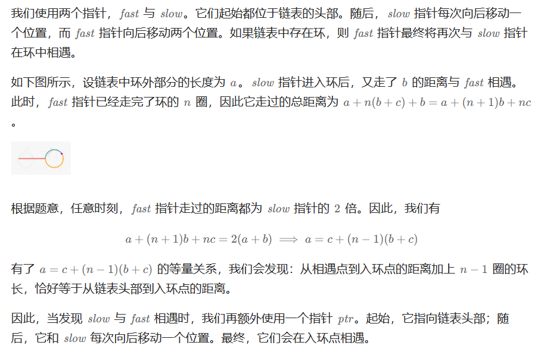
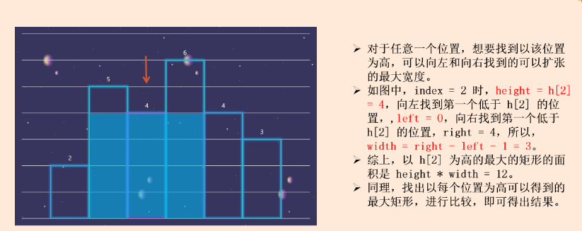
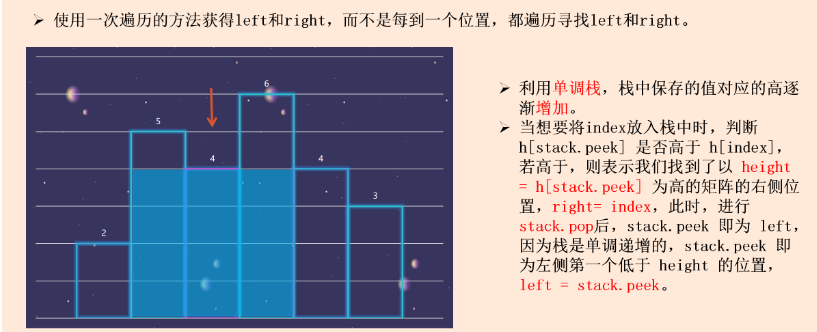

整数
简单
给定两个整数 a 和 b ，求它们的除法的商
a/b ，要求不得使用乘号 '*'、除号
'/' 以及求余符号 '%' 。
注意：
整数除法的结果应当截去（truncate）其小数部分，例如：truncate(8.345) = 8
以及 truncate(-2.7335) = -2
假设我们的环境只能存储 32 位有符号整数，其数值范围是
[−231, 231−1]。本题中，如果除法结果溢出，则返回
231 − 1
示例 1：
1 2 3 输入：a = 15, b = 2 输出：7 解释：15/2 = truncate(7.5) = 7
示例 2：
1 2 3 输入：a = 7, b = -3 输出：-2 解释：7/-3 = truncate(-2.33333..) = -2
示例 3：
示例 4：
算法分析
快速乘 + 二分
1 2 3 4 5 6 7 8 9 10 11 12 13 14 15 16 17 18 19 20 21 22 23 24 25 26 27 28 29 30 31 32 33 34 35 36 37 38 39 40 41 42 43 44 45 46 47 48 49 50 51 52 53 54 55 56 57 58 59 60 61 62 63 64 65 66 67 68 69 70 71 72 73 74 75 76 77 78 79 80 81 82 83 class Solution { public int divide (int a, int b) { if (a == Integer.MIN_VALUE){ if (b == 1 ){ return Integer.MIN_VALUE; } if (b == -1 ){ return Integer.MAX_VALUE; } } if (b == Integer.MIN_VALUE){ return a == Integer.MIN_VALUE ? 1 : 0 ; } if (a == 0 ){ return 0 ; } boolean rev = false ; if (a > 0 ) { a = -a; rev = !rev; } if (b > 0 ) { b = -b; rev = !rev; } int left = 1 , right = Integer.MAX_VALUE, ans = 0 ; while (left <= right) { int mid = left + ((right - left) >> 1 ); boolean check = quickAdd(b, mid, a); if (check) { ans = mid; if (mid == Integer.MAX_VALUE) { break ; } left = mid + 1 ; } else { right = mid - 1 ; } } return rev ? -ans : ans; } public boolean quickAdd (int y, int z, int x) { int result = 0 ; int add = y; while (z != 0 ){ if ((z & 1 ) != 0 ){ if (result < x - add){ return false ; } result += add; } if (z != 1 ){ if (add < x - add){ return false ; } add += add; } z >>= 1 ; } return true ; } }
给定两个 01 字符串 a 和 b
，请计算它们的和，并以二进制字符串的形式输出。
输入为 非空 字符串且只包含数字 1 和
0。
示例 1:
1 2 输入: a = "11", b = "10" 输出: "101"
示例 2:
1 2 输入: a = "1010", b = "1011" 输出: "10101"
提示：
每个字符串仅由字符 '0' 或 '1' 组成。
1 <= a.length, b.length <= 10^4字符串如果不是 "0" ，就都不含前导零。
算法分析
模拟加
1 2 3 4 5 6 7 8 9 10 11 12 13 14 15 16 17 18 19 class Solution { public String addBinary (String a, String b) { StringBuilder ans = new StringBuilder (); int n = Math.max(a.length(), b.length()); int carry = 0 ; for (int i = 0 ; i < n; i++) { carry += i < a.length() ? (a.charAt(a.length() - 1 - i) - '0' ) : 0 ; carry += i < b.length() ? (b.charAt(b.length() - 1 - i) - '0' ) : 0 ; ans.append((char )(carry % 2 + '0' )); carry /= 2 ; } if (carry > 0 ){ ans.append((char )(carry % 2 + '0' )); } return ans.reverse().toString(); } }
给你一个整数 n ，对于 0 <= i <= n
中的每个 i ，计算其二进制表示中 1
的个数n + 1 的数组
ans 作为答案。
示例 1：
1 2 3 4 5 6 输入：n = 2 输出：[0,1,1] 解释： 0 --> 0 1 --> 1 2 --> 10
算法分析
简单循环与运算
传统的处理数的方式：拿当前的数和1进行&判断最后一位是不是1，然后二进制右移一下，判断下一位...
1 2 3 4 5 6 7 8 9 10 11 12 13 14 15 16 17 18 19 class Solution { public int [] countBits(int n) { int [] ans = new int [n+1 ]; ans[0 ] = 0 ; for (int i = 1 ; i <= n; i++){ int cur = i; while (cur > 0 ){ if ((cur & 1 ) == 1 ){ ans[i]++; } cur >>= 1 ; } } return ans; } }
性能
image-20230828100829993
动态规划-最高有效位
一个整数 i 如果是2的n次幂，那他只有最高位为1。那我们把 \([2^n , 2^{n+1}]\) 里的数x，减去$ 2 ^ n$
，这样退阶到子问题阶层，然后实际1的个数比这个子问题多一（因为最高位基于
$ 2 ^ n$)
判断整数是否为2的n次幂的方法： i & (i - 1) == 0
1 2 3 4 5 6 7 8 9 10 11 12 13 14 15 16 class Solution { public int [] countBits(int n) { int [] ans = new int [n + 1 ]; ans[0 ] = 0 ; int highBit = 0 ; for (int i = 1 ; i <= n; i++){ if ((i & (i-1 )) == 0 ){ highBit = i; } ans[i] = ans[i - highBit] + 1 ; } return ans; } }
给定一个已按照 升序排列 的整数数组
numbers ，请你从数组中找出两个数满足相加之和等于目标数
target 。
函数应该以长度为 2
的整数数组的形式返回这两个数的下标值。 numbers
的下标 从 0 开始计数 ，所以答案数组应当满足
0 <= answer[0] < answer[1] < numbers.length 。
假设数组中存在且只存在一对符合条件的数字，同时一个数字不能使用两次。
示例 1：
1 2 3 输入：numbers = [1,2,4,6,10], target = 8 输出：[1,3] 解释：2 与 6 之和等于目标数 8 。因此 index1 = 1, index2 = 3 。
示例 2：
1 2 输入：numbers = [2,3,4], target = 6 输出：[0,2]
示例 3：
1 2 输入：numbers = [-1,0], target = -1 输出：[0,1]
双指针
1 2 3 4 5 6 7 8 9 10 11 12 13 14 15 16 17 18 class Solution { public int [] twoSum(int [] numbers, int target) { int left = 0 ; int right = numbers.length - 1 ; while (left <right){ if (numbers[left] + numbers[right] > target){ right--; }else if (numbers[left] + numbers[right] < target){ left++; }else { return new int []{left, right}; } } return new int []{}; } }
中等
给你一个整数数组 nums ，除某个元素仅出现
一次 外，其余每个元素都恰出现 三次
。 请你找出并返回那个只出现了一次的元素。
示例 1：
1 2 输入：nums = [2,2,3,2] 输出：3
示例 2：
1 2 输入：nums = [0,1,0,1,0,1,100] 输出：100
确定每一个二进制位
如果数字出现三次，它的全部二进制位置于0，忽略不计
1 2 3 4 5 6 7 8 9 10 11 12 13 14 15 16 17 class Solution { public int singleNumber (int [] nums) { int ans = 0 ; for (int i = 0 ; i < 32 ; i++) { int val = 0 ; for (int num : nums) { val += ((num >> i) & 1 ); } if (val % 3 != 0 ){ ans |= (1 << i); } } return ans; } }
给定一个字符串数组 words，请计算当两个字符串
words[i] 和 words[j]
不包含相同字符时，它们长度的乘积的最大值。假设字符串中只包含英语的小写字母。如果没有不包含相同字符的一对字符串，返回
0。
示例 1:
1 2 3 输入: words = ["abcw","baz","foo","bar","fxyz","abcdef"] 输出: 16 解释: 这两个单词为 "abcw", "fxyz"。它们不包含相同字符，且长度的乘积最大。
示例 2:
1 2 3 输入: words = ["a","ab","abc","d","cd","bcd","abcd"] 输出: 4 解释: 这两个单词为 "ab", "cd"。
示例 3:
1 2 3 输入: words = ["a","aa","aaa","aaaa"] 输出: 0 解释: 不存在这样的两个单词。
提示：
2 <= words.length <= 101 <= words[i].length <= 10words[i] 仅包含小写字母
位运算压缩存储
1 2 3 4 5 6 7 8 9 10 11 12 13 14 15 16 17 18 19 20 21 22 23 24 public int maxProduct (String[] words) { int n = words.length; int [] masks = new int [n]; for (int i = 0 ; i < n; i++) { String word = words[i]; int wordLength = word.length(); for (int j = 0 ; j < wordLength; j++) { masks[i] |= 1 << (word.charAt(j) - 'a' ); } } int ans = 0 ; for (int i = 0 ; i < n; i++) { for (int j = i + 1 ; j < n; j++) { if ((masks[i] & masks[j]) == 0 ){ ans = Math.max(ans, words[i].length() * words[j].length()); } } } return ans; }
数组
简单
给你一个整数数组 nums ，请计算数组的
中心下标 。
数组 中心下标
是数组的一个下标，其左侧所有元素相加的和等于右侧所有元素相加的和。
如果中心下标位于数组最左端，那么左侧数之和视为 0
，因为在下标的左侧不存在元素。这一点对于中心下标位于数组最右端同样适用。
如果数组有多个中心下标，应该返回 最靠近左边
的那一个。如果数组不存在中心下标，返回 -1 。
示例 1：
1 2 3 4 5 6 输入：nums = [1,7,3,6,5,6] 输出：3 解释： 中心下标是 3 。 左侧数之和 sum = nums[0] + nums[1] + nums[2] = 1 + 7 + 3 = 11 ， 右侧数之和 sum = nums[4] + nums[5] = 5 + 6 = 11 ，二者相等。
示例 2：
1 2 3 4 输入：nums = [1, 2, 3] 输出：-1 解释： 数组中不存在满足此条件的中心下标。
示例 3：
1 2 3 4 5 6 输入：nums = [2, 1, -1] 输出：0 解释： 中心下标是 0 。 左侧数之和 sum = 0 ，（下标 0 左侧不存在元素）， 右侧数之和 sum = nums[1] + nums[2] = 1 + -1 = 0 。
提示：
1 <= nums.length <= 10^4-10 <= nums[i] <= 10
算法分析
前缀和
但是不用前缀和数组，只需前半段的和即可
1 2 3 4 5 6 7 8 9 10 11 12 13 14 15 16 17 class Solution { public int pivotIndex (int [] nums) { int n = nums.length; int total = Arrays.stream(nums).sum(); int sum = 0 ; for (int i = 0 ; i < n; i++) { if (2 * sum + nums[i] == total){ return i; } sum += nums[i]; } return -1 ; } }
中等
给你一个整数数组 nums ，判断是否存在三元组
[nums[i], nums[j], nums[k]] 满足
i != j、i != k 且 j != k
，同时还满足 nums[i] + nums[j] + nums[k] == 0 。请
你返回所有和为 0 且不重复的三元组。
注意： 答案中不可以包含重复的三元组。
示例 1：
1 2 3 4 5 6 7 8 输入：nums = [-1,0,1,2,-1,-4] 输出：[[-1,-1,2],[-1,0,1]] 解释： nums[0] + nums[1] + nums[2] = (-1) + 0 + 1 = 0 。 nums[1] + nums[2] + nums[4] = 0 + 1 + (-1) = 0 。 nums[0] + nums[3] + nums[4] = (-1) + 2 + (-1) = 0 。 不同的三元组是 [-1,0,1] 和 [-1,-1,2] 。 注意，输出的顺序和三元组的顺序并不重要。
示例 2：
1 2 3 输入：nums = [0,1,1] 输出：[] 解释：唯一可能的三元组和不为 0 。
示例 3：
1 2 3 输入：nums = [0,0,0] 输出：[[0,0,0]] 解释：唯一可能的三元组和为 0 。
算法分析
对向指针
这题注意去重，排序过后，对于相同的相邻元素的处理：直接跳过即可。
1 2 3 4 5 6 7 8 9 10 11 12 13 14 15 16 17 18 19 20 21 22 23 24 25 26 27 28 29 30 31 32 33 34 35 36 37 class Solution { public List<List<Integer>> threeSum (int [] nums) { int n = nums.length; List<List<Integer>> ans = new ArrayList <>(); if (n == 0 ){ return ans; } Arrays.sort(nums); for (int i = 0 ; i < n; i++) { if (nums[i] > 0 ){ break ; } int left = i + 1 ; int right = n - 1 ; if (i > 0 && nums[i] == nums[i-1 ]) continue ; while (left < right){ int sum = nums[i] + nums[left] + nums[right]; if (sum == 0 ) { ans.add(Arrays.asList(nums[i], nums[left], nums[right])); while (left < right && nums[left] == nums[left + 1 ]) left++; while (left < right && nums[right] == nums[right - 1 ]) right--; left++; right--; }else if (sum < 0 ){ left++; }else { right--; } } } return ans; } }
给定一个含有 n 个正整数的数组和一个正整数
target 。
找出该数组中满足其和 ≥ target 的长度最小的
连续子数组
[numsl, numsl+1, ..., numsr-1, numsr]
，并返回其长度。 如果不存在符合条件的子数组，返回
0 。
示例 1：
1 2 3 输入：target = 7, nums = [2,3,1,2,4,3] 输出：2 解释：子数组 [4,3] 是该条件下的长度最小的子数组。
示例 2：
1 2 输入：target = 4, nums = [1,4,4] 输出：1
示例 3：
1 2 输入：target = 11, nums = [1,1,1,1,1,1,1,1] 输出：0
算法分析
本题最直观解法就是以每一个元素为起点，利用第二重循环去找sum之和，一旦比target大（或者相等）就记录这次窗口的大小，继续循环...
后续可以优化为滑动窗口
暴力
1 2 3 4 5 6 7 8 9 10 11 12 13 14 15 16 17 18 19 20 21 class Solution { public int minSubArrayLen (int target, int [] nums) { int n = nums.length; int ans = Integer.MAX_VALUE; for (int i = 0 ; i < n; i++) { int sum = nums[i]; int count = 1 ; int j = i; while (++j < n && sum < target){ sum += nums[j++]; count++; } if (sum >= target){ ans = Math.min(ans, count); } } return ans == Integer.MAX_VALUE ? 0 : ans; } }
滑动窗口
1 2 3 4 5 6 7 8 9 10 11 12 13 14 15 16 17 18 19 class Solution { public int minSubArrayLen (int target, int [] nums) { int n = nums.length; int ans = Integer.MAX_VALUE; int start = 0 ,end = 0 ; int sum = 0 ; while (end < n){ sum += nums[end]; while (sum >= target){ ans = Math.min(ans, end - start + 1 ); sum -= nums[start++]; } end++; } return ans == Integer.MAX_VALUE ? 0 : ans; } }
前缀和 + 二分查找
1 2 3 4 5 6 7 8 9 10 11 12 13 14 15 16 17 18 19 20 21 22 23 24 25 26 27 class Solution { public int minSubArrayLen (int target, int [] nums) { int n = nums.length; int ans = Integer.MAX_VALUE; int [] sums = new int [n + 1 ]; for (int i = 1 ; i < (n + 1 ); i++) { sums[i] = sums[i-1 ] + nums[i]; } for (int i = 1 ; i <= n; i++) { int targetBinary = target + sums[i-1 ]; int idx = Arrays.binarySearch(sums, targetBinary); if (idx < 0 ){ idx = -idx -1 ; } if (idx >= 0 && idx <= n){ ans = Math.min(idx - (i-1 ), ans); } } return ans == Integer.MAX_VALUE ? 0 : ans; } }
给定一个正整数数组 nums和整数 k
，请找出该数组内乘积小于 k 的连续的子数组的个数。
示例 1:
1 2 3 4 输入: nums = [10,5,2,6], k = 100 输出: 8 解释: 8 个乘积小于 100 的子数组分别为: [10], [5], [2], [6], [10,5], [5,2], [2,6], [5,2,6]。 需要注意的是 [10,5,2] 并不是乘积小于100的子数组。
示例 2:
1 2 输入: nums = [1,2,3], k = 0 输出: 0
算法分析
滑动窗口
1 2 3 4 5 6 7 8 9 10 11 12 13 14 15 16 17 18 19 20 21 class Solution { public int numSubarrayProductLessThanK (int [] nums, int k) { if (k == 0 ){ return 0 ; } int n = nums.length; int start = 0 , end = 0 ; int multi = 1 ; int ans = 0 ; while (end < n){ multi *= nums[end]; while (start <= end && multi >= k){ multi /= nums[start++]; } ans += end - start + 1 ; end++; } return ans; } }
去重 ： 假如数组是[1,2,3,4,5] k = 10。
滑动窗口大小为1，乘积是1，1 < 10，因此需要加入结果集，res += end
- start + 1 = 0 - 0 + 1 = 1 [1];
滑动窗口大小为2，乘积是2，2 < 10，因此需要加入结果集，res += end
- start + 1 = 1 - 0 + 1 = 2 [1,2] [2];
滑动窗口大小为3，乘积是6，6 < 10，因此需要加入结果集，res += end
- start + 1 = 2 - 0 + 1 = 3 [1,2,3] [2,3] [3];
关于为什么子数组数目为j-1+1。我们采用滑动窗口的思路其实是枚举子数组的右端点，然后来找到满足条件的最小左端点。也即当得到满足条件的窗口时，就意味着得到了以
j
作为右端点时满足条件的左端点的下标最小值 。那么此时满足条件的子数组个数当然就等于窗口能所有能作为左端点的位置个数，即j-i+1。
给定一个整数数组和一个整数 k
， 请找到该数组中和为 k
的连续子数组的个数。
示例 1：
1 2 3 输入:nums = [1,1,1], k = 2 输出: 2 解释: 此题 [1,1] 与 [1,1] 为两种不同的情况
示例 2：
1 2 输入:nums = [1,2,3], k = 3 输出: 2
算法分析
本题存在负数，如果使用滑动窗口，会出现越滑越少的情况，不满足滑动窗口使用的特性
暴力法
1 2 3 4 5 6 7 8 9 10 11 12 13 14 15 16 17 class Solution { public int subarraySum (int [] nums, int k) { int res = 0 ; int n = nums.length; for (int start = 0 ; start < n; start++) { int sum = 0 ; for (int end = start; end > 0 ; end--) { sum += nums[end]; if (sum == k){ res++; } } } return res; } }
前缀和+哈希表
假设已知前缀和数组pre，那么
[j...i]中子数组和为K的个数 转化为
pre[i] - pre[j - 1] == kpre[j-1] == pre[i] - k
。
考虑以 i 结尾的和为 k 的连续子数组个数时只要统计有多少个前缀和为
pre[i] - k 的 pre[j-1] 也就是j-1的个数也就是j的个数。
借助哈希表，以pre和为键，出现次数为值。
1 2 3 4 5 6 7 8 9 10 11 12 13 14 15 16 17 18 class Solution { public int subarraySum (int [] nums, int k) { int res = 0 ; int n = nums.length; int pre = 0 ; Map<Integer, Integer> map = new HashMap <>(); map.put(0 , 1 ); for (int i = 0 ; i < n; i++) { pre += nums[i]; if (map.containsKey(pre - k)){ res += map.get(pre - k); } map.put(pre, map.getOrDefault(pre, 0 ) + 1 ); } return res; } }
给定一个二进制数组 nums , 找到含有相同数量的
0 和 1
的最长连续子数组，并返回该子数组的长度。
示例 1：
1 2 3 输入: nums = [0,1] 输出: 2 说明: [0, 1] 是具有相同数量 0 和 1 的最长连续子数组。
示例 2：
1 2 3 输入: nums = [0,1,0] 输出: 2 说明: [0, 1] (或 [1, 0]) 是具有相同数量 0 和 1 的最长连续子数组。
提示：
1 <= nums.length <= 10^5nums[i] 不是 0 就是 1
算法分析
如果把0视作-1，那就是求和为0的子数组的最大长度 ，题目瞬间回到LCR010
哈希表+前缀和
1 2 3 4 5 6 7 8 9 10 11 12 13 14 15 16 17 18 19 20 21 22 23 24 25 class Solution { public int findMaxLength (int [] nums) { int res = 0 ; int n = nums.length; int pre = 0 ; Map<Integer, Integer> map = new HashMap <>(); map.put(pre, -1 ); for (int i = 0 ; i < n; i++) { if (nums[i] == 1 ){ pre++; }else { pre--; } if (map.containsKey(pre)){ res = Math.max(res, i - map.get(pre)); }else { map.put(pre, i); } } return res; } }
给定一个二维矩阵 matrix，以下类型的多个请求：
计算其子矩形范围内元素的总和，该子矩阵的左上角为
(row1, col1) ，右下角为 (row2, col2) 。
实现 NumMatrix 类：
NumMatrix(int[][] matrix) 给定整数矩阵
matrix 进行初始化int sumRegion(int row1, int col1, int row2, int col2)
返回左上角 (row1, col1) 、右下角 (row2, col2)
的子矩阵的元素总和。
示例 1：
img
1 2 3 4 5 6 7 8 9 10 11 输入: ["NumMatrix","sumRegion","sumRegion","sumRegion"] [[[[3,0,1,4,2],[5,6,3,2,1],[1,2,0,1,5],[4,1,0,1,7],[1,0,3,0,5]]],[2,1,4,3],[1,1,2,2],[1,2,2,4]] 输出: [null, 8, 11, 12] 解释: NumMatrix numMatrix = new NumMatrix([[3,0,1,4,2],[5,6,3,2,1],[1,2,0,1,5],[4,1,0,1,7],[1,0,3,0,5]]]); numMatrix.sumRegion(2, 1, 4, 3); // return 8 (红色矩形框的元素总和) numMatrix.sumRegion(1, 1, 2, 2); // return 11 (绿色矩形框的元素总和) numMatrix.sumRegion(1, 2, 2, 4); // return 12 (蓝色矩形框的元素总和)
算法分析
一维前缀和
1 2 3 4 5 6 7 8 9 10 11 12 13 14 15 16 17 18 19 20 21 22 23 24 25 26 class NumMatrix { int [][] sums; public NumMatrix (int [][] matrix) { int m = matrix.length; if (m > 0 ){ int n = matrix[0 ].length; sums = new int [m][n + 1 ]; for (int i = 0 ; i < m; i++) { for (int j = 0 ; j < n; j++) { sums[i][j + 1 ] = sums[i][j] + matrix[i][j]; } } } } public int sumRegion (int row1, int col1, int row2, int col2) { int sum = 0 ; for (int i = row1; i <= row2; i++) { sum += sums[i][col2 + 1 ] - sums[i][col1]; } return sum; } }
字符串
简单
给定一个字符串 s ，验证 s 是否是
回文串
，只考虑字母和数字字符，可以忽略字母的大小写。
本题中，将空字符串定义为有效的 回文串 。
示例 1:
1 2 3 输入: s = "A man, a plan, a canal: Panama" 输出: true 解释："amanaplanacanalpanama" 是回文串
示例 2:
1 2 3 输入: s = "race a car" 输出: false 解释："raceacar" 不是回文串
提示：
1 <= s.length <= 2 * 10^5字符串 s 由 ASCII 字符组成
算法分析
很明显是双指针的题目，可以事先对字符串进行最小化处理，但是也可以不用，这样空间复杂度就来到了O(1)
双指针 + 原地判断
1 2 3 4 5 6 7 8 9 10 11 12 13 14 15 16 17 18 19 20 21 22 23 24 class Solution { public boolean isPalindrome (String s) { int n = s.length(); int left = 0 ; int right = s.length() - 1 ; while (left < right){ while (left < right && !Character.isLetterOrDigit(s.charAt(left))) left++; while (left < right && !Character.isLetterOrDigit(s.charAt(right)))right--; if (Character.toLowerCase(s.charAt(left)) != Character.toLowerCase(s.charAt(right))){ return false ; } left++; right--; } return true ; } }
给定一个非空字符串 s，请判断如果 最多
从字符串中删除一个字符能否得到一个回文字符串。
示例 1:
示例 2:
1 2 3 输入: s = "abca" 输出: true 解释: 可以删除 "c" 字符 或者 "b" 字符
示例 3:
算法分析
贪心
1 2 3 4 5 6 7 8 9 10 11 12 13 14 15 16 17 18 19 20 21 22 23 24 25 26 27 28 29 30 31 32 33 34 35 36 37 38 class Solution { public boolean validPalindrome (String s) { int low = 0 , high = s.length() - 1 ; while (low < high){ char c1 = s.charAt(low); char c2 = s.charAt(high); if (c1 == c2){ low++; high--; }else { return validPalindrome(s,low + 1 , high) || validPalindrome(s,low,high - 1 ); } } return true ; } public boolean validPalindrome (String s, int low, int high) { for (int i = low, j = high; i < j; ++i, --j) { char c1 = s.charAt(i), c2 = s.charAt(j); if (c1 != c2) { return false ; } } return true ; } }
中等
给定两个字符串 s1 和 s2，写一个函数来判断
s2 是否包含 s1 的某个变位词。
换句话说，第一个字符串的排列之一是第二个字符串的
子串 。
示例 1：
1 2 3 输入: s1 = "ab" s2 = "eidbaooo" 输出: True 解释: s2 包含 s1 的排列之一 ("ba").
示例 2：
1 2 输入: s1= "ab" s2 = "eidboaoo" 输出: False
提示：
1 <= s1.length, s2.length <= 10^4s1 和 s2 仅包含小写字母
算法分析
固定长度滑动窗口 + hash表
1 2 3 4 5 6 7 8 9 10 11 12 13 14 15 16 17 18 19 20 21 22 23 24 25 26 class Solution { public boolean checkInclusion (String s1, String s2) { int n = s1.length(); int m = s2.length(); if (n > m){ return false ; } int [] hash1 = new int [26 ]; int [] hash2 = new int [26 ]; for (int i = 0 ; i < n; i++) { hash1[s1.charAt(i) - 'a' ]++; hash2[s2.charAt(i) - 'a' ]++; } if (Arrays.equals(hash1, hash2)) return true ; for (int i = n; i < m; i++) { hash2[s2.charAt(i) - 'a' ]++; hash2[s2.charAt(i - n) - 'a' ]--; if (Arrays.equals(hash1, hash2)){ return true ; } } return false ; } }
给定两个字符串 s 和 p，找到 s
中所有 p 的 变位词
的子串，返回这些子串的起始索引。不考虑答案输出的顺序。
变位词 指字母相同，但排列不同的字符串。
示例 1：
1 2 3 4 5 输入: s = "cbaebabacd", p = "abc" 输出: [0,6] 解释: 起始索引等于 0 的子串是 "cba", 它是 "abc" 的变位词。 起始索引等于 6 的子串是 "bac", 它是 "abc" 的变位词。
示例 2：
1 2 3 4 5 6 输入: s = "abab", p = "ab" 输出: [0,1,2] 解释: 起始索引等于 0 的子串是 "ab", 它是 "ab" 的变位词。 起始索引等于 1 的子串是 "ba", 它是 "ab" 的变位词。 起始索引等于 2 的子串是 "ab", 它是 "ab" 的变位词。
提示:
1 <= s.length, p.length <= 3 * 10^4s 和 p 仅包含小写字母
算法分析
涉及到字母异位词，字符串排列匹配子串的，大多都是滑动窗口 +
哈希表解决
固定长度滑动窗口 + hash表
一个哈希表足以，相同的字符，s有就++，p有就--，为0表示s与p匹配
1 2 3 4 5 6 7 8 9 10 11 12 13 14 15 16 17 18 19 20 21 22 23 24 25 26 27 28 29 30 31 32 33 34 35 36 37 38 39 40 41 42 43 44 45 class Solution { public List<Integer> findAnagrams (String s, String p) { int n = p.length(); int m = s.length(); List<Integer> res = new ArrayList <>(); if (n > m){ return res; } int [] hash = new int [26 ]; for (int i = 0 ; i < n; i++) { hash[s.charAt(i) - 'a' ]++; hash[p.charAt(i) - 'a' ]--; } int differ = 0 ; for (int i = 0 ; i < 26 ; i++) { if (hash[i] != 0 ){ differ++; } } if (differ == 0 ){ res.add(0 ); } for (int i = n; i < m; i++) { if (hash[s.charAt(i - n) - 'a' ] == 0 ){ differ++; }else if (hash[s.charAt(i - n) - 'a' ] == 1 ){ differ--; } hash[s.charAt(i - n) - 'a' ]--; if (hash[s.charAt(i) - 'a' ] == -1 ){ differ--; }else if (hash[s.charAt(i) - 'a' ] == 0 ){ differ++; } hash[s.charAt(i) - 'a' ]++; if (differ == 0 ){ res.add(i - n + 1 ); } } return res; } }
给定一个字符串 s ，请你找出其中不含有重复字符的
最长连续子字符串 的长度。
示例 1:
1 2 3 输入: s = "abcabcbb" 输出: 3 解释: 因为无重复字符的最长子字符串是 "abc"，所以其长度为 3。
示例 2:
1 2 3 输入: s = "bbbbb" 输出: 1 解释: 因为无重复字符的最长子字符串是 "b"，所以其长度为 1。
示例 3:
1 2 3 4 输入: s = "pwwkew" 输出: 3 解释: 因为无重复字符的最长子串是 "wke"，所以其长度为 3。 请注意，你的答案必须是 子串 的长度，"pwke" 是一个子序列，不是子串。
示例 4:
提示：
0 <= s.length <= 5 * 10^4s 由英文字母、数字、符号和空格组成
算法分析
滑动窗口 + 哈希表
1 2 3 4 5 6 7 8 9 10 11 12 13 14 15 16 17 18 19 20 21 22 23 24 25 26 27 28 29 30 31 32 class Solution { public int lengthOfLongestSubstring (String s) { int res = 0 ; int n = s.length(); if (n == 0 ){ return res; } int left = 0 ; int right = 0 ; Map<Character, Integer> hash = new HashMap <>(); while (left <= right && right < n){ while (right < n && !hash.containsKey(s.charAt(right))){ hash.put(s.charAt(right), right); right++; } res = Math.max(res, right - left); if (right >= n){ break ; } Integer lastIdx = hash.get(s.charAt(right)); while (left < lastIdx + 1 ){ hash.remove(s.charAt(left++)); } hash.put(s.charAt(right), right); right++; } return res; } }
滑动窗口 + 哈希表(优化)
上面写的时候有点模拟的味道了，内嵌循环可以取消的。
1 2 3 4 5 6 7 8 9 10 11 12 13 14 15 16 17 18 19 20 21 22 23 24 25 26 class Solution { public int lengthOfLongestSubstring (String s) { int res = 0 ; int n = s.length(); if (n == 0 ){ return res; } int left = 0 ; int right = 0 ; Map<Character, Integer> hash = new HashMap <>(); while (right < n){ if (!hash.containsKey(s.charAt(right))){ hash.put(s.charAt(right), right); }else { left = Math.max(left, hash.get(s.charAt(right)) + 1 ); hash.put(s.charAt(right), right); } res = Math.max(res, right - left + 1 ); right++; } return res; } }
给定一个字符串 s
，请计算这个字符串中有多少个回文子字符串。
具有不同开始位置或结束位置的子串，即使是由相同的字符组成，也会被视作不同的子串。
示例 1：
1 2 3 输入：s = "abc" 输出：3 解释：三个回文子串: "a", "b", "c"
示例 2：
1 2 3 输入：s = "aaa" 输出：6 解释：6个回文子串: "a", "a", "a", "aa", "aa", "aaa"
提示：
1 <= s.length <= 10s 由小写英文字母组成
算法分析
二维动态规划
dp[i][j]表示子串[i,j]是否是回文子串
1 2 3 4 5 6 7 8 9 10 11 12 13 14 15 16 17 18 19 20 class Solution { public int countSubstrings (String s) { int n = s.length(); boolean [][] dp = new boolean [n][n]; for (int i = 0 ; i < n; i++) { dp[i][i] = true ; } int res = n; for (int i = n-1 ; i >= 0 ; i--){ for (int j = i + 1 ; j < n; j++) { if (s.charAt(i) == s.charAt(j) && (j ==i+1 || dp[i + 1 ][j - 1 ])){ dp[i][j] = true ; res++; } } } return res; } }
困难
给定两个字符串 s 和 t 。返回 s
中包含 t 的所有字符的最短子字符串。如果 s
中不存在符合条件的子字符串，则返回空字符串 "" 。
如果 s 中存在多个符合条件的子字符串，返回任意一个。
注意： 对于 t
中重复字符，我们寻找的子字符串中该字符数量必须不少于 t
中该字符数量。
示例 1：
1 2 3 输入：s = "ADOBECODEBANC", t = "ABC" 输出："BANC" 解释：最短子字符串 "BANC" 包含了字符串 t 的所有字符 'A'、'B'、'C'
示例 2：
1 2 输入：s = "a", t = "a" 输出："a"
示例 3：
1 2 3 输入：s = "a", t = "aa" 输出："" 解释：t 中两个字符 'a' 均应包含在 s 的子串中，因此没有符合条件的子字符串，返回空字符串。
提示：
1 <= s.length, t.length <= 10^5s 和 t 由英文字母组成
算法分析
哈希表+滑动窗口
1 2 3 4 5 6 7 8 9 10 11 12 13 14 15 16 17 18 19 20 21 22 23 24 25 26 27 28 29 30 31 32 33 34 35 36 37 38 39 40 class Solution { public String minWindow (String s, String t) { int m = s.length(); int n = t.length(); if (n > m){ return "" ; } int [] needHash = new int [128 ]; for (int i = 0 ; i < n; i++) { needHash[t.charAt(i)]++; } int left = 0 ; int right = 0 ; int needCnt = n; int size = Integer.MAX_VALUE; int beginIndex = -1 ; while (right < m){ char c = s.charAt(right); if (needHash[c] > 0 ){ needCnt--; } needHash[c]--; if (needCnt == 0 ){ while (left < right && needHash[s.charAt(left)] < 0 ) needHash[s.charAt(left++)]++; if (size > right - left + 1 ){ size = right - left + 1 ; beginIndex = left; } needCnt++; needHash[s.charAt(left++)]++; } right++; } return size == Integer.MAX_VALUE? "" : s.substring(beginIndex, size); } }
链表
简单
给定两个单链表的头节点 headA 和 headB
，请找出并返回两个单链表相交的起始节点。如果两个链表没有交点，返回
null 。
图示两个链表在节点 c1 开始相交：
题目数据 保证 整个链式结构中不存在环。
注意 ，函数返回结果后，链表必须
保持其原始结构 。
示例 1：
1 2 3 4 5 输入：intersectVal = 8, listA = [4,1,8,4,5], listB = [5,0,1,8,4,5], skipA = 2, skipB = 3 输出：Intersected at '8' 解释：相交节点的值为 8 （注意，如果两个链表相交则不能为 0）。 从各自的表头开始算起，链表 A 为 [4,1,8,4,5]，链表 B 为 [5,0,1,8,4,5]。 在 A 中，相交节点前有 2 个节点；在 B 中，相交节点前有 3 个节点。
示例 2：
1 2 3 4 5 输入：intersectVal = 2, listA = [0,9,1,2,4], listB = [3,2,4], skipA = 3, skipB = 1 输出：Intersected at '2' 解释：相交节点的值为 2 （注意，如果两个链表相交则不能为 0）。 从各自的表头开始算起，链表 A 为 [0,9,1,2,4]，链表 B 为 [3,2,4]。 在 A 中，相交节点前有 3 个节点；在 B 中，相交节点前有 1 个节点。
示例 3：
1 2 3 4 5 输入：intersectVal = 0, listA = [2,6,4], listB = [1,5], skipA = 3, skipB = 2 输出：null 解释：从各自的表头开始算起，链表 A 为 [2,6,4]，链表 B 为 [1,5]。 由于这两个链表不相交，所以 intersectVal 必须为 0，而 skipA 和 skipB 可以是任意值。 这两个链表不相交，因此返回 null 。
提示：
listA 中节点数目为 mlistB 中节点数目为 n0 <= m, n <= 3 * 10^41 <= Node.val <= 10^50 <= skipA <= m0 <= skipB <= n如果 listA 和 listB
没有交点，intersectVal 为 0
如果 listA 和 listB
有交点，intersectVal == listA[skipA + 1] == listB[skipB + 1]
算法分析
双指针 + 数学
数学思路：
两个指针p、q分别指向headA、headB，同时遍历，如果p || q
到达各自链表终点，则把指针置为另一个链表的头结点继续运行。
证明：
假设链表A长度为m，链表B长度为n
假如两个链表相交：设相交部分链表长度为c，A不相交部分为a，b不相交部分为b，那按照遍历思路：
如果a == b：那两个指针会同时指向相交结点，循环结束，返回p || q
如果a ！= b：p指针会走： a + c + b距离 q指针会走 b + c +
a距离，两者走的距离相同，因此（第二次交叉遍历）会到达相交结点
假如两个链表不相交：设相交部分链表长度为c，A不相交部分为a，b不相交部分为b，那按照遍历思路：
a == b：同时走到null，返回
a ！= b：交叉后，会同时走 m + n个距离，走向null，返回
1 2 3 4 5 6 7 8 9 10 11 12 13 14 15 16 17 public class Solution { public ListNode getIntersectionNode (ListNode headA, ListNode headB) { if (headA == null || headB == null ){ return null ; } ListNode p = headA; ListNode q = headB; while (p != q){ p = p == null ? headB : p.next; q = q == null ? headA : q.next; } return p; } }
给定单链表的头节点 head
，请反转链表，并返回反转后的链表的头节点。
示例 1：
img
1 2 输入：head = [1,2,3,4,5] 输出：[5,4,3,2,1]
示例 2：
img
1 2 输入：head = [1,2] 输出：[2,1]
示例 3：
提示：
链表中节点的数目范围是 [0, 50]
-50 <= Node.val <= 50
算法分析
头插法
1 2 3 4 5 6 7 8 9 10 11 12 13 14 15 16 public ListNode reverseList (ListNode head) { if (head == null ){ return null ; } ListNode dummy = new ListNode (-1 ); ListNode p = head; ListNode next = p; while (next != null ){ next = p.next; p.next = dummy.next; dummy.next = p; p = next; } return dummy.next; }
给定一个链表的 头节点 head
， 请判断其是否为回文链表。
如果一个链表是回文，那么链表节点序列从前往后看和从后往前看是相同的。
示例 1：
1 2 输入: head = [1,2,3,3,2,1] 输出: true
示例 2：
1 2 输入: head = [1,2] 输出: false
提示：
链表 L 的长度范围为 [1, 10^5]
0 <= node.val <= 9
算法分析
涉及到回文类的题目，值都是123321的，对于链表，反转链表就是不错的思路
也可以用栈这种数据结构
寻找中点 + 翻转链表
1 2 3 4 5 6 7 8 9 10 11 12 13 14 15 16 17 18 19 20 21 22 23 24 25 26 27 28 29 30 31 32 33 34 35 36 37 38 39 40 class Solution { public boolean isPalindrome (ListNode head) { ListNode middle = findMiddle(head); ListNode q = middle.next; q = reverse(q); ListNode p = head; while (p != null && q != null ){ if (p.val != q.val){ return false ; } p = p.next; q = q.next; } return true ; } public ListNode findMiddle (ListNode head) { ListNode slow = head; ListNode fast = head.next; while (fast != null && fast.next != null ){ slow = slow.next; fast = fast.next.next; } return slow; } public ListNode reverse (ListNode head) { ListNode pre = null ; ListNode cur = head; while (cur != null ){ ListNode next = cur.next; cur.next = pre; pre = cur; cur = next; } return pre; } }
中等
给定一个链表，删除链表的倒数第 n
个结点，并且返回链表的头结点。
示例 1：
img
1 2 输入：head = [1,2,3,4,5], n = 2 输出：[1,2,3,5]
示例 2：
1 2 输入：head = [1], n = 1 输出：[]
示例 3：
1 2 输入：head = [1,2], n = 1 输出：[1]
提示：
链表中结点的数目为 sz
1 <= sz <= 300 <= Node.val <= 1001 <= n <= sz
算法分析
统计结点个数
最直接的思路（两趟遍历）：遍历统计链表结点个数，随后减去n就是顺序第几个元素，再次遍历到要删除结点的位置删掉即可。
1 2 3 4 5 6 7 8 9 10 11 12 13 14 15 16 17 18 public ListNode removeNthFromEnd (ListNode head, int n) { ListNode dummy = new ListNode (-1 , head); ListNode p = head; int count = 0 ; while (p != null ){ p = p.next; count++; } p = head; ListNode pre = dummy; for (int i = 0 ; i < count - n; i++) { p = p.next; pre = pre.next; } pre.next = p.next; return dummy.next; }
双指针（快慢指针）
还有一个规律，快慢指针。快指针位于慢指针前面n个结点，随后一同到达终点，最终慢指针停的地方就是要删除的结点。
当然如果算上哨兵结点，那就慢指针最后停到要删除结点的前一个结点位置处即可。
1 2 3 4 5 6 7 8 9 10 11 12 13 14 15 16 public ListNode removeNthFromEnd (ListNode head, int n) { ListNode dummy = new ListNode (-1 , head); ListNode p = head; ListNode pre = dummy; while (n-- > 0 ){ p = p.next; } while (p != null ){ p = p.next; pre = pre.next; } pre.next = pre.next.next; return dummy.next; }
给定一个链表，返回链表开始入环的第一个节点。 从链表的头节点开始沿着
next
指针进入环的第一个节点为环的入口节点。如果链表无环，则返回
null。
为了表示给定链表中的环，我们使用整数 pos
来表示链表尾连接到链表中的位置（索引从 0 开始）。 如果 pos
是 -1，则在该链表中没有环。注意，pos
仅仅是用于标识环的情况，并不会作为参数传递到函数中。
说明： 不允许修改给定的链表。
示例 1：
img
1 2 3 输入：head = [3,2,0,-4], pos = 1 输出：返回索引为 1 的链表节点 解释：链表中有一个环，其尾部连接到第二个节点。
示例 2：
img
1 2 3 输入：head = [1,2], pos = 0 输出：返回索引为 0 的链表节点 解释：链表中有一个环，其尾部连接到第一个节点。
示例 3：
img
1 2 3 输入：head = [1], pos = -1 输出：返回 null 解释：链表中没有环。
提示：
链表中节点的数目范围在范围 [0, 10^4] 内
-10^5 <= Node.val <= 10^5pos 的值为 -1
或者链表中的一个有效索引
算法分析
快慢指针

1 2 3 4 5 6 7 8 9 10 11 12 13 14 15 16 17 18 19 20 21 22 23 24 25 26 27 28 29 30 31 32 public class Solution { public ListNode detectCycle (ListNode head) { if (head == null ){ return null ; } ListNode slow = head; ListNode fast = head; while (fast != null ){ slow = slow.next; if (fast.next != null ){ fast = fast.next.next; }else { return null ; } if (fast == slow){ ListNode p = head; while (p != slow){ p = p.next; slow = slow.next; } if (p == slow){ return p; } } } return null ; } }
给定两个 非空链表 l1和 l2
来代表两个非负整数。数字最高位位于链表开始位置。它们的每个节点只存储一位数字。将这两数相加会返回一个新的链表。
可以假设除了数字 0 之外，这两个数字都不会以零开头。
示例1：
img
1 2 输入：l1 = [7,2,4,3], l2 = [5,6,4] 输出：[7,8,0,7]
示例2：
1 2 输入：l1 = [2,4,3], l2 = [5,6,4] 输出：[8,0,7]
示例3：
1 2 输入：l1 = [0], l2 = [0] 输出：[0]
提示：
链表的长度范围为[1, 100]
0 <= node.val <= 9输入数据保证链表代表的数字无前导 0
算法分析
题目中的加法，相对于正常加法计算来说是反的。
那可以利用数据结构：栈的特性来处理；也可以用递归的方式；最次也可以用翻转链表
栈
1 2 3 4 5 6 7 8 9 10 11 12 13 14 15 16 17 18 19 20 21 22 23 24 25 26 27 28 class Solution { public ListNode addTwoNumbers (ListNode l1, ListNode l2) { Deque<Integer> stack1 = new ArrayDeque <Integer>(); Deque<Integer> stack2 = new ArrayDeque <Integer>(); while (l1 != null ){ stack1.push(l1.val); l1 = l1.next; } while (l2 != null ){ stack2.push(l2.val); l2 = l2.next; } ListNode ans = null ; int carry = 0 ; while (!stack1.isEmpty() || !stack2.isEmpty() || carry != 0 ){ int a = stack1.isEmpty()? 0 : stack1.pop(); int b = stack2.isEmpty()? 0 : stack2.pop(); int cur = a + b + carry; carry = cur /10 ; cur %= 10 ; ListNode curNode = new ListNode (cur); curNode.next = ans; ans = curNode; } return ans; } }
递归
参考LCR
025. 两数相加 II - 力扣（LeetCode）
1 2 3 4 5 6 7 8 9 10 11 12 13 14 15 16 17 18 19 20 21 22 23 24 25 26 27 28 29 30 31 32 33 34 35 36 37 38 39 40 41 42 43 44 45 46 47 48 49 50 51 class Solution { ListNode dummy = new ListNode (0 ); public ListNode addTwoNumbers (ListNode l1, ListNode l2) { int le1 = 0 , le2 = 0 ; ListNode p1 = l1, p2 = l2; while (p1 != null || p2 != null ) { if (p1 != null ) { le1++; p1 = p1.next; } if (p2 != null ) { le2++; p2 = p2.next; } } int cur = dfs(le1 >= le2 ? l1 : l2, le1 >= le2 ? l2 : l1, Math.abs(le1 - le2)); if (cur > 0 ) { ListNode node = new ListNode (cur); node.next = dummy.next; dummy.next = node; } return dummy.next; } private int dfs (ListNode l1, ListNode l2, int differ) { if (l1.next == null && l2.next == null ){ int cur = l1.val + l2.val; dummy.next = new ListNode (cur % 10 ); return cur / 10 ; } int cur = dfs(l1.next, differ <= 0 ? l2.next : l2, differ - 1 ); cur = l1.val + (differ <= 0 ? l2.val : 0 ) + cur; dummy.next = new ListNode (cur % 10 , dummy.next); return cur / 10 ; } }
给定一个单链表 L 的头节点 head ，单链表
L 表示为：
请将其重新排列后变为：
1 L0 → Ln → L1 → Ln-1 → L2 → Ln-2 → …
不能只是单纯的改变节点内部的值，而是需要实际的进行节点交换。
示例 1:
img
1 2 输入: head = [1,2,3,4] 输出: [1,4,2,3]
示例 2:
img
1 2 输入: head = [1,2,3,4,5] 输出: [1,5,2,4,3]
提示：
链表的长度范围为 [1, 5 * 10^4]
1 <= node.val <= 10
算法分析
既然链表下标不好计算，把它放到线性表中，就可以随机访问了
线性表
1 2 3 4 5 6 7 8 9 10 11 12 13 14 15 16 17 18 19 20 21 22 23 24 class Solution { public void reorderList (ListNode head) { List<ListNode> list = new ArrayList <>(); ListNode p = head; while (p != null ){ list.add(p); p = p.next; } int n = list.size() - 1 ; for (int i = 0 ; i < n; ) { list.get(i).next = list.get(n); i++; if (i == n){ break ; } list.get(n).next = list.get(i); n--; } list.get(n).next = null ; } }
寻找中点 + 翻转链表 + 合并链表
1 2 3 4 5 6 7 8 9 10 11 12 13 14 15 16 17 18 19 20 21 22 23 24 25 26 27 28 29 30 31 32 33 34 35 36 37 38 39 40 41 42 43 44 45 46 47 48 class Solution { public void reorderList (ListNode head) { ListNode middle = findMiddle(head); ListNode l1 = head; ListNode l2 = middle.next; middle.next = null ; l2 = reverse(l2); mergeList(l1, l2); } public ListNode findMiddle (ListNode head) { ListNode slow = head; ListNode fast = head.next; while (fast != null && fast.next != null ){ slow = slow.next; fast = fast.next.next; } return slow; } public ListNode reverse (ListNode head) { ListNode pre = null ; ListNode cur = head; while (cur != null ){ ListNode next = cur.next; cur.next = pre; pre = cur; cur = next; } return pre; } public void mergeList (ListNode l1, ListNode l2) { ListNode p = l1; ListNode q = l2; while (p != null && q != null ){ ListNode p_temp = p.next; ListNode q_temp = q.next; p.next = q; p = p_temp; q.next = p; q = q_temp; } } }
多级双向链表中，除了指向下一个节点和前一个节点指针之外，它还有一个子链表指针，可能指向单独的双向链表。这些子列表也可能会有一个或多个自己的子项，依此类推，生成多级数据结构，如下面的示例所示。
给定位于列表第一级的头节点，请扁平化列表，即将这样的多级双向链表展平成普通的双向链表，使所有结点出现在单级双链表中。
示例 1：
1 2 3 输入：head = [1,2,3,4,5,6,null,null,null,7,8,9,10,null,null,11,12] 输出：[1,2,3,7,8,11,12,9,10,4,5,6] 解释：
输入的多级列表如下图所示：
img
扁平化后的链表如下图：
img
示例 2：
1 2 3 4 5 6 7 8 9 输入：head = [1,2,null,3] 输出：[1,3,2] 解释： 输入的多级列表如下图所示： 1---2---NULL | 3---NULL
示例 3：
如何表示测试用例中的多级链表？
以 示例 1 为例：
1 2 3 4 5 1---2---3---4---5---6--NULL | 7---8---9---10--NULL | 11--12--NULL
序列化其中的每一级之后：
1 2 3 [1,2,3,4,5,6,null] [7,8,9,10,null] [11,12,null]
为了将每一级都序列化到一起，我们需要每一级中添加值为 null
的元素，以表示没有节点连接到上一级的上级节点。
1 2 3 [1,2,3,4,5,6,null] [null,null,7,8,9,10,null] [null,11,12,null]
合并所有序列化结果，并去除末尾的 null 。
1 [1,2,3,4,5,6,null,null,null,7,8,9,10,null,null,11,12]
提示：
节点数目不超过 10
1 <= Node.val <= 10^5
算法分析
一眼看上去就可以用递归的思路解决，那对于这题可以用深度优先搜索
深度优先搜索
遍历链表，遇到child不为null的结点，直接递归去处理子节点，当递归到最深处的时候，回溯的过程中，开始处理链表之间的拼接。
1 2 3 4 5 6 7 8 9 10 11 12 13 14 15 16 17 18 19 20 21 22 23 24 25 26 27 28 29 30 31 32 33 34 35 36 37 38 39 40 class Solution { public Node flatten (Node head) { dfs(head); return head; } private Node dfs (Node head) { Node cur = head; Node last = null ; while (cur != null ){ Node next = cur.next; if (cur.child != null ){ Node childLast = dfs(cur.child); cur.next = cur.child; cur.child.prev = cur; if (next != null ){ childLast.next = next; next.prev = childLast; } cur.child = null ; last = childLast; }else { last = cur; } cur = next; } return last; } }
给定循环单调非递减列表 中的一个点，写一个函数向这个列表中插入一个新元素
insertVal ，使这个列表仍然是循环升序的。
给定的可以是这个列表中任意一个顶点的指针，并不一定是这个列表中最小元素的指针。
如果有多个满足条件的插入位置，可以选择任意一个位置插入新的值，插入后整个列表仍然保持有序。
如果列表为空（给定的节点是
null），需要创建一个循环有序列表并返回这个节点。否则。请返回原先给定的节点。
示例 1：
img
1 2 3 输入：head = [3,4,1], insertVal = 2 输出：[3,4,1,2] 解释：在上图中，有一个包含三个元素的循环有序列表，你获得值为 3 的节点的指针，我们需要向表中插入元素 2 。新插入的节点应该在 1 和 3 之间，插入之后，整个列表如上图所示，最后返回节点 3 。
示例 2：
1 2 3 输入：head = [], insertVal = 1 输出：[1] 解释：列表为空（给定的节点是 null），创建一个循环有序列表并返回这个节点。
示例 3：
1 2 输入：head = [1], insertVal = 0 输出：[1,0]
提示：
0 <= Number of Nodes <= 5 * 10^4-10^6 <= Node.val <= 10^6-10^6 <= insertVal <= 10^6
算法分析
模拟寻找插入点
1 2 3 4 5 6 7 8 9 10 11 12 13 14 15 16 17 18 19 20 21 22 23 24 25 26 27 28 29 30 31 32 33 34 35 class Solution { public Node insert (Node head, int insertVal) { Node node = new Node (insertVal); if (head == null ){ node.next = node; return node; } if (head.next == head){ head.next = node; node.next = head; return head; } Node p = head, q = head.next; Node min = null ; while (q != head){ if (insertVal >= p.val && insertVal <= q.val){ break ; } if (p.val > q.val){ if (insertVal < q.val || insertVal > p.val){ break ; } } p = p.next; q = q.next; } p.next = node; node.next = q; return head; } }
哈希表
简单
给定两个字符串 s 和 t
，编写一个函数来判断它们是不是一组变位词（字母异位词）。
注意： 若 *s* 和 *t*
中每个字符出现的次数都相同且字符顺序不完全相同 ，则称
*s* 和 *t* 互为变位词（字母异位词）。
示例 1:
1 2 输入: s = "anagram", t = "nagaram" 输出: true
示例 2:
1 2 输入: s = "rat", t = "car" 输出: false
示例 3:
1 2 输入: s = "a", t = "a" 输出: false
提示:
1 <= s.length, t.length <= 5 * 104s and t 仅包含小写字母
进阶: 如果输入字符串包含 unicode
字符怎么办？你能否调整你的解法来应对这种情况？
算法分析
哈希表
1 2 3 4 5 6 7 8 9 10 11 12 13 14 15 16 17 18 19 20 21 class Solution { public boolean isAnagram (String s, String t) { if (s.equals(t) || s.length() != t.length()){ return false ; } int n = s.length(); int [] hash = new int [26 ]; for (int i = 0 ; i < n; i++) { hash[s.charAt(i) - 'a' ]++; hash[t.charAt(i) - 'a' ]--; } for (int i = 0 ; i < 26 ; i++) { if (hash[i] != 0 ){ return false ; } } return true ; } }
某种外星语也使用英文小写字母，但可能顺序 order
不同。字母表的顺序（order）是一些小写字母的排列。
给定一组用外星语书写的单词 words，以及其字母表的顺序
order，只有当给定的单词在这种外星语中按字典序排列时，返回
true；否则，返回 false。
示例 1：
1 2 3 输入：words = ["hello","leetcode"], order = "hlabcdefgijkmnopqrstuvwxyz" 输出：true 解释：在该语言的字母表中，'h' 位于 'l' 之前，所以单词序列是按字典序排列的。
示例 2：
1 2 3 输入：words = ["word","world","row"], order = "worldabcefghijkmnpqstuvxyz" 输出：false 解释：在该语言的字母表中，'d' 位于 'l' 之后，那么 words[0] > words[1]，因此单词序列不是按字典序排列的。
示例 3：
1 2 3 输入：words = ["apple","app"], order = "abcdefghijklmnopqrstuvwxyz" 输出：false 解释：当前三个字符 "app" 匹配时，第二个字符串相对短一些，然后根据词典编纂规则 "apple" > "app"，因为 'l' > '∅'，其中 '∅' 是空白字符，定义为比任何其他字符都小（更多信息）。
提示：
1 <= words.length <= 1001 <= words[i].length <= 20order.length == 26在 words[i] 和 order
中的所有字符都是英文小写字母。
算法分析
本题中，单词是按照外星文写的，那每个单词的字母之间是满足条件的，那只要判断字典中相邻单词之间的字母满足字母表即可。
一趟遍历 + hash表
1 2 3 4 5 6 7 8 9 10 11 12 13 14 15 16 17 18 19 20 21 22 23 24 25 26 27 28 29 public boolean isAlienSorted (String[] words, String order) { int [] hash = new int [26 ]; char [] chars = order.toCharArray(); for (int i = 0 ; i < chars.length; i++) { hash[chars[i] - 'a' ] = i; } for (int i = 1 ; i < words.length; i++) { boolean valid = false ; for (int j = 0 ; j < words[i-1 ].length() && j < words[i].length(); j++) { int prev = hash[words[i-1 ].charAt(j) - 'a' ]; int curr = hash[words[i].charAt(j) - 'a' ]; if (prev > curr){ return false ; }else if (prev < curr){ valid = true ; break ; } } if (!valid){ if (words[i].length() < words[i-1 ].length()){ return false ; } } } return true ; }
中等
设计一个支持在平均 时间复杂度 O(1)
下，执行以下操作的数据结构：
insert(val)：当元素 val 不存在时返回
true ，并向集合中插入该项，否则返回 false
。remove(val)：当元素 val 存在时返回
true ，并从集合中移除该项，否则返回 false
。getRandom：随机返回现有集合中的一项。每个元素应该有
相同的概率 被返回。
示例 :
1 2 3 4 5 6 7 8 9 10 11 12 13 14 15 16 17 18 输入: inputs = ["RandomizedSet", "insert", "remove", "insert", "getRandom", "remove", "insert", "getRandom"] [[], [1], [2], [2], [], [1], [2], []] 输出: [null, true, false, true, 2, true, false, 2] 解释: RandomizedSet randomSet = new RandomizedSet(); // 初始化一个空的集合 randomSet.insert(1); // 向集合中插入 1 ， 返回 true 表示 1 被成功地插入 randomSet.remove(2); // 返回 false，表示集合中不存在 2 randomSet.insert(2); // 向集合中插入 2 返回 true ，集合现在包含 [1,2] randomSet.getRandom(); // getRandom 应随机返回 1 或 2 randomSet.remove(1); // 从集合中移除 1 返回 true 。集合现在包含 [2] randomSet.insert(2); // 2 已在集合中，所以返回 false randomSet.getRandom(); // 由于 2 是集合中唯一的数字，getRandom 总是返回 2
提示：
-2^31 <= val <= 2^31 - 1最多进行2 * 10^5 次 insert ，
remove 和 getRandom 方法调用
当调用 getRandom 方法时，集合中至少有一个元素
算法分析
本题中，既然需要随机访问，数组是再适合不过的数据结构，但又要保证O(1)
的插入删除效率，hash表是必须要的：
插入：在数组尾部添加元素即可
删除：删除对于数组而言，耗性能的是删除后的移动元素，那我可以不让他移动，具体做法就是将要删除元素放到集合末尾（与集合尾部元素交换），随后直接删除尾部元素即可
变长数组 + 哈希表
1 2 3 4 5 6 7 8 9 10 11 12 13 14 15 16 17 18 19 20 21 22 23 24 25 26 27 28 29 30 31 32 33 34 35 36 37 38 39 40 41 42 43 44 45 46 47 48 49 50 51 class RandomizedSet { Random random; List<Integer> lists; Map<Integer, Integer> map; public RandomizedSet () { random = new Random (); lists = new ArrayList <>(); map = new HashMap <>(); } public boolean insert (int val) { if (map.containsKey(val)){ return false ; } int idx = lists.size(); lists.add(val); map.put(val, idx); return true ; } public boolean remove (int val) { if (!map.containsKey(val)){ return false ; } Integer idx = map.get(val); int lastIdx = lists.size() - 1 ; Integer last = lists.get(lastIdx); lists.set(idx, last); map.put(last, idx); map.remove(val); lists.remove(lastIdx); return true ; } public int getRandom () { int i = random.nextInt(lists.size()); return lists.get(i); } }
运用所掌握的数据结构，设计和实现一个 LRU (Least Recently
Used，最近最少使用) 缓存机制 。
实现 LRUCache 类：
LRUCache(int capacity) 以正整数作为容量
capacity 初始化 LRU 缓存int get(int key) 如果关键字 key
存在于缓存中，则返回关键字的值，否则返回 -1 。void put(int key, int value)
如果关键字已经存在，则变更其数据值；如果关键字不存在，则插入该组「关键字-值」。当缓存容量达到上限时，它应该在写入新数据之前删除最久未使用的数据值，从而为新的数据值留出空间。
示例：
1 2 3 4 5 6 7 8 9 10 11 12 13 14 15 16 17 输入 ["LRUCache", "put", "put", "get", "put", "get", "put", "get", "get", "get"] [[2], [1, 1], [2, 2], [1], [3, 3], [2], [4, 4], [1], [3], [4]] 输出 [null, null, null, 1, null, -1, null, -1, 3, 4] 解释 LRUCache lRUCache = new LRUCache(2); lRUCache.put(1, 1); // 缓存是 {1=1} lRUCache.put(2, 2); // 缓存是 {1=1, 2=2} lRUCache.get(1); // 返回 1 lRUCache.put(3, 3); // 该操作会使得关键字 2 作废，缓存是 {1=1, 3=3} lRUCache.get(2); // 返回 -1 (未找到) lRUCache.put(4, 4); // 该操作会使得关键字 1 作废，缓存是 {4=4, 3=3} lRUCache.get(1); // 返回 -1 (未找到) lRUCache.get(3); // 返回 3 lRUCache.get(4); // 返回 4
提示：
1 <= capacity <= 300 <= key <= 1000 <= value <= 10^5最多调用 2 * 10^5 次 get 和
put
算法分析
哈希表+自定义双向链表
1 2 3 4 5 6 7 8 9 10 11 12 13 14 15 16 17 18 19 20 21 22 23 24 25 26 27 28 29 30 31 32 33 34 35 36 37 38 39 40 41 42 43 44 45 46 47 48 49 50 51 52 53 54 55 56 57 58 59 60 61 62 63 64 65 66 67 68 69 70 71 72 73 74 75 76 77 78 79 80 81 82 83 84 85 86 87 88 89 90 91 class LRUCache { class DLinkedNode { int key; int value; DLinkedNode prev; DLinkedNode next; public DLinkedNode (int key, int value) { this .key = key; this .value = value; } public DLinkedNode () {} } Map<Integer, DLinkedNode> hash ; DLinkedNode head, tail; private int capacity; private int size; public LRUCache (int capacity) { hash = new HashMap <>(); head = new DLinkedNode (); tail = new DLinkedNode (); head.next = tail; tail.prev = head; this .capacity = capacity; size = 0 ; } public int get (int key) { DLinkedNode dLinkedNode = hash.get(key); if (dLinkedNode != null ){ moveToHead(dLinkedNode); return dLinkedNode.value; } return -1 ; } public void put (int key, int value) { if (hash.containsKey(key)){ DLinkedNode node = hash.get(key); node.value = value; moveToHead(node); return ; } DLinkedNode addNode = new DLinkedNode (key, value); addToHead(addNode); hash.put(key, addNode); size++; if (size > capacity) { DLinkedNode tailNode = removeTail(); hash.remove(tailNode.key); size--; } } public void moveToHead (DLinkedNode node) { removeNode(node); addToHead(node); } public void addToHead (DLinkedNode node) { node.next = head.next; node.prev = head; head.next.prev = node; head.next = node; } public void removeNode (DLinkedNode node) { node.prev.next = node.next; node.next.prev = node.prev; } public DLinkedNode removeTail () { DLinkedNode remove = tail.prev; removeNode(remove); return remove; } }
给定一个字符串数组 strs ，将 变位词
组合在一起。 可以按任意顺序返回结果列表。
注意： 若两个字符串中每个字符出现的次数都相同，则称它们互为变位词。
示例 1:
1 2 输入: strs = ["eat", "tea", "tan", "ate", "nat", "bat"] 输出: [["bat"],["nat","tan"],["ate","eat","tea"]]
示例 2:
1 2 输入: strs = [""] 输出: [[""]]
示例 3:
1 2 输入: strs = ["a"] 输出: [["a"]]
提示：
1 <= strs.length <= 10^40 <= strs[i].length <= 100strs[i] 仅包含小写字母
算法分析
哈希表 + 排序
1 2 3 4 5 6 7 8 9 10 11 12 13 14 15 16 17 18 19 20 21 22 23 24 25 26 27 28 class Solution { public List<List<String>> groupAnagrams (String[] strs) { List<List<String>> ans = new ArrayList <>(); Map<String, List<String>> hash = new HashMap <>(); for (String str : strs) { char [] chars = str.toCharArray(); Arrays.sort(chars); String sortStr = new String (chars); if (hash.containsKey(sortStr)){ List<String> containslist = hash.get(sortStr); containslist.add(str); }else { ArrayList<String> list = new ArrayList <>(); list.add(str); hash.put(sortStr, list); } } for (Map.Entry<String, List<String>> listEntry : hash.entrySet()) { ans.add(listEntry.getValue()); } return ans; } }
给定一个 24 小时制（小时:分钟
"HH:MM" ）的时间列表，找出列表中任意两个时间的最小时间差并以分钟数表示。
示例 1：
1 2 输入：timePoints = ["23:59","00:00"] 输出：1
示例 2：
1 2 输入：timePoints = ["00:00","23:59","00:00"] 输出：0
提示：
2 <= timePoints.length <= 2 * 10^4timePoints[i] 格式为 "HH:MM"
算法分析
本题，最直观的解决办法就是排序，然后顺序遍历，结果一定存在于两个相邻时间之间。
排序
注意：
首尾时间可能差距很小，要考虑在内
1 2 3 4 5 6 7 8 9 10 11 12 13 14 15 16 17 18 19 20 21 22 23 24 class Solution { public int findMinDifference (List<String> timePoints) { Collections.sort(timePoints); int ans = Integer.MAX_VALUE; int t0TimeMinutes = toMinute(timePoints.get(0 )); int pre = t0TimeMinutes; for (int i = 1 ; i < timePoints.size(); i++) { int cur = toMinute(timePoints.get(i)); ans = Math.min(ans, cur - pre); pre = cur; } ans = Math.min(ans, t0TimeMinutes + 1440 - toMinute(timePoints.get(timePoints.size() - 1 ))); return ans; } public int toMinute (String time) { return ((time.charAt(0 ) - '0' ) * 10 + (time.charAt(1 ) - '0' )) * 60 + ((time.charAt(3 ) - '0' ) * 10 + (time.charAt(4 ) - '0' )); } }
鸽巢原理优化
鸽巢原理 （the pigeonhole
principle），又称为鸽笼原理、抽屉原理 （the drawer
principle）。常被用于证明存在性证明 ，和求最坏情况下的解 。
结果有1440种情况，那给定集合如果有超过1440个元素，那必然存在时间冲突的数据，直接返回0即可。在代码前加入：
1 2 3 4 5 6 7 8 9 10 11 12 13 14 15 16 17 18 19 20 21 22 public int findMinDifference (List<String> timePoints) { if (timePoints.size() > 1440 ){ return 0 ; } Collections.sort(timePoints); int ans = Integer.MAX_VALUE; int t0TimeMinutes = toMinute(timePoints.get(0 )); int pre = t0TimeMinutes; for (int i = 1 ; i < timePoints.size(); i++) { int cur = toMinute(timePoints.get(i)); ans = Math.min(ans, cur - pre); pre = cur; } ans = Math.min(ans, t0TimeMinutes + 1440 - toMinute(timePoints.get(timePoints.size() - 1 ))); return ans; }
栈
中等
根据逆波兰表示法 ，求该后缀表达式的计算结果。
有效的算符包括
+、-、*、/
。每个运算对象可以是整数，也可以是另一个逆波兰表达式。
说明：
整数除法只保留整数部分。
给定逆波兰表达式总是有效的。换句话说，表达式总会得出有效数值且不存在除数为
0 的情况。
示例 1：
1 2 3 输入：tokens = ["2","1","+","3","*"] 输出：9 解释：该算式转化为常见的中缀算术表达式为：((2 + 1) * 3) = 9
示例 2：
1 2 3 输入：tokens = ["4","13","5","/","+"] 输出：6 解释：该算式转化为常见的中缀算术表达式为：(4 + (13 / 5)) = 6
示例 3：
1 2 3 4 5 6 7 8 9 10 11 输入：tokens = ["10","6","9","3","+","-11","*","/","*","17","+","5","+"] 输出：22 解释： 该算式转化为常见的中缀算术表达式为： ((10 * (6 / ((9 + 3) * -11))) + 17) + 5 = ((10 * (6 / (12 * -11))) + 17) + 5 = ((10 * (6 / -132)) + 17) + 5 = ((10 * 0) + 17) + 5 = (0 + 17) + 5 = 17 + 5 = 22
提示：
1 <= tokens.length <= 10^4tokens[i]
要么是一个算符（"+"、"-"、"*" 或
"/"），要么是一个在范围 [-200, 200]
内的整数
逆波兰表达式：
逆波兰表达式是一种后缀表达式，所谓后缀就是指算符写在后面。
平常使用的算式则是一种中缀表达式，如
( 1 + 2 ) * ( 3 + 4 ) 。
该算式的逆波兰表达式写法为 ( ( 1 2 + ) ( 3 4 + ) * )
。
逆波兰表达式主要有以下两个优点：
去掉括号后表达式无歧义，上式即便写成
1 2 + 3 4 + *也可以依据次序计算出正确结果。
适合用栈操作运算：遇到数字则入栈；遇到算符则取出栈顶两个数字进行计算，并将结果压入栈中。
算法分析
这种运算式子、波兰表达式、后缀等等题，都可用栈这个数据结构进行辅助操作，保证一个先入后出的特性：
辅助栈
1 2 3 4 5 6 7 8 9 10 11 12 13 14 15 16 17 18 19 20 21 22 23 24 25 26 27 28 29 30 31 32 33 34 35 36 class Solution { public int evalRPN (String[] tokens) { LinkedList<Integer> stack = new LinkedList <>(); for (String token : tokens) { switch (token){ case "+" ->{ Integer a = stack.pop(); Integer b = stack.pop(); stack.push(a + b); } case "-" ->{ Integer a = stack.pop(); Integer b = stack.pop(); stack.push(b - a); } case "*" ->{ Integer a = stack.pop(); Integer b = stack.pop(); stack.push(a * b); } case "/" ->{ Integer a = stack.pop(); Integer b = stack.pop(); stack.push(b / a); } default -> stack.push(Integer.parseInt(token)); } } return stack.pop(); } }
给定一个整数数组 asteroids，表示在同一行的小行星。
对于数组中的每一个元素，其绝对值表示小行星的大小，正负表示小行星的移动方向（正表示向右移动，负表示向左移动）。每一颗小行星以相同的速度移动。
找出碰撞后剩下的所有小行星。碰撞规则：两个行星相互碰撞，较小的行星会爆炸。如果两颗行星大小相同，则两颗行星都会爆炸。两颗移动方向相同的行星，永远不会发生碰撞。
示例 1：
1 2 3 输入：asteroids = [5,10,-5] 输出：[5,10] 解释：10 和 -5 碰撞后只剩下 10 。 5 和 10 永远不会发生碰撞。
示例 2：
1 2 3 输入：asteroids = [8,-8] 输出：[] 解释：8 和 -8 碰撞后，两者都发生爆炸。
示例 3：
1 2 3 输入：asteroids = [10,2,-5] 输出：[10] 解释：2 和 -5 发生碰撞后剩下 -5 。10 和 -5 发生碰撞后剩下 10 。
示例 4：
1 2 3 输入：asteroids = [-2,-1,1,2] 输出：[-2,-1,1,2] 解释：-2 和 -1 向左移动，而 1 和 2 向右移动。 由于移动方向相同的行星不会发生碰撞，所以最终没有行星发生碰撞。
提示：
2 <= asteroids.length <= 10^4-10 <= asteroids[i] <= 10asteroids[i] != 0
算法分析
辅助栈
模拟碰撞条件：默认栈头元素 > 0 往右移动，
1 2 3 4 5 6 7 8 9 10 11 12 13 14 15 16 17 18 19 20 21 22 23 24 25 26 27 28 class Solution { public int [] asteroidCollision(int [] asteroids) { LinkedList<Integer> stack = new LinkedList <>(); for (int i = 0 ; i < asteroids.length; i++) { boolean alive = true ; while (alive && asteroids[i] < 0 && !stack.isEmpty() && stack.peek() > 0 ){ alive = stack.peek() < -asteroids[i]; if (stack.peek() <= -asteroids[i]){ stack.pop(); } } if (alive){ stack.push(asteroids[i]); } } int [] ans = new int [stack.size()]; for (int i = stack.size() - 1 ; i >= 0 ; i--) { ans[i] = stack.pop(); } return ans; } }
请根据每日 气温 列表 temperatures
，重新生成一个列表，要求其对应位置的输出为：要想观测到更高的气温，至少需要等待的天数。如果气温在这之后都不会升高，请在该位置用
0 来代替。
示例 1:
1 2 输入: temperatures = [73,74,75,71,69,72,76,73] 输出: [1,1,4,2,1,1,0,0]
示例 2:
1 2 输入: temperatures = [30,40,50,60] 输出: [1,1,1,0]
示例 3:
1 2 输入: temperatures = [30,60,90] 输出: [1,1,0]
提示：
1 <= temperatures.length <= 10^530 <= temperatures[i] <= 100
算法分析
用栈模拟可行。栈内存放下标，方便计算
单调栈
如何单调：保证栈内元素单调递减即可，最终栈内留存的都是后续没有比他们更高的温度了
单调递减栈保证：栈内元素都是递减，且遇到比栈内元素大的元素，可以直接出栈，并且出栈元素所要遇到下一个比出栈元素大的元素就是当前遇到的元素，栈内记录下标，即可计算。
1 2 3 4 5 6 7 8 9 10 11 12 13 14 15 16 class Solution { public int [] dailyTemperatures(int [] temperatures) { int length = temperatures.length; int [] ans = new int [length]; Deque<Integer> stack = new LinkedList <Integer>(); for (int i = 0 ; i < length; i++) { while (!stack.isEmpty() && temperatures[stack.peek()] < temperatures[i]){ Integer pop = stack.pop(); ans[pop] = i - pop; } stack.push(i); } return ans; } }
困难
给定非负整数数组 heights
，数组中的数字用来表示柱状图中各个柱子的高度。每个柱子彼此相邻，且宽度为
1 。
求在该柱状图中，能够勾勒出来的矩形的最大面积。
示例 1:
img
1 2 3 输入：heights = [2,1,5,6,2,3] 输出：10 解释：最大的矩形为图中红色区域，面积为 10
示例 2：
img
1 2 输入： heights = [2,4] 输出： 4
算法分析
从暴力解法上，可以循环针对每一个高度h，向左向右找到它能延伸的最大宽度，然后计算结果即可。
那我们利用空间换时间的思想，采用单调栈，栈内单调递增
，存储高度的下标，这样遇到低高度的直接让栈内元素出栈
思路借鉴：

image-20231205095452462

image-20231205095508641
1 2 3 4 5 6 7 8 9 10 11 12 13 14 15 16 17 18 19 public int largestRectangleArea (int [] heights) { int length = heights.length; int area = 0 ; Deque<Integer> stack = new ArrayDeque <>(); stack.push(-1 ); for (int i = 0 ; i < length; i++) { while (stack.peek() != -1 && heights[stack.peek()] >= heights[i]){ area = Math.max(area, heights[stack.pop()] * (i - stack.peek() - 1 )); } stack.push(i); } while (stack.peek() != -1 ){ area = Math.max(area, heights[stack.pop()] * (length - stack.peek() - 1 )); } return area; }
给定一个由 0 和 1 组成的矩阵
matrix ，找出只包含 1
的最大矩形，并返回其面积。
注意： 此题 matrix 输入格式为一维
01 字符串数组。
示例 1：
img
1 2 3 输入：matrix = ["10100","10111","11111","10010"] 输出：6 解释：最大矩形如上图所示。
示例 2：
示例 3：
示例 4：
示例 5：
提示：
rows == matrix.lengthcols == matrix[0].length0 <= row, cols <= 200matrix[i][j] 为 '0' 或
'1'
算法分析
暴力：找每个点，然后遍历每个点可能的终点（矩形右下角），时间复杂度很高
那就必须采用空间 换 时间的思路
left数组优化
我们使用一个二维数组，记录每个点左边连续1的个数（包含当前点，如果当前点为0，那就断开连续），这样就把矩阵转换成每个点都是一个柱状图：
最后判断结果的时候，以每个点为矩阵的右下角，那只需要向上遍历这个柱状图，找到宽度最小，即得到矩形的面积
1 2 3 4 5 6 7 8 9 10 11 12 13 14 15 16 17 18 19 20 21 22 23 24 25 26 27 28 29 30 31 32 33 34 35 36 37 38 class Solution { public int maximalRectangle (String[] matrix) { if (matrix == null || matrix.length == 0 ){ return 0 ; } int m = matrix.length; int n = matrix[0 ].length(); int [][] left = new int [m][n]; for (int i = 0 ; i < m; i++) { for (int j = 0 ; j < n; j++) { if (matrix[i].charAt(j) == '1' ){ left[i][j] = (j == 0 ? 1 : left[i][j - 1 ] + 1 ); } } } int ans = 0 ; for (int i = 0 ; i < m; i++) { for (int j = 0 ; j < n; j++) { if (matrix[i].charAt(j) == '0' ){ continue ; } int width = left[i][j]; for (int k = i; k >= 0 && matrix[k].charAt(j) == '1' ; k--){ width = Math.min(width, left[k][j]); ans = Math.max(ans, (i - k + 1 ) * width); } } } return ans; } }
单调栈优化
遍历每一列，每一列作为柱状图，也就是在每一列求柱状图中最大的矩形，题目回到LCR039
1 2 3 4 5 6 7 8 9 10 11 12 13 14 15 16 17 18 19 20 21 22 23 24 25 26 27 28 29 30 31 32 33 34 35 36 37 38 39 40 41 42 43 44 45 46 47 48 49 50 51 52 53 class Solution { public int maximalRectangle (String[] matrix) { if (matrix == null || matrix.length == 0 ){ return 0 ; } int m = matrix.length; int n = matrix[0 ].length(); int [][] left = new int [m][n]; for (int i = 0 ; i < m; i++) { for (int j = 0 ; j < n; j++) { if (matrix[i].charAt(j) == '1' ){ left[i][j] = (j == 0 ? 0 : left[i][j - 1 ]) + 1 ; } } } int ans = 0 ; for (int j = 0 ; j < n; j++) { int [] up = new int [m]; int [] down = new int [m]; Deque<Integer> stack = new ArrayDeque <Integer>(); for (int i = 0 ; i < m; i++) { while (!stack.isEmpty() && left[stack.peek()][j] >= left[i][j]){ stack.pop(); } up[i] = stack.isEmpty() ? -1 : stack.peek(); stack.push(i); } stack.clear(); for (int i = m - 1 ; i >= 0 ; i--){ while (!stack.isEmpty() && left[stack.peek()][j] >= left[i][j]){ stack.pop(); } down[i] = stack.isEmpty()? m : stack.peek(); stack.push(i); } for (int i = 0 ; i < m; i++) { int height = down[i] - up[i] - 1 ; int area = height * left[i][j]; ans = Math.max(ans, area); } } return ans; } }
队列
简单
给定一个窗口大小和一个整数数据流，根据该滑动窗口的大小，计算滑动窗口里所有数字的平均值。
实现 MovingAverage 类：
MovingAverage(int size) 用窗口大小 size
初始化对象。double next(int val) 成员函数 next
每次调用的时候都会往滑动窗口增加一个整数，请计算并返回数据流中最后
size 个值的移动平均值，即滑动窗口里所有数字的平均值。
示例：
1 2 3 4 5 6 7 8 9 10 11 12 输入： inputs = ["MovingAverage", "next", "next", "next", "next"] inputs = [[3], [1], [10], [3], [5]] 输出： [null, 1.0, 5.5, 4.66667, 6.0] 解释： MovingAverage movingAverage = new MovingAverage(3); movingAverage.next(1); // 返回 1.0 = 1 / 1 movingAverage.next(10); // 返回 5.5 = (1 + 10) / 2 movingAverage.next(3); // 返回 4.66667 = (1 + 10 + 3) / 3 movingAverage.next(5); // 返回 6.0 = (10 + 3 + 5) / 3
提示：
1 <= size <= 10-105 <= val <= 10^5最多调用 next 方法 10^4 次
算法分析
本题是滑动窗口的题，并且要求新进来的元素是参与计算的，之前进来的元素是可以被淘汰的，那这样就可以维护一个队列，队头是老数据，老了就出队，新进来的数据添加到队尾参与计算。
有点类似FIFO
FIFO队列模拟
1 2 3 4 5 6 7 8 9 10 11 12 13 14 15 16 17 18 19 20 21 22 23 24 25 26 class MovingAverage { private int size; private Queue<Integer> queue; private int sum ; public MovingAverage (int size) { this .size = size; queue = new LinkedList <>(); sum = 0 ; } public double next (int val) { while (!queue.isEmpty() && queue.size() >= size){ sum -= queue.poll(); } queue.offer(val); sum += val; return (double ) sum / queue.size(); } }
写一个 RecentCounter
类来计算特定时间范围内最近的请求。
请实现 RecentCounter 类：
RecentCounter() 初始化计数器，请求数为 0 。int ping(int t) 在时间 t
添加一个新请求，其中 t
表示以毫秒为单位的某个时间，并返回过去 30
毫秒内发生的所有请求数（包括新请求）。确切地说，返回在
[t-30, t] 内发生的请求数。
保证 每次对 ping
的调用都使用比之前更大的 t 值。
示例：
1 2 3 4 5 6 7 8 9 10 11 12 输入： inputs = ["RecentCounter", "ping", "ping", "ping", "ping"] inputs = [[], [1], [100], [3001], [3002]] 输出： [null, 1, 2, 3, 3] 解释： RecentCounter recentCounter = new RecentCounter(); recentCounter.ping(1); // requests = [1]，范围是 [-2999,1]，返回 1 recentCounter.ping(100); // requests = [1, 100]，范围是 [-2900,100]，返回 2 recentCounter.ping(3001); // requests = [1, 100, 3001]，范围是 [1,3001]，返回 3 recentCounter.ping(3002); // requests = [1, 100, 3001, 3002]，范围是 [2,3002]，返回 3
提示：
1 <= t <= 10^9保证每次对 ping 调用所使用的 t 值都
严格递增
至多调用 ping 方法 10^4 次
算法分析
单队列模拟
1 2 3 4 5 6 7 8 9 10 11 12 13 14 15 16 class RecentCounter { private Queue<Integer> queue; public RecentCounter () { queue = new LinkedList <>(); } public int ping (int t) { while (!queue.isEmpty() && !(queue.peek() <= t && queue.peek() >= t - 30 )){ queue.poll(); } queue.add(t); return queue.size(); } }
中等
完全二叉树是每一层（除最后一层外）都是完全填充（即，节点数达到最大，第
n 层有 2n-1
个节点）的，并且所有的节点都尽可能地集中在左侧。
设计一个用完全二叉树初始化的数据结构
CBTInserter，它支持以下几种操作：
CBTInserter(TreeNode root) 使用根节点为
root 的给定树初始化该数据结构；CBTInserter.insert(int v)
向树中插入一个新节点，节点类型为 TreeNode，值为
v
。使树保持完全二叉树的状态，并返回插入的新节点的父节点的值 ；CBTInserter.get_root() 将返回树的根节点。
示例 1：
1 2 输入：inputs = ["CBTInserter","insert","get_root"], inputs = [[[1]],[2],[]] 输出：[null,1,[1,2]]
示例 2：
1 2 输入：inputs = ["CBTInserter","insert","insert","get_root"], inputs = [[[1,2,3,4,5,6]],[7],[8],[]] 输出：[null,3,4,[1,2,3,4,5,6,7,8]]
提示：
最初给定的树是完全二叉树，且包含 1 到 10
个节点。
每个测试用例最多调用 CBTInserter.insert 操作
100 次。
给定节点或插入节点的每个值都在 0 到 50
之间。
算法分析
本题要求添加元素按照完全二叉树添加，那添加的顺序类似层序遍历。分析这棵树，能添加元素的部分只有：倒数第二层的右边结点和最后一层的靠左结点，我们只需采用层序遍历，将这些元素从左到右（一定要保证顺序）添加到队列即可，随后添加新的元素的时候，就从这个队列的队头取元素添加即可。
队列
1 2 3 4 5 6 7 8 9 10 11 12 13 14 15 16 17 18 19 20 21 22 23 24 25 26 27 28 29 30 31 32 33 34 35 36 37 38 39 40 41 42 43 44 45 class CBTInserter { private TreeNode root; private Queue<TreeNode> candidate ; public CBTInserter (TreeNode root) { this .root = root; candidate = new ArrayDeque <>(); Queue<TreeNode> queue = new ArrayDeque <>(); queue.offer(root); while (!queue.isEmpty()){ TreeNode poll = queue.poll(); if (poll.left != null ){ queue.offer(poll.left); } if (poll.right != null ){ queue.offer(poll.right); } if (poll.left == null || poll.right == null ){ candidate.offer(poll); } } } public int insert (int v) { TreeNode peek = candidate.peek(); TreeNode addNode = peek.left == null ? (peek.left = new TreeNode (v)) : (peek.right = new TreeNode (v)); if (peek.left != null && peek.right != null ){ candidate.poll(); } candidate.offer(addNode); return peek.val; } public TreeNode get_root () { return root; } }
给定一棵二叉树的根节点 root
，请找出该二叉树中每一层的最大值。
示例1：
1 2 3 4 5 6 7 8 输入: root = [1,3,2,5,3,null,9] 输出: [1,3,9] 解释: 1 / \ 3 2 / \ \ 5 3 9
示例2：
1 2 3 4 5 6 输入: root = [1,2,3] 输出: [1,3] 解释: 1 / \ 2 3
示例3：
示例4：
1 2 3 4 5 6 输入: root = [1,null,2] 输出: [1,2] 解释: 1 \ 2
示例5：
提示：
二叉树的节点个数的范围是 [0,104]
-2^31 <= Node.val <= 2^31 - 1
算法分析
最直观的想法：层序遍历即可解决，用队列，每一回合取队列的值就是当前层的结点个数，结点依次出栈，记录最大值即可
层序遍历
1 2 3 4 5 6 7 8 9 10 11 12 13 14 15 16 17 18 19 20 21 22 23 24 25 26 27 28 29 class Solution { public List<Integer> largestValues (TreeNode root) { List<Integer> ans = new ArrayList <>(); if (root == null ){ return ans; } Queue<TreeNode> queue = new ArrayDeque <>(); queue.add(root); while (!queue.isEmpty()){ int len = queue.size(); int max = Integer.MIN_VALUE; while (len > 0 ){ TreeNode poll = queue.poll(); len--; if (poll.left != null ){ queue.add(poll.left); } if (poll.right != null ){ queue.add(poll.right); } max = Math.max(poll.val, max); } ans.add(max); } return ans; } }
给定一个二叉树的 根节点
root，请找出该二叉树的 最底层 最左边
节点的值。
假设二叉树中至少有一个节点。
示例 1:
img
1 2 输入: root = [2,1,3] 输出: 1
示例 2:
img
1 2 输入: [1,2,3,4,null,5,6,null,null,7] 输出: 7
提示:
二叉树的节点个数的范围是 [1,104]
-2^31 <= Node.val <= 2^31 - 1
算法分析
遍历的题目，可直接用递归，先遍历左子树，然后判断当前高度
递归
1 2 3 4 5 6 7 8 9 10 11 12 13 14 15 16 17 18 19 20 21 22 23 24 class Solution { private int curHeight = 0 ; private int curVal = 0 ; public int findBottomLeftValue (TreeNode root) { dfs(root, 0 ); return curVal; } public void dfs (TreeNode root, int height) { if (root == null ){ return ; } height++; dfs(root.left, height); dfs(root.right, height); if (height > curHeight){ curHeight = height; curVal = root.val; } } }
层序（层中逆序）
我一开始想到的思路是，层序遍历到最后一个结点，出队以后判断这个队列是否为空，为空那这个就是最后一个结点；但是不是最后一层最左边的结点，那么我们逆向思维一下，每一层添加元素先添加右子结点再添加左子节点，那这样最后一层的最后一个遍历到的结点就是最后一层最左边的结点了。
1 2 3 4 5 6 7 8 9 10 11 12 13 14 15 16 17 18 19 20 21 22 23 class Solution { public int findBottomLeftValue (TreeNode root) { Queue<TreeNode> queue = new ArrayDeque <>(); queue.add(root); while (!queue.isEmpty()){ TreeNode poll = queue.poll(); if (poll.right != null ){ queue.add(poll.right); } if (poll.left != null ){ queue.add(poll.left); } if (queue.isEmpty()){ return poll.val; } } return -1 ; } }
给定一个二叉树的 根节点
root，想象自己站在它的右侧，按照从顶部到底部的顺序，返回从右侧所能看到的节点值。
示例 1:
img
1 2 输入: [1,2,3,null,5,null,4] 输出: [1,3,4]
示例 2:
1 2 输入: [1,null,3] 输出: [1,3]
示例 3:
提示:
二叉树的节点个数的范围是 [0,100]
-100 <= Node.val <= 100
算法分析
正常层序遍历，记一下每一层最后一个遍历的结点，随后添加到结果集
层序遍历
1 2 3 4 5 6 7 8 9 10 11 12 13 14 15 16 17 18 19 20 21 22 23 24 25 26 27 28 class Solution { public List<Integer> rightSideView (TreeNode root) { List<Integer> ans = new ArrayList <>(); if (root == null ){ return ans; } Queue<TreeNode> queue = new ArrayDeque <>(); queue.add(root); while (!queue.isEmpty()){ int len = queue.size(); while (len > 0 ){ TreeNode poll = queue.poll(); if (poll.left != null ){ queue.add(poll.left); } if (poll.right != null ){ queue.add(poll.right); } len--; if (len == 0 ){ ans.add(poll.val); } } } return ans; } }
树
简单
给你一棵二叉搜索树，请 按中序遍历
将其重新排列为一棵递增顺序搜索树，使树中最左边的节点成为树的根节点，并且每个节点没有左子节点，只有一个右子节点。
示例 1：
img
1 2 输入：root = [5,3,6,2,4,null,8,1,null,null,null,7,9] 输出：[1,null,2,null,3,null,4,null,5,null,6,null,7,null,8,null,9]
示例 2：
img
1 2 输入：root = [5,1,7] 输出：[1,null,5,null,7]
提示：
树中节点数的取值范围是 [1, 100]
0 <= Node.val <= 10
算法分析
借助集合
中序遍历以后，依次把结点的值加入到有序集合中
1 2 3 4 5 6 7 8 9 10 11 12 13 14 15 16 17 18 19 20 21 22 23 24 25 26 class Solution { public TreeNode increasingBST (TreeNode root) { ArrayList<Integer> list = new ArrayList <>(); inorder(root, list); TreeNode dummy = new TreeNode (-1 ); TreeNode cur = dummy; for (Integer integer : list) { TreeNode treeNode = new TreeNode (integer); cur.right = treeNode; cur = cur.right; } return dummy.right; } public void inorder (TreeNode root, ArrayList<Integer> list) { if (root == null ){ return ; } inorder(root.left, list); list.add(root.val); inorder(root.right, list); } }
原地修改
1 2 3 4 5 6 7 8 9 10 11 12 13 14 15 16 17 18 19 20 21 22 class Solution { TreeNode cur; public TreeNode increasingBST (TreeNode root) { TreeNode dummy = new TreeNode (-1 ); cur = dummy; inorder(root); return dummy.right; } public void inorder (TreeNode root) { if (root == null ){ return ; } inorder(root.left); cur.right = root; root.left = null ; cur = cur.right; inorder(root.right); } }
给定一个二叉搜索树的 根节点 root
和一个整数 k ,
请判断该二叉搜索树中是否存在两个节点它们的值之和等于 k
。假设二叉搜索树中节点的值均唯一。
示例 1：
1 2 3 输入: root = [8,6,10,5,7,9,11], k = 12 输出: true 解释: 节点 5 和节点 7 之和等于 12
示例 2：
1 2 3 输入: root = [8,6,10,5,7,9,11], k = 22 输出: false 解释: 不存在两个节点值之和为 22 的节点
算法分析
遍历的题目，围绕中序遍历展开：
哈希集 +dfs
1 2 3 4 5 6 7 8 9 10 11 12 13 14 15 16 17 18 19 class Solution { private Set<Integer> set = new HashSet <>(); public boolean findTarget (TreeNode root, int k) { return dfs(root, k); } public boolean dfs (TreeNode root, int k) { if (root == null ){ return false ; } if (set.contains(k - root.val)) { return true ; } set.add(root.val); return dfs(root.left, k) || dfs(root.right, k); } }
中等
给定一个二叉树 根节点 root
，树的每个节点的值要么是 0，要么是
1。请剪除该二叉树中所有节点的值为 0
的子树。
节点 node 的子树为 node 本身，以及所有
node 的后代。
示例 1:
1 2 3 4 5 输入: [1,null,0,0,1] 输出: [1,null,0,null,1] 解释: 只有红色节点满足条件“所有不包含 1 的子树”。 右图为返回的答案。
示例 2:
1 2 3 输入: [1,0,1,0,0,0,1] 输出: [1,null,1,null,1] 解释:
示例 3:
1 2 3 输入: [1,1,0,1,1,0,1,0] 输出: [1,1,0,1,1,null,1] 解释:
提示:
二叉树的节点个数的范围是 [1,200]
二叉树节点的值只会是 0 或 1
算法分析
遇树则递归。
递归
1 2 3 4 5 6 7 8 9 10 11 12 13 14 class Solution { public TreeNode pruneTree (TreeNode root) { if (root == null ){ return null ; } root.left = pruneTree(root.left); root.right = pruneTree(root.right); if (root.left == null && root.right == null && root.val == 0 ){ return null ; } return root; } }
序列化是将一个数据结构或者对象转换为连续的比特位的操作，进而可以将转换后的数据存储在一个文件或者内存中，同时也可以通过网络传输到另一个计算机环境，采取相反方式重构得到原数据。
请设计一个算法来实现二叉树的序列化与反序列化。这里不限定你的序列 /
反序列化算法执行逻辑，只需要保证一个二叉树可以被序列化为一个字符串并且将这个字符串反序列化为原始的树结构。
示例 1：
img
1 2 输入：root = [1,2,3,null,null,4,5] 输出：[1,2,3,null,null,4,5]
示例 2：
示例 3：
示例 4：
1 2 输入：root = [1,2] 输出：[1,2]
算法分析
本题更多的就是树的简单遍历以及字符串的拼接。
DFS
采用dfs先序遍历。
1 2 3 4 5 6 7 8 9 10 11 12 13 14 15 16 17 18 19 20 21 22 23 24 25 26 27 28 29 30 31 32 33 34 35 36 37 38 39 40 41 public class Codec { public String serialize (TreeNode root) { StringBuilder sb = new StringBuilder (); return toStr(root, sb).toString(); } private StringBuilder toStr (TreeNode root, StringBuilder sb) { if (root == null ){ sb.append("null," ); }else { sb.append(root.val + "," ); sb = toStr(root.left, sb); sb = toStr(root.right, sb); } return sb; } public TreeNode deserialize (String data) { String[] strings = data.split("," ); LinkedList<String> list = new LinkedList <>(Arrays.asList(strings)); return toTree(list); } private TreeNode toTree (LinkedList<String> list) { if ("null" .equals(list.get(0 ))){ list.remove(0 ); return null ; } TreeNode treeNode = new TreeNode (Integer.parseInt(list.get(0 ))); list.remove(0 ); treeNode.left = toTree(list); treeNode.right = toTree(list); return treeNode; } }
给定一个二叉树的根节点 root ，树中每个节点都存放有一个
0 到 9 之间的数字。
每条从根节点到叶节点的路径都代表一个数字：
例如，从根节点到叶节点的路径 1 -> 2 -> 3 表示数字
123 。
计算从根节点到叶节点生成的 所有数字之和 。
叶节点 是指没有子节点的节点。
示例 1：
img
1 2 3 4 5 6 输入：root = [1,2,3] 输出：25 解释： 从根到叶子节点路径 1->2 代表数字 12 从根到叶子节点路径 1->3 代表数字 13 因此，数字总和 = 12 + 13 = 25
示例 2：
img
1 2 3 4 5 6 7 输入：root = [4,9,0,5,1] 输出：1026 解释： 从根到叶子节点路径 4->9->5 代表数字 495 从根到叶子节点路径 4->9->1 代表数字 491 从根到叶子节点路径 4->0 代表数字 40 因此，数字总和 = 495 + 491 + 40 = 1026
提示：
树中节点的数目在范围 [1, 10] 内
0 <= Node.val <= 9树的深度不超过 10
算法分析
本题最直观的解法就是递归，在递进的过程中维护一个变量sum，到达叶子结点，计算出每一个分叉的sum，然后递归的求和
递归
1 2 3 4 5 6 7 8 9 10 11 12 13 14 15 16 17 18 19 20 class Solution { public int sumNumbers (TreeNode root) { int ans = dfs(root, 0 ); return ans; } public int dfs (TreeNode root, int preSum) { if (root == null ){ return 0 ; } int sum = preSum * 10 + root.val; if (root.left == null && root.right == null ){ return sum; }else { return dfs(root.left, sum) + dfs(root.right, sum); } } }
层序遍历bfs
两个队列，一个队列用来遍历，另一个队列记录sum值，与第一个队列一一对应
1 2 3 4 5 6 7 8 9 10 11 12 13 14 15 16 17 18 19 20 21 22 23 24 25 26 27 28 29 30 class Solution { public int sumNumbers (TreeNode root) { if (root == null ) { return 0 ; } int sum = 0 ; Queue<TreeNode> nodes = new ArrayDeque <>(); Queue<Integer> sums = new ArrayDeque <>(); nodes.offer(root); sums.offer(root.val); while (!nodes.isEmpty()){ TreeNode poll = nodes.poll(); int preSum = sums.poll(); TreeNode left = poll.left, right = poll.right; if (left == null && right == null ){ sum += preSum; }else { if (left != null ){ nodes.add(left); sums.offer(preSum * 10 + left.val) ; } if (right != null ){ nodes.add(right); sums.offer( preSum * 10 + right.val); } } } return sum; } }
给定一个二叉树的根节点 root ，和一个整数
targetSum ，求该二叉树里节点值之和等于
targetSum 的 路径 的数目。
路径
不需要从根节点开始，也不需要在叶子节点结束，但是路径方向必须是向下的（只能从父节点到子节点）。
示例 1：
img
1 2 3 输入：root = [10,5,-3,3,2,null,11,3,-2,null,1], targetSum = 8 输出：3 解释：和等于 8 的路径有 3 条，如图所示。
示例 2：
1 2 输入：root = [5,4,8,11,null,13,4,7,2,null,null,5,1], targetSum = 22 输出：3
提示:
二叉树的节点个数的范围是 [0,10]
-10^9 <= Node.val <= 10^9-10 <= targetSum <= 10
算法分析
还是需要遍历，但是这次情况就多了，因为不一定是从根节点出发的
那最直接的暴力，就是先广搜，然后以每一个结点为起点，深搜，看有没有匹配结果。
两重遍历，可以任意选：BFS + DFS / DFS + DFS
BFS + DFS
1 2 3 4 5 6 7 8 9 10 11 12 13 14 15 16 17 18 19 20 21 22 23 24 25 26 27 28 29 30 31 32 33 34 class Solution { int targetSum; int ans = 0 ; public int pathSum (TreeNode root, int targetSum) { if (root == null ){return 0 ;} this .targetSum = targetSum; Queue<TreeNode> queue = new ArrayDeque <>(); queue.add(root); while (!queue.isEmpty()){ TreeNode poll = queue.poll(); dfs(poll, 0 ); if (poll.left != null ){ queue.add(poll.left); } if (poll.right != null ){ queue.add(poll.right); } } return ans; } public void dfs (TreeNode root, long sum) { if (root == null ) return ; sum += root.val; if (sum == targetSum){ ans++; } dfs(root.left, sum); dfs(root.right, sum); } }
DFS + DFS
1 2 3 4 5 6 7 8 9 10 11 12 13 14 15 16 17 18 19 20 class Solution { public int pathSum (TreeNode root, long targetSum) { if (root == null ) return 0 ; int count = nodeSum(root, targetSum); return count + pathSum(root.left, targetSum) + pathSum(root.right, targetSum); } private int nodeSum (TreeNode root, long targetSum) { if (root == null ) return 0 ; int val = root.val; int count = 0 ; if (val == targetSum){ count++; } return count + nodeSum(root.left, targetSum - val) + nodeSum(root.right, targetSum - val); } }
*前缀和 + dfs + 回溯
在数组中，找到连续子数组的目标和，可以用前缀和来优化，
1 2 3 4 5 6 7 8 9 10 11 12 13 14 15 16 17 18 19 20 21 22 23 24 25 class Solution { public int pathSum (TreeNode root, int targetSum) { Map<Long, Integer> prefix = new HashMap <>(); prefix.put(0L , 1 ); return dfs(root, prefix, 0L , targetSum); } public int dfs (TreeNode root, Map<Long, Integer> prefix, long currSum, int targetSum) { if (root == null ) { return 0 ; } currSum += root.val; int res = 0 ; res = prefix.getOrDefault(currSum - targetSum, 0 ); prefix.put(currSum, prefix.getOrDefault(currSum, 0 ) + 1 ); res += dfs(root.left, prefix, currSum, targetSum); res += dfs(root.right, prefix, currSum, targetSum); prefix.put(currSum, prefix.getOrDefault(currSum, 0 ) - 1 ); return res; } }
给定一棵二叉搜索树和其中的一个节点 p
，找到该节点在树中的中序后继。如果节点没有中序后继，请返回
null 。
节点 p 的后继是值比 p.val
大的节点中键值最小的节点，即按中序遍历的顺序节点 p
的下一个节点。
示例 1：
img
1 2 3 输入：root = [2,1,3], p = 1 输出：2 解释：这里 1 的中序后继是 2。请注意 p 和返回值都应是 TreeNode 类型。
示例 2：
img
1 2 3 输入：root = [5,3,6,2,4,null,null,1], p = 6 输出：null 解释：因为给出的节点没有中序后继，所以答案就返回 null 了。
算法分析
本题如果用树的特征，那就中序遍历，也可以利用到二叉搜索树的性质
中序遍历
维护两个指针，一个是pre指针，一个是cur指针，当pre指针是p指针时，返回cur即可。
这里利用迭代遍历会好一点
1 2 3 4 5 6 7 8 9 10 11 12 13 14 15 16 17 18 19 20 class Solution { public TreeNode inorderSuccessor (TreeNode root, TreeNode p) { Deque<TreeNode> deque = new ArrayDeque <>(); TreeNode cur = root, pre = null ; while (!deque.isEmpty() || cur != null ) { while (cur != null ) { deque.push(cur); cur = cur.left; } cur = deque.pop(); if (pre == p){ return cur; } pre = cur; cur = cur.right; } return null ; } }
二叉搜索性质
1 2 3 4 5 6 7 8 9 10 11 12 13 14 15 16 17 18 19 20 21 22 23 class Solution { public TreeNode inorderSuccessor (TreeNode root, TreeNode p) { TreeNode q = null ; if (p.right != null ){ q = p.right; while (q.left != null ){ q = q.left; } return q; } TreeNode node = root; while (node != null ) { if (node.val > p.val) { q = node; node = node.left; } else { node = node.right; } } return q; } }
给定一个二叉搜索树，请将它的每个节点的值替换成树中大于或者等于该节点值的所有节点值之和。
提醒一下，二叉搜索树满足下列约束条件：
节点的左子树仅包含键 小于 节点键的节点。
节点的右子树仅包含键 大于 节点键的节点。
左右子树也必须是二叉搜索树。
示例 1：
1 2 输入：root = [4,1,6,0,2,5,7,null,null,null,3,null,null,null,8] 输出：[30,36,21,36,35,26,15,null,null,null,33,null,null,null,8]
示例 2：
1 2 输入：root = [0,null,1] 输出：[1,null,1]
示例 3：
1 2 输入：root = [1,0,2] 输出：[3,3,2]
示例 4：
1 2 输入：root = [3,2,4,1] 输出：[7,9,4,10]
算法分析
逆中序遍历
本题的累加形式，就是从最右子树开始加，那我们的遍历形式可以是，先右再中再左，这是一条累加链。
1 2 3 4 5 6 7 8 9 10 11 12 13 14 class Solution { int sum = 0 ; public TreeNode convertBST (TreeNode root) { if (root == null ){ return null ; } convertBST(root.right); sum += root.val; root.val = sum; convertBST(root.left); return root; } }
Morris遍历
1 2 3 4 5 6 7 8 9 10 11 12 13 14 15 16 17 18 19 20 21 22 23 24 25 26 27 28 29 30 class Solution { public TreeNode convertBST (TreeNode root) { int sum = 0 ; TreeNode node = root; while (node != null ) { if (node.right == null ){ sum += node.val; node.val = sum; node = node.left; }else { TreeNode succ = node.right; while (succ.left != null && succ.left != node){ succ = succ.left; } if (succ.left == null ){ succ.left = node; node = node.right; }else { succ.left = null ; sum += node.val; node.val = sum; node = node.left; } } } return root; } }
实现一个二叉搜索树迭代器类BSTIterator
，表示一个按中序遍历二叉搜索树（BST）的迭代器：
BSTIterator(TreeNode root) 初始化
BSTIterator 类的一个对象。BST 的根节点 root
会作为构造函数的一部分给出。指针应初始化为一个不存在于 BST
中的数字，且该数字小于 BST 中的任何元素。boolean hasNext() 如果向指针右侧遍历存在数字，则返回
true ；否则返回 false 。int next()将指针向右移动，然后返回指针处的数字。
注意，指针初始化为一个不存在于 BST 中的数字，所以对
next() 的首次调用将返回 BST 中的最小元素。
可以假设 next() 调用总是有效的，也就是说，当调用
next() 时，BST 的中序遍历中至少存在一个下一个数字。
示例：
img
1 2 3 4 5 6 7 8 9 10 11 12 13 14 15 16 17 输入 inputs = ["BSTIterator", "next", "next", "hasNext", "next", "hasNext", "next", "hasNext", "next", "hasNext"] inputs = [[[7, 3, 15, null, null, 9, 20]], [], [], [], [], [], [], [], [], []] 输出 [null, 3, 7, true, 9, true, 15, true, 20, false] 解释 BSTIterator bSTIterator = new BSTIterator([7, 3, 15, null, null, 9, 20]); bSTIterator.next(); // 返回 3 bSTIterator.next(); // 返回 7 bSTIterator.hasNext(); // 返回 True bSTIterator.next(); // 返回 9 bSTIterator.hasNext(); // 返回 True bSTIterator.next(); // 返回 15 bSTIterator.hasNext(); // 返回 True bSTIterator.next(); // 返回 20 bSTIterator.hasNext(); // 返回 False
算法分析
本质上是遍历的题目。
扁平化
将树进行中序遍历，随后放到数组中
1 2 3 4 5 6 7 8 9 10 11 12 13 14 15 16 17 18 19 20 21 22 23 24 25 26 27 class BSTIterator { private int idx; private List<Integer> arr; public BSTIterator (TreeNode root) { idx = 0 ; arr = new ArrayList <Integer>(); inorderTraversal(root, arr); } public int next () { return arr.get(idx++); } public boolean hasNext () { return idx < arr.size(); } private void inorderTraversal (TreeNode root, List<Integer> arr) { if (root == null ) { return ; } inorderTraversal(root.left, arr); arr.add(root.val); inorderTraversal(root.right, arr); } }
迭代 + 栈
模拟递归栈的一种遍历形式。
1 2 3 4 5 6 7 8 9 10 11 12 13 14 15 16 17 18 19 20 21 22 23 24 class BSTIterator { private TreeNode cur; private Deque<TreeNode> stack; public BSTIterator (TreeNode root) { this .cur = root; stack = new LinkedList <TreeNode>(); } public int next () { while (cur != null ){ stack.push(cur); cur = cur.left; } TreeNode pop = stack.pop(); cur = pop.right; return pop.val; } public boolean hasNext () { return cur != null || !stack.isEmpty(); } }
Morris转化树
利用morris转化树，把树转化为递增单链表
1 2 3 4 5 6 7 8 9 10 11 12 13 14 15 16 17 18 19 20 21 22 23 24 25 26 27 28 29 30 31 32 33 34 class BSTIterator { private TreeNode head = new TreeNode (-1 ); public BSTIterator (TreeNode root) { TreeNode mostRight = null ; TreeNode pre = head; while (root != null ){ mostRight = root.left; while (mostRight != null && mostRight.right != null && mostRight.right != root){ mostRight = mostRight.right; } if (mostRight == null || mostRight.right == root){ pre.right = root; pre = root; root.left = null ; root = root.right; }else { mostRight.right = root; root = root.left; } } } public int next () { head = head.right; return head.val; } public boolean hasNext () { return head.right != null ; } }
给你一个整数数组 nums 和两个整数 k 和
t 。请你判断是否存在 两个不同下标
i 和 j，使得
abs(nums[i] - nums[j]) <= t ，同时又满足
abs(i - j) <= k 。
如果存在则返回 true，不存在返回 false。
示例 1：
1 2 输入：nums = [1,2,3,1], k = 3, t = 0 输出：true
示例 2：
1 2 输入：nums = [1,0,1,1], k = 1, t = 2 输出：true
示例 3：
1 2 输入：nums = [1,5,9,1,5,9], k = 2, t = 3 输出：false
算法分析
有序集合 + 滑动窗口
1 2 3 4 5 6 7 8 9 10 11 12 13 14 15 16 17 18 class Solution { public boolean containsNearbyAlmostDuplicate (int [] nums, int k, int t) { int n = nums.length; TreeSet<Long> set = new TreeSet <>(); for (int i = 0 ; i < n; i++) { Long ceiling = set.ceiling((long ) nums[i] - (long ) t); if (ceiling != null && ceiling <= (long ) nums[i] + (long ) t) { return true ; } set.add((long )nums[i]); if (i >= k){ set.remove((long )nums[i - k]); } } return false ; } }
请实现一个 MyCalendar
类来存放你的日程安排。如果要添加的时间内没有其他安排，则可以存储这个新的日程安排。
MyCalendar 有一个
book(int start, int end)方法。它意味着在 start 到 end
时间内增加一个日程安排，注意，这里的时间是半开区间，即
[start, end), 实数 x 的范围为，
start <= x < end。
当两个日程安排有一些时间上的交叉时（例如两个日程安排都在同一时间内），就会产生重复预订。
每次调用
MyCalendar.book方法时，如果可以将日程安排成功添加到日历中而不会导致重复预订，返回
true。否则，返回 false
并且不要将该日程安排添加到日历中。
请按照以下步骤调用 MyCalendar 类:
MyCalendar cal = new MyCalendar();
MyCalendar.book(start, end)
示例:
1 2 3 4 5 6 7 8 9 输入: ["MyCalendar","book","book","book"] [[],[10,20],[15,25],[20,30]] 输出: [null,true,false,true] 解释: MyCalendar myCalendar = new MyCalendar(); MyCalendar.book(10, 20); // returns true MyCalendar.book(15, 25); // returns false ，第二个日程安排不能添加到日历中，因为时间 15 已经被第一个日程安排预定了 MyCalendar.book(20, 30); // returns true ，第三个日程安排可以添加到日历中，因为第一个日程安排并不包含时间 20
算法分析
有序列表TreeSet
对于给定的区间[start ,end )，我们每次查找起点大于等于
end 的第一个区间[l1, r1） 同时紧挨着 [l1,r1) 的前一个区间为
[l2,r2) 此时如果满足
r2≤start <end ≤l1，该区间可以预定
1 2 3 4 5 6 7 8 9 10 11 12 13 14 15 16 17 18 19 20 21 22 class MyCalendar { TreeSet<int []> booked; public MyCalendar () { booked = new TreeSet <int []>((a,b) -> a[0 ] - b[0 ]); } public boolean book (int start, int end) { if (booked.isEmpty()) { booked.add(new int []{start,end}); return true ; } int [] tmp = {end, 0 }; int [] ceiling = booked.ceiling(tmp); if (ceiling == booked.first() || booked.lower(tmp)[1 ] <= start) { booked.add(new int []{start, end}); return true ; } return false ; } }
困难
路径
被定义为一条从树中任意节点出发，沿父节点-子节点连接，达到任意节点的序列。同一个节点在一条路径序列中
至多出现一次 。该路径 至少包含一个
节点，且不一定经过根节点。
路径和 是路径中各节点值的总和。
给定一个二叉树的根节点 root ，返回其
最大路径和 ，即所有路径上节点值之和的最大值。
示例 1：
img
1 2 3 输入：root = [1,2,3] 输出：6 解释：最优路径是 2 -> 1 -> 3 ，路径和为 2 + 1 + 3 = 6
示例 2：
img
1 2 3 输入：root = [-10,9,20,null,null,15,7] 输出：42 解释：最优路径是 15 -> 20 -> 7 ，路径和为 15 + 20 + 7 = 42
提示：
树中节点数目范围是 [1, 3 * 10^4]
-10 <= Node.val <= 10
算法分析
dfs
路径不一定包含根节点，很关键。这一点使得递归处理逻辑，与返回逻辑是截然不同的。
1 2 3 4 5 6 7 8 9 10 11 12 13 14 15 16 17 18 19 class Solution { int ans = Integer.MIN_VALUE; public int maxPathSum (TreeNode root) { dfs(root); return ans; } private int dfs (TreeNode root) { if (root == null ){ return 0 ; } int left = dfs(root.left); int right = dfs(root.right); ans = Math.max(ans, left + right + root.val); return Math.max(Math.max(left, right) + root.val, 0 ); } }
堆
简单
设计一个找到数据流中第 k
大元素的类（class）。注意是排序后的第 k 大元素，不是第
k 个不同的元素。
请实现 KthLargest 类：
KthLargest(int k, int[] nums) 使用整数 k
和整数流 nums 初始化对象。int add(int val) 将 val 插入数据流
nums 后，返回当前数据流中第 k 大的元素。
示例：
1 2 3 4 5 6 7 8 9 10 11 12 13 输入： ["KthLargest", "add", "add", "add", "add", "add"] [[3, [4, 5, 8, 2]], [3], [5], [10], [9], [4]] 输出： [null, 4, 5, 5, 8, 8] 解释： KthLargest kthLargest = new KthLargest(3, [4, 5, 8, 2]); kthLargest.add(3); // return 4 kthLargest.add(5); // return 5 kthLargest.add(10); // return 5 kthLargest.add(9); // return 8 kthLargest.add(4); // return 8
算法分析
小顶堆
创建一个大小为k的小顶堆，堆顶就是第K小的元素
1 2 3 4 5 6 7 8 9 10 11 12 13 14 15 16 17 18 19 20 21 22 class KthLargest { private PriorityQueue<Integer> queue; private int k; public KthLargest (int k, int [] nums) { queue = new PriorityQueue <>(); this .k = k; for (int num : nums) { add(num); } } public int add (int val) { queue.offer(val); if (queue.size() > k) { queue.poll(); } return queue.peek(); } }
给定一个整数数组 nums 和一个整数 k
，请返回其中出现频率前 k 高的元素。可以按
任意顺序 返回答案。
示例 1:
1 2 输入: nums = [1,1,1,2,2,3], k = 2 输出: [1,2]
示例 2:
1 2 输入: nums = [1], k = 1 输出: [1]
算法分析
一般题目涉及前K个什么什么的，都是和堆相关的题目，一般都可用堆排序、建堆等算法解决
堆 + 哈希表
1 2 3 4 5 6 7 8 9 10 11 12 13 14 15 16 17 18 19 20 21 22 23 24 25 26 27 28 class Solution { public int [] topKFrequent(int [] nums, int k) { Map<Integer, Integer> hash = new HashMap <>(); for (int num : nums) { hash.put(num, hash.getOrDefault(num, 0 ) + 1 ); } PriorityQueue<Integer[]> priorityQueue = new PriorityQueue <>((a, b) -> a[1 ] - b[1 ]); for (Map.Entry<Integer, Integer> entry : hash.entrySet()) { int num = entry.getKey(), count = entry.getValue(); if (priorityQueue.size() == k) { if (priorityQueue.peek()[1 ] < count) { priorityQueue.poll(); priorityQueue.add(new Integer [] {num, count}); } }else { priorityQueue.add(new Integer []{num, count}); } } int [] res = new int [k]; for (int i = 0 ; i < k; i++) { res[i] = priorityQueue.poll()[0 ]; } return res; } }
给定两个以升序排列的整数数组 nums1 和 nums2
, 以及一个整数 k 。
定义一对值 (u,v)，其中第一个元素来自
nums1，第二个元素来自 nums2 。
请找到和最小的 k 个数对 (u1,v1),
(u2,v2) ... (uk,vk) 。
示例 1:
1 2 3 4 输入: nums1 = [1,7,11], nums2 = [2,4,6], k = 3 输出: [1,2],[1,4],[1,6] 解释: 返回序列中的前 3 对数： [1,2],[1,4],[1,6],[7,2],[7,4],[11,2],[7,6],[11,4],[11,6]
示例 2:
1 2 3 4 输入: nums1 = [1,1,2], nums2 = [1,2,3], k = 2 输出: [1,1],[1,1] 解释: 返回序列中的前 2 对数： [1,1],[1,1],[1,2],[2,1],[1,2],[2,2],[1,3],[1,3],[2,3]
示例 3:
1 2 3 输入: nums1 = [1,2], nums2 = [3], k = 3 输出: [1,3],[2,3] 解释: 也可能序列中所有的数对都被返回:[1,3],[2,3]
算法分析
贪心 + 优先队列
1 2 3 4 5 6 7 8 9 10 11 12 13 14 15 16 17 18 19 20 21 22 23 24 25 26 class Solution { public List<List<Integer>> kSmallestPairs (int [] nums1, int [] nums2, int k) { PriorityQueue<int []> priorityQueue = new PriorityQueue <>(k, (a, b) -> nums1[a[0 ]] + nums2[a[1 ]] - nums1[b[0 ]] - nums2[b[1 ]]); int m = nums1.length; int n = nums2.length; for (int i = 0 ; i < Math.min(k, m); i++) { priorityQueue.add(new int [] {i, 0 }); } List<List<Integer>> ans = new ArrayList <>(); while (k-- > 0 && !priorityQueue.isEmpty()) { int [] poll = priorityQueue.poll(); List<Integer> list = new ArrayList <>(); list.add(nums1[poll[0 ]]); list.add(nums2[poll[1 ]]); ans.add(list); if (poll[1 ] + 1 < n) { priorityQueue.add(new int [] {poll[0 ], poll[1 ] + 1 }); } } return ans; } }
前缀树（字典树）
中等
Trie 前缀树
是一种树形数据结构，用于高效地存储和检索字符串数据集中的键。这一数据结构有相当多的应用情景，例如自动补完和拼写检查。
请你实现 Trie 类：
Trie() 初始化前缀树对象。void insert(String word) 向前缀树中插入字符串
word 。boolean search(String word) 如果字符串
word 在前缀树中，返回
true（即，在检索之前已经插入）；否则，返回
false 。boolean startsWith(String prefix)
如果之前已经插入的字符串 word 的前缀之一为
prefix ，返回 true ；否则，返回
false 。
示例：
1 2 3 4 5 6 7 8 9 10 11 12 13 14 输入 inputs = ["Trie", "insert", "search", "search", "startsWith", "insert", "search"] inputs = [[], ["apple"], ["apple"], ["app"], ["app"], ["app"], ["app"]] 输出 [null, null, true, false, true, null, true] 解释 Trie trie = new Trie(); trie.insert("apple"); trie.search("apple"); // 返回 True trie.search("app"); // 返回 False trie.startsWith("app"); // 返回 True trie.insert("app"); trie.search("app"); // 返回 True
提示：
1 <= word.length, prefix.length <= 20word 和 prefix 仅由小写英文字母组成insert、search 和 startsWith
调用次数 总计 不超过 3 * 10^4 次
算法分析
字典树
1 2 3 4 5 6 7 8 9 10 11 12 13 14 15 16 17 18 19 20 21 22 23 24 25 26 27 28 29 30 31 32 33 34 35 36 37 38 39 40 41 42 43 44 45 46 47 48 49 50 51 52 53 54 class Trie { Trie[] children; boolean isEnd; public Trie () { children = new Trie [26 ]; isEnd = false ; } public void insert (String word) { Trie cur = this ; for (int i = 0 ; i < word.length(); i++) { char c = word.charAt(i); if (cur.children[c - 'a' ] == null ) { cur.children[c - 'a' ] = new Trie (); } cur = cur.children[c - 'a' ]; } cur.isEnd = true ; } public boolean search (String word) { Trie cur = this ; for (int i = 0 ; i < word.length(); i++) { char c = word.charAt(i); if (cur.children[c - 'a' ] == null ) { return false ; } cur = cur.children[c - 'a' ]; } return cur.isEnd; } public boolean startsWith (String prefix) { Trie cur = this ; for (int i = 0 ; i < prefix.length(); i++) { char c = prefix.charAt(i); if (cur.children[c - 'a' ] == null ) { return false ; } cur = cur.children[c - 'a' ]; } return true ; } }
在英语中，有一个叫做 词根(root)
的概念，它可以跟着其他一些词组成另一个较长的单词——我们称这个词为
继承词(successor)。例如，词根an，跟随着单词
other(其他)，可以形成新的单词
another(另一个)。
现在，给定一个由许多词根组成的词典和一个句子，需要将句子中的所有继承词用词根替换掉。如果继承词有许多可以形成它的词根，则用最短的词根替换它。
需要输出替换之后的句子。
示例 1：
1 2 输入：dictionary = ["cat","bat","rat"], sentence = "the cattle was rattled by the battery" 输出："the cat was rat by the bat"
示例 2：
1 2 输入：dictionary = ["a","b","c"], sentence = "aadsfasf absbs bbab cadsfafs" 输出："a a b c"
示例 3：
1 2 输入：dictionary = ["a", "aa", "aaa", "aaaa"], sentence = "a aa a aaaa aaa aaa aaa aaaaaa bbb baba ababa" 输出："a a a a a a a a bbb baba a"
示例 4：
1 2 输入：dictionary = ["catt","cat","bat","rat"], sentence = "the cattle was rattled by the battery" 输出："the cat was rat by the bat"
示例 5：
1 2 输入：dictionary = ["ac","ab"], sentence = "it is abnormal that this solution is accepted" 输出："it is ab that this solution is ac"
提示：
1 <= dictionary.length <= 101 <= dictionary[i].length <= 100dictionary[i] 仅由小写字母组成。1 <= sentence.length <= 10^6sentence 仅由小写字母和空格组成。sentence 中单词的总量在范围 [1, 10]
内。sentence 中每个单词的长度在范围 [1, 10]
内。sentence 中单词之间由一个空格隔开。sentence 没有前导或尾随空格。
算法分析
前缀树
用词根构建一个前缀树，然后遍历句子，搜索每个单词的前缀，如果单词里有词根，那在前缀树遍历到终点，返回的就是这个词根，可以在每一层的前缀树里存储一个字符串，返回当前层匹配的前缀root。
1 2 3 4 5 6 7 8 9 10 11 12 13 14 15 16 17 18 19 20 21 22 23 24 25 26 27 28 29 30 31 32 33 34 35 36 37 38 39 40 41 42 43 44 45 46 47 48 49 50 51 52 53 54 55 56 57 58 59 60 class Solution { public String replaceWords (List<String> dictionary, String sentence) { Trie trie = new Trie (); for (String str : dictionary) { trie.insert(str); } StringBuilder sb = new StringBuilder (); for (String word : sentence.split(" " )) { String s = trie.startsWithRoot(word); if (s == null ) { sb.append(word + " " ); }else { sb.append(s + " " ); } } return sb.toString().trim(); } } class Trie { Trie[] children; String str; public Trie () { children = new Trie [26 ]; str = null ; } public void insert (String word) { Trie cur = this ; for (int i = 0 ; i < word.length(); i++) { char c = word.charAt(i); if (cur.children[c - 'a' ] == null ) { cur.children[c - 'a' ] = new Trie (); } cur = cur.children[c - 'a' ]; } cur.str = word; } public String startsWithRoot (String str) { Trie cur = this ; for (char c : str.toCharArray()) { if (cur == null ) { return null ; } if (cur.str != null ) { return cur.str; } cur = cur.children[c - 'a' ]; } return cur == null ? null : cur.str; } }
设计一个使用单词列表进行初始化的数据结构，单词列表中的单词
互不相同 。
如果给出一个单词，请判定能否只将这个单词中一个 字母换成另一个字母，使得所形成的新单词存在于已构建的神奇字典中。
实现 MagicDictionary 类：
MagicDictionary() 初始化对象void buildDict(String[] dictionary) 使用字符串数组
dictionary 设定该数据结构，dictionary
中的字符串互不相同bool search(String searchWord) 给定一个字符串
searchWord ，判定能否只将字符串中 一个
字母换成另一个字母，使得所形成的新字符串能够与字典中的任一字符串匹配。如果可以，返回
true ；否则，返回 false 。
示例：
1 2 3 4 5 6 7 8 9 10 11 12 13 输入 inputs = ["MagicDictionary", "buildDict", "search", "search", "search", "search"] inputs = [[], [["hello", "leetcode"]], ["hello"], ["hhllo"], ["hell"], ["leetcoded"]] 输出 [null, null, false, true, false, false] 解释 MagicDictionary magicDictionary = new MagicDictionary(); magicDictionary.buildDict(["hello", "leetcode"]); magicDictionary.search("hello"); // 返回 False magicDictionary.search("hhllo"); // 将第二个 'h' 替换为 'e' 可以匹配 "hello" ，所以返回 True magicDictionary.search("hell"); // 返回 False magicDictionary.search("leetcoded"); // 返回 False
提示：
1 <= dictionary.length <= 1001 <= dictionary[i].length <= 100dictionary[i] 仅由小写英文字母组成dictionary 中的所有字符串
互不相同 1 <= searchWord.length <= 100searchWord 仅由小写英文字母组成buildDict 仅在 search 之前调用一次最多调用 100 次 search
算法分析
字典树 + dfs
1 2 3 4 5 6 7 8 9 10 11 12 13 14 15 16 17 18 19 20 21 22 23 24 25 26 27 28 29 30 31 32 33 34 35 36 37 38 39 40 41 42 43 44 45 46 47 48 49 50 51 52 53 54 55 56 57 58 59 60 61 62 63 64 65 66 67 68 69 70 71 72 class MagicDictionary { Trie root; public MagicDictionary () { root = new Trie (); } public void buildDict (String[] dictionary) { for (String s : dictionary) { root.insert(s); } } public boolean search (String searchWord) { return dfs(searchWord, root, 0 , false ); } private boolean dfs (String searchWord, Trie node, int idx, boolean modify) { if (idx == searchWord.length()) { return modify && node.isEnd; } int idx1 = searchWord.charAt(idx) - 'a' ; if (node.children[idx1] != null ) { if (dfs(searchWord, node.children[idx1], idx + 1 , modify)) { return true ; } } if (!modify) { for (int i = 0 ; i < 26 ; i++) { if (i != idx1 && node.children[i] != null ) { if (dfs(searchWord, node.children[i], idx + 1 , true )) { return true ; } } } } return false ; } } class Trie { Trie[] children; boolean isEnd; public Trie () { children = new Trie [26 ]; isEnd = false ; } public void insert (String word) { Trie cur = this ; for (int i = 0 ; i < word.length(); i++) { char c = word.charAt(i); if (cur.children[c - 'a' ] == null ) { cur.children[c - 'a' ] = new Trie (); } cur = cur.children[c - 'a' ]; } cur.isEnd = true ; } }
单词数组 words 的 有效编码
由任意助记字符串 s 和下标数组 indices
组成，且满足：
words.length == indices.length助记字符串 s 以 '#' 字符结尾
对于每个下标 indices[i] ，s 的一个从
indices[i] 开始、到下一个 '#'
字符结束（但不包括 '#'）的 子字符串 恰好与
words[i] 相等
给定一个单词数组 words ，返回成功对 words
进行编码的最小助记字符串 s 的长度 。
示例 1：
1 2 3 4 5 6 输入：words = ["time", "me", "bell"] 输出：10 解释：一组有效编码为 s = "time#bell#" 和 indices = [0, 2, 5] 。 words[0] = "time" ，s 开始于 indices[0] = 0 到下一个 '#' 结束的子字符串，如加粗部分所示 "time#bell#" words[1] = "me" ，s 开始于 indices[1] = 2 到下一个 '#' 结束的子字符串，如加粗部分所示 "time#bell#" words[2] = "bell" ，s 开始于 indices[2] = 5 到下一个 '#' 结束的子字符串，如加粗部分所示 "time#bell#"
示例 2：
1 2 3 输入：words = ["t"] 输出：2 解释：一组有效编码为 s = "t#" 和 indices = [0] 。
提示：
1 <= words.length <= 201 <= words[i].length <= 7words[i] 仅由小写字母组成
算法分析
本题的含义是要压缩所有的单词，那有重复部分的单词就要压缩进来。
哈希集去重 + 存储后缀
为什么存后缀：因为#的缘故，必须根据
indices里的下标，到#部分截取的字符串
与words里的匹配，才算压缩。
比如 time 和im
这两个字符串，im就不能压缩，因为time#是一组压缩串，im在中间俩位置，后续位置不是#
1 2 3 4 5 6 7 8 9 10 11 12 13 14 15 16 class Solution { public int minimumLengthEncoding (String[] words) { Set<String> hashSet = new HashSet <>(Arrays.asList(words)); for (String word : words) { for (int i = 1 ; i < word.length(); i++) { hashSet.remove(word.substring(i)); } } int ans = 0 ; for (String s : hashSet) { ans += s.length() + 1 ; } return ans; } }
前缀树
1 2 3 4 5 6 7 8 9 10 11 12 13 14 15 16 17 18 19 20 21 22 23 24 25 26 27 28 29 30 31 32 33 34 35 36 37 38 39 40 41 42 43 44 45 class Solution { public int minimumLengthEncoding (String[] words) { Trie1 trie = new Trie1 (); Map<Trie1, Integer> map = new HashMap <>(); for (int i = 0 ; i < words.length; i++) { String word = words[i]; Trie1 cur = trie; for (int j = word.length() - 1 ; j >= 0 ; j--) { cur = cur.get(word.charAt(j)); } map.put(cur, word.length()); } int ans = 0 ; for (Trie1 trie1 : map.keySet()) { if (trie1.count == 0 ) { ans += map.get(trie1) + 1 ; } } return ans; } } class Trie1 { Trie1[] children; int count; Trie1() { children = new Trie1 [26 ]; count = 0 ; } public Trie1 get (char c) { if (children[c - 'a' ] == null ) { children[c - 'a' ] = new Trie1 (); count++; } return children[c - 'a' ]; } }
实现一个 MapSum 类，支持两个方法，insert 和
sum：
MapSum() 初始化 MapSum 对象void insert(String key, int val) 插入
key-val 键值对，字符串表示键 key ，整数表示值
val 。如果键 key
已经存在，那么原来的键值对将被替代成新的键值对。int sum(string prefix) 返回所有以该前缀
prefix 开头的键 key 的值的总和。
示例：
1 2 3 4 5 6 7 8 9 10 11 12 输入： inputs = ["MapSum", "insert", "sum", "insert", "sum"] inputs = [[], ["apple", 3], ["ap"], ["app", 2], ["ap"]] 输出： [null, null, 3, null, 5] 解释： MapSum mapSum = new MapSum(); mapSum.insert("apple", 3); mapSum.sum("ap"); // return 3 (apple = 3) mapSum.insert("app", 2); mapSum.sum("ap"); // return 5 (apple + app = 3 + 2 = 5)
提示：
1 <= key.length, prefix.length <= 50key 和 prefix 仅由小写英文字母组成1 <= val <= 10最多调用 50 次 insert 和
sum
算法分析
字典树 + 哈希表
注意哈希表的使用，这里哈希表有去重效果，因为题目说了，相同的key需要将最后一次传入的值覆盖前面的，因此，需要计算出差值，随后在遍历字典树的同时，将差值加到每个结点上。
1 2 3 4 5 6 7 8 9 10 11 12 13 14 15 16 17 18 19 20 21 22 23 24 25 26 27 28 29 30 31 32 33 34 35 36 37 38 39 40 41 42 class MapSum { class TrieNode { TrieNode[] children = new TrieNode [26 ]; int val = 0 ; } private TrieNode trieNode; private Map<String, Integer> map; public MapSum () { trieNode = new TrieNode (); map = new HashMap <>(); } public void insert (String key, int val) { int x = val - map.getOrDefault(key, 0 ); map.put(key, val); TrieNode cur = trieNode; for (char c : key.toCharArray()) { if (cur.children[c - 'a' ] == null ) { cur.children[c - 'a' ] = new TrieNode (); } cur = cur.children[c - 'a' ]; cur.val += x; } } public int sum (String prefix) { TrieNode cur = trieNode; for (char c : prefix.toCharArray()) { if (cur.children[c - 'a' ] != null ) { cur = cur.children[c - 'a' ]; }else { return 0 ; } } return cur.val; } }
给定一个整数数组 nums ，返回
nums[i] XOR nums[j] 的最大运算结果，其中
0 ≤ i ≤ j < n 。
示例 1：
1 2 3 输入：nums = [3,10,5,25,2,8] 输出：28 解释：最大运算结果是 5 XOR 25 = 28.
示例 2：
示例 3：
示例 4：
1 2 输入：nums = [8,10,2] 输出：10
示例 5：
1 2 输入：nums = [14,70,53,83,49,91,36,80,92,51,66,70] 输出：127
提示：
1 <= nums.length <= 2 * 10^50 <= nums[i] <= 2^31 - 1
算法分析
直接思路：把每个数的二进制位存到字典树中，这个字典树是一颗二叉树，因为路径取值只有两种：0和1，我们设置左0右1即可。
前缀树
1 2 3 4 5 6 7 8 9 10 11 12 13 14 15 16 17 18 19 20 21 22 23 24 25 26 27 28 29 30 31 32 33 34 35 36 37 38 39 40 41 42 43 44 45 46 47 48 49 50 51 52 53 54 55 56 57 58 59 60 61 62 63 64 65 66 67 class Solution { Trie root = new Trie (); static final int HIGH_BIT = 30 ; public int findMaximumXOR (int [] nums) { int n = nums.length; int ans = 0 ; for (int i = 1 ; i < n; i++) { add(nums[i-1 ]); ans = Math.max(ans,check(nums[i])); } return ans; } private int check (int num) { int x = 0 ; Trie cur = root; for (int k = HIGH_BIT; k >= 0 ;k--) { int bit = (num >> k) & 1 ; if (bit == 0 ) { if (cur.right != null ) { x = (x << 1 ) + 1 ; cur = cur.right; }else { x = (x << 1 ); cur = cur.left; } }else { if (cur.left != null ) { x = (x << 1 ) + 1 ; cur = cur.left; }else { x = (x << 1 ); cur = cur.right; } } } return x; } private void add (int num) { Trie cur = root; for (int k = HIGH_BIT; k >= 0 ;k--) { int bit = (num >> k) & 1 ; if (bit == 0 ) { if (cur.left == null ) { cur.left = new Trie (); } cur = cur.left; }else { if (cur.right == null ) { cur.right = new Trie (); } cur = cur.right; } } } class Trie { Trie left ; Trie right ; } }
二分查找
简单
给定一个排序的整数数组 nums
和一个整数目标值target ，请在数组中找到
target，并返回其下标。如果目标值不存在于数组中，返回它将会被按顺序插入的位置。
请必须使用时间复杂度为 O(log n) 的算法。
示例 1:
1 2 输入: nums = [1,3,5,6], target = 5 输出: 2
示例 2:
1 2 输入: nums = [1,3,5,6], target = 2 输出: 1
示例 3:
1 2 输入: nums = [1,3,5,6], target = 7 输出: 4
示例 4:
1 2 输入: nums = [1,3,5,6], target = 0 输出: 0
示例 5:
1 2 输入: nums = [1], target = 0 输出: 0
提示:
1 <= nums.length <= 10^4-104 <= nums[i] <= 10^4nums
为无重复元素 的升序 排列数组-104 <= target <= 10^4
算法分析
二分
本题要查找的目标，第一个大于等于target目标的值。
1 2 3 4 5 6 7 8 9 10 11 12 13 14 15 16 17 18 19 class Solution { public int searchInsert (int [] nums, int target) { int n = nums.length; int left = 0 , right = n - 1 ; int ans = n; while (left <= right) { int mid = left + ((right - left) >> 1 ); if (nums[mid] < target) { left = mid + 1 ; }else if (nums[mid] >= target) { right = mid - 1 ; ans = mid; } } return ans; } }
符合下列属性的数组 arr 称为
山峰数组 （山脉数组） ：
arr.length >= 3
存在
（
）使得：
arr[0] < arr[1] < ... arr[i-1] < arr[i]arr[i] > arr[i+1] > ... > arr[arr.length - 1]
给定由整数组成的山峰数组 arr ，返回任何满足
arr[0] < arr[1] < ... arr[i - 1] < arr[i] > arr[i + 1] > ... > arr[arr.length - 1]
的下标 i ，即山峰顶部。
示例 1：
示例 2：
1 2 输入：arr = [1,3,5,4,2] 输出：2
示例 3：
1 2 输入：arr = [0,10,5,2] 输出：1
示例 4：
示例 5：
1 2 输入：arr = [24,69,100,99,79,78,67,36,26,19] 输出：2
提示：
3 <= arr.length <= 10^40 <= arr[i] <= 10^6题目数据保证 arr 是一个山脉数组
算法分析
二分
1 2 3 4 5 6 7 8 9 10 11 12 13 14 15 16 17 18 19 20 21 22 23 24 25 26 27 28 29 30 31 32 class Solution { public int peakIndexInMountainArray (int [] arr) { int n = arr.length; int left = 0 , right = n - 2 ; while (left < right) { int mid = left + ((right - left) + 1 >> 1 ); if ( arr[mid] < arr[mid + 1 ]) { left = mid; } else { right = mid - 1 ; } } return right + 1 ; } } 或者 class Solution { public int peakIndexInMountainArray (int [] arr) { int n = arr.length; int left = 0 , right = n - 1 ; while (left < right) { int mid = left + ((right - left) + 1 >> 1 ); if (mid + 1 <= n-1 && arr[mid] < arr[mid + 1 ]) { left = mid; } else { right = mid - 1 ; } } return right + 1 ; } }
给定一个非负整数 x ，计算并返回 x
的平方根，即实现 int sqrt(int x) 函数。
正数的平方根有两个，只输出其中的正数平方根。
如果平方根不是整数，输出只保留整数的部分，小数部分将被舍去。
示例 1:
示例 2:
1 2 3 输入: x = 8 输出: 2 解释: 8 的平方根是 2.82842...，由于小数部分将被舍去，所以返回 2
提示:
算法分析
二分查找
本题也是：“在[0,x]中寻找一个整数k，满足 $k^2 <= x $”
由于是有序序列，直接用二分
1 2 3 4 5 6 7 8 9 10 11 12 13 14 15 16 17 class Solution { public int mySqrt (int x) { int left = 0 , right = x; int ans = 0 ; while (left <= right) { int mid = left + ((right - left) >> 1 ); if ((long ) mid * mid <= x) { ans = mid; left = mid + 1 ; } else { right = mid - 1 ; } } return ans; } }
中等
给定一个只包含整数的有序数组 nums
，每个元素都会出现两次，唯有一个数只会出现一次，请找出这个唯一的数字。
示例 1:
1 2 输入: nums = [1,1,2,3,3,4,4,8,8] 输出: 2
示例 2:
1 2 输入: nums = [3,3,7,7,10,11,11] 输出: 10
提示:
1 <= nums.length <= 10^50 <= nums[i] <= 10^5
进阶: 采用的方案可以在 O(log n)
时间复杂度和 O(1) 空间复杂度中运行吗？
算法分析
如果时间复杂度能在O(n)范围内，那就可以用异或运算解决，但本题明显是让用二分
数组的规律：数组长度一定是奇数，并且只要nums[i] == nums[i + 1]出现在目标值的左侧，i一定是偶数；相反一定是右侧。
因为单独的一个元素会打破奇偶性。
全数组二分
1 2 3 4 5 6 7 8 9 10 11 12 13 14 15 16 17 18 19 20 21 22 23 24 25 26 27 28 29 class Solution { public int singleNonDuplicate (int [] nums) { int n = nums.length; int left = 0 ; int right = n - 1 ; while (left < right) { int mid = left + ((right - left) >> 1 ); if ((mid & 1 ) == 0 ) { if (nums[mid] == nums[mid ^ 1 ]) { left = mid + 1 ; }else { right = mid; } }else { if (nums[mid] == nums[mid ^ 1 ]) { left = mid + 1 ; }else { right = mid; } } } return nums[left]; } }
优化：不分奇偶讨论
1 2 3 4 5 6 7 8 9 10 11 12 13 14 15 16 17 18 public int singleNonDuplicate (int [] nums) { int n = nums.length; int left = 0 ; int right = n - 1 ; while (left < right) { int mid = left + ((right - left) >> 1 ); if (nums[mid] == nums[mid ^ 1 ]) { left = mid + 1 ; }else { right = mid; } } return nums[left]; }
给定一个正整数数组 w ，其中 w[i] 代表下标
i 的权重（下标从 0 开始），请写一个函数
pickIndex ，它可以随机地获取下标 i，选取下标
i 的概率与 w[i] 成正比。
例如，对于 w = [1, 3]，挑选下标 0 的概率为
1 / (1 + 3) = 0.25 （即，25%），而选取下标 1
的概率为 3 / (1 + 3) = 0.75（即，75%）。
也就是说，选取下标 i 的概率为 w[i] / sum(w)
。
示例 1：
1 2 3 4 5 6 7 8 输入： inputs = ["Solution","pickIndex"] inputs = [[[1]],[]] 输出： [null,0] 解释： Solution solution = new Solution([1]); solution.pickIndex(); // 返回 0，因为数组中只有一个元素，所以唯一的选择是返回下标 0。
示例 2：
1 2 3 4 5 6 7 8 9 10 11 12 13 14 15 16 17 18 19 20 21 输入： inputs = ["Solution","pickIndex","pickIndex","pickIndex","pickIndex","pickIndex"] inputs = [[[1,3]],[],[],[],[],[]] 输出： [null,1,1,1,1,0] 解释： Solution solution = new Solution([1, 3]); solution.pickIndex(); // 返回 1，返回下标 1，返回该下标概率为 3/4 。 solution.pickIndex(); // 返回 1 solution.pickIndex(); // 返回 1 solution.pickIndex(); // 返回 1 solution.pickIndex(); // 返回 0，返回下标 0，返回该下标概率为 1/4 。 由于这是一个随机问题，允许多个答案，因此下列输出都可以被认为是正确的: [null,1,1,1,1,0] [null,1,1,1,1,1] [null,1,1,1,0,0] [null,1,1,1,0,1] [null,1,0,1,0,0] ...... 诸若此类。
提示：
1 <= w.length <= 1001 <= w[i] <= 10^5pickIndex 将被调用不超过 100 次
算法分析
本题的关键：我们怎么类比这个概率呢？
假设w = [3,1,2,4] 数字越大，概率越高，我们不妨把总的权重看为 3 + 1 +
2 + 4 =
10，总共十份蛋糕，分发，那我们根据w[i]分得蛋糕的个数，划分给彼此一个大的区域如：[1,3]
[4,4] [5,6] [7,10]
right - left + 1 = w[i]，我们在[1,10]中选择一个数，这个数落在哪个区间，就返回哪个w[i]即可
前缀和 + 二分
其实划分的区域采用前缀和数组就能表示
1 2 3 4 5 6 7 8 9 10 11 12 13 14 15 16 17 18 19 20 21 22 23 24 25 26 27 28 29 30 31 32 33 class Solution { private int sum; private int [] pres; public Solution (int [] w) { pres = new int [w.length]; pres[0 ] = w[0 ]; for (int i = 1 ; i < w.length; i++) { pres[i] = pres[i - 1 ] + w[i]; } sum = pres[w.length - 1 ]; } public int pickIndex () { int x = (int ) (Math.random() * sum) + 1 ; return binarySearch(x); } public int binarySearch (int x) { int left = 0 , right = pres.length - 1 ; while (left < right) { int mid = (left + right) >> 1 ; if (pres[mid] < x) { left = mid + 1 ; } else { right = mid; } } return left; } }
狒狒喜欢吃香蕉。这里有 N 堆香蕉，第 i
堆中有 piles[i] 根香蕉。警卫已经离开了，将在 H
小时后回来。
狒狒可以决定她吃香蕉的速度 K
（单位：根/小时）。每个小时，她将会选择一堆香蕉，从中吃掉 K
根。如果这堆香蕉少于 K
根，她将吃掉这堆的所有香蕉，然后这一小时内不会再吃更多的香蕉，下一个小时才会开始吃另一堆的香蕉。
狒狒喜欢慢慢吃，但仍然想在警卫回来前吃掉所有的香蕉。
返回她可以在 H 小时内吃掉所有香蕉的最小速度
K（K 为整数）。
示例 1：
1 2 输入: piles = [3,6,7,11], H = 8 输出: 4
示例 2：
1 2 输入: piles = [30,11,23,4,20], H = 5 输出: 30
示例 3：
1 2 输入: piles = [30,11,23,4,20], H = 6 输出: 23
提示：
1 <= piles.length <= 10^4piles.length <= H <= 10^91 <= piles[i] <= 10^9
算法分析
本题就是找到一个K，满足顺序吃完这一堆香蕉以后耗时不超过h
二分查找
1 2 3 4 5 6 7 8 9 10 11 12 13 14 15 16 17 18 19 20 21 22 23 24 25 26 27 28 29 class Solution { public int minEatingSpeed (int [] piles, int h) { int n = piles.length; int left = 1 , right = 0 ; for (int i = 0 ; i < piles.length; i++) { right = Math.max(right, piles[i]); } int k = right; while (left < right) { int mid = left + ((right - left) >> 1 ); long time = getTime(piles, mid); if (time <= h) { k = mid; right = mid; } else { left = mid + 1 ; } } return k; } private long getTime (int [] piles, int speed) { long time = 0 ; for (int i = 0 ; i < piles.length; i++) { time += (piles[i] - 1 ) / speed + 1 ; } return time; } }
排序
简单
给定两个数组，arr1 和 arr2，
arr2 中的元素各不相同arr2 中的每个元素都出现在 arr1 中
对 arr1 中的元素进行排序，使 arr1
中项的相对顺序和 arr2 中的相对顺序相同。未在
arr2 中出现过的元素需要按照升序放在 arr1
的末尾。
示例：
1 2 输入：arr1 = [2,3,1,3,2,4,6,7,9,2,19], arr2 = [2,1,4,3,9,6] 输出：[2,2,2,1,4,3,3,9,6,7,19]
提示：
1 <= arr1.length, arr2.length <= 100 <= arr1[i], arr2[i] <= 10arr2 中的元素 arr2[i] 各不相同arr2 中的每个元素 arr2[i] 都出现在
arr1 中
算法分析
本题一定要用空间换时间，不能按照传统的排序方法，那既然数组内部有重复的数，有一个排序
1 2 3 4 5 6 7 8 9 10 11 12 13 14 15 16 17 18 19 20 21 22 23 24 25 26 27 28 29 30 31 class Solution { public int [] relativeSortArray(int [] arr1, int [] arr2) { int high = 0 ; for (int i : arr1) { high = Math.max(high, i); } int [] count = new int [high + 1 ]; for (int num : arr1) { count[num]++; } int [] ans = new int [arr1.length]; int idx = 0 ; for (int i : arr2) { for (int j = 0 ; j < count[i]; j++) { ans[idx++] = i; } count[i] = 0 ; } for (int i = 0 ; i <= high; i++) { if (count[i] > 0 ) { for (int j = 0 ; j < count[i]; j++) { ans[idx++] = i; } } } return ans; } }
中等
以数组 intervals 表示若干个区间的集合，其中单个区间为
intervals[i] = [starti, endi]
。请你合并所有重叠的区间，并返回一个不重叠的区间数组，该数组需恰好覆盖输入中的所有区间。
示例 1：
1 2 3 输入：intervals = [[1,3],[2,6],[8,10],[15,18]] 输出：[[1,6],[8,10],[15,18]] 解释：区间 [1,3] 和 [2,6] 重叠, 将它们合并为 [1,6].
示例 2：
1 2 3 输入：intervals = [[1,4],[4,5]] 输出：[[1,5]] 解释：区间 [1,4] 和 [4,5] 可被视为重叠区间。
提示：
1 <= intervals.length <= 10^4intervals[i].length == 20 <= starti <= endi <= 10^4
算法分析
排序 + 贪心
1 2 3 4 5 6 7 8 9 10 11 12 13 14 15 16 17 18 19 class Solution { public int [][] merge(int [][] intervals) { Arrays.sort(intervals, (a, b) -> a[0 ] - b[0 ]); List<int []> resList = new ArrayList <>(); int [] pre = intervals[0 ]; for (int i = 1 ; i < intervals.length; i++) { int [] cur = intervals[i]; if (pre[1 ] >= cur[0 ]) { pre = new int [] { pre[0 ], Math.max(pre[1 ], cur[1 ]) }; } else { resList.add(pre); pre = cur; } } resList.add(pre); return resList.toArray(new int [resList.size()][]); } }
给定整数数组 nums 和整数 k，请返回数组中第
**k** 个最大的元素。
请注意，你需要找的是数组排序后的第 k
个最大的元素，而不是第 k 个不同的元素。
示例 1:
1 2 输入: [3,2,1,5,6,4] 和 k = 2 输出: 5
示例 2:
1 2 输入: [3,2,3,1,2,4,5,5,6] 和 k = 4 输出: 4
提示：
1 <= k <= nums.length <= 10^4-104 <= nums[i] <= 10^4
算法分析
小顶堆
1 2 3 4 5 6 7 8 9 10 11 12 13 14 15 class Solution { public int findKthLargest (int [] nums, int k) { int n = nums.length; PriorityQueue<Integer> priorityQueue = new PriorityQueue <>(k); for (int i = 0 ; i < n; i++) { priorityQueue.offer(nums[i]); if (priorityQueue.size() > k) { priorityQueue.poll(); } } return priorityQueue.isEmpty()? -1 : priorityQueue.peek(); } }
给定链表的头结点 head ，请将其按 升序
排列并返回 排序后的链表 。
示例 1：
img
1 2 输入：head = [4,2,1,3] 输出：[1,2,3,4]
示例 2：
img
1 2 输入：head = [-1,5,3,4,0] 输出：[-1,0,3,4,5]
示例 3：
提示：
链表中节点的数目在范围 [0, 5 * 10^4] 内
-105 <= Node.val <= 10^5
算法分析
自顶向下归并
链表最常用的归并排序：涉及到两个操作，二分分组、合并
1 2 3 4 5 6 7 8 9 10 11 12 13 14 15 16 17 18 19 20 21 22 23 24 25 26 27 28 29 30 31 32 33 34 35 36 37 38 39 40 41 42 43 44 45 46 47 48 49 class Solution { public ListNode sortList (ListNode head) { return mergeSort(head); } public ListNode mergeSort (ListNode head) { if (head == null ) { return null ; } if (head.next == null ) { return head; } ListNode slow = head; ListNode fast = head.next; while (fast != null && fast.next != null ) { slow = slow.next; fast = fast.next.next; } ListNode mid = slow.next; slow.next = null ; ListNode left = mergeSort(head); ListNode right = mergeSort(mid); ListNode listNode = merge2List(left, right); return listNode; } public ListNode merge2List (ListNode l1, ListNode l2) { ListNode p = l1; ListNode q = l2; ListNode dummy = new ListNode (-1 ); ListNode k = dummy; while (p != null && q != null ) { if (p.val < q.val) { k.next = p; p = p.next; } else { k.next = q; q = q.next; } k = k.next; } k.next = p == null ? q : p; return dummy.next; } }
困难
给定一个链表数组，每个链表都已经按升序排列。
请将所有链表合并到一个升序链表中，返回合并后的链表。
示例 1：
1 2 3 4 5 6 7 8 9 10 输入：lists = [[1,4,5],[1,3,4],[2,6]] 输出：[1,1,2,3,4,4,5,6] 解释：链表数组如下： [ 1->4->5, 1->3->4, 2->6 ] 将它们合并到一个有序链表中得到。 1->1->2->3->4->4->5->6
示例 2：
示例 3：
提示：
k == lists.length0 <= k <= 10^40 <= lists[i].length <= 500-10^4 <= lists[i][j] <= 10^4lists[i] 按 升序 排列lists[i].length 的总和不超过 10^4
算法分析
分治 + 归并
1 2 3 4 5 6 7 8 9 10 11 12 13 14 15 16 17 18 19 20 21 22 23 24 25 26 27 28 29 30 31 32 33 34 35 36 class Solution { public ListNode mergeKLists (ListNode[] lists) { return recursion(lists, 0 , lists.length - 1 ); } public ListNode recursion (ListNode[] lists, int low, int high) { if (low == high) { return lists[low]; } if (low > high) { return null ; } int mid = low + ((high - low) >> 1 ); return merge2Lists(recursion(lists, low, mid), recursion(lists, mid + 1 , high)); } public ListNode merge2Lists (ListNode l1, ListNode l2) { ListNode p = l1; ListNode q = l2; ListNode dummy = new ListNode (-1 ); ListNode k = dummy; while (p != null && q != null ) { if (p.val < q.val) { k.next = p; p = p.next; }else { k.next = q; q = q.next; } k = k.next; } k.next = p == null ? q : p; return dummy.next; } }
回溯
中等
给定一个整数数组 nums ，数组中的元素
互不相同 。返回该数组所有可能的子集（幂集）。
解集 不能 包含重复的子集。你可以按
任意顺序 返回解集。
示例 1：
1 2 输入：nums = [1,2,3] 输出：[[],[1],[2],[1,2],[3],[1,3],[2,3],[1,2,3]]
示例 2：
1 2 输入：nums = [0] 输出：[[],[0]]
提示：
1 <= nums.length <= 10-10 <= nums[i] <= 10nums 中的所有元素 互不相同
算法分析
回溯
回溯的关键：
回溯的深度：对应着结果集的长度， 由数组元素个数决定
回溯的横向宽度：对应着for循环的长度
1 2 3 4 5 6 7 8 9 10 11 12 13 14 15 16 17 18 19 20 21 22 23 24 class Solution { public List<List<Integer>> subsets (int [] nums) { int n = nums.length; List<List<Integer>> list = new ArrayList <>(); List<Integer> path = new LinkedList <>(); trackBack(nums, list, 0 , path); return list; } public void trackBack (int [] nums, List<List<Integer>> list, int idx, List<Integer> path) { list.add(new ArrayList <>(path)); if (idx == nums.length) { return ; } for (int i = idx; i < nums.length; i++) { path.add(nums[i]); trackBack(nums, list, i + 1 , path); path.remove(path.size() - 1 ); } } }
给定两个整数 n 和 k，返回
1 ... n 中所有可能的 k 个数的组合。
示例 1:
1 2 3 4 5 6 7 8 9 10 输入: n = 4, k = 2 输出: [ [2,4], [3,4], [2,3], [1,2], [1,3], [1,4], ]
示例 2:
1 2 输入: n = 1, k = 1 输出: [[1]]
提示:
算法分析
回溯 + 剪枝
1 2 3 4 5 6 7 8 9 10 11 12 13 14 15 16 17 18 19 20 21 22 23 24 25 26 27 class Solution { List<List<Integer>> ans = new ArrayList <>(); List<Integer> path = new LinkedList <>(); public List<List<Integer>> combine (int n, int k) { traceBack(n, k, 0 , 1 ); return ans; } public void traceBack (int n, int k, int deep, int start) { if (deep == k && path.size() == k) { ans.add(new ArrayList <>(path)); return ; } if (path.size() + (n - start + 1 ) < k) { return ; } for (int i = start; i <= n; i++) { path.add(i); traceBack(n, k, deep + 1 , i + 1 ); path.remove(path.size() - 1 ); } } }
给定一个无重复元素 的正整数数组
candidates 和一个正整数 target ，找出
candidates 中所有可以使数字和为目标数 target
的唯一组合。
candidates
中的数字可以无限制重复被选取。如果至少一个所选数字数量不同，则两种组合是不同的。
对于给定的输入，保证和为 target 的唯一组合数少于
150 个。
示例 1：
1 2 输入: candidates = [2,3,6,7], target = 7 输出: [[7],[2,2,3]]
示例 2：
1 2 输入: candidates = [2,3,5], target = 8 输出: [[2,2,2,2],[2,3,3],[3,5]]
示例 3：
1 2 输入: candidates = [2], target = 1 输出: []
示例 4：
1 2 输入: candidates = [1], target = 1 输出: [[1]]
示例 5：
1 2 输入: candidates = [1], target = 2 输出: [[1,1]]
提示：
1 <= candidates.length <= 301 <= candidates[i] <= 200candidate
中的每个元素都是独一无二 的。1 <= target <= 500
算法分析
二叉树回溯
二叉树就是对于某个值选与不选，参考官方题解图：
二叉树回溯
1 2 3 4 5 6 7 8 9 10 11 12 13 14 15 16 17 18 19 20 21 22 23 24 25 26 27 28 29 30 31 class Solution { List<List<Integer>> res = new ArrayList <>(); List<Integer> path = new LinkedList <>(); public List<List<Integer>> combinationSum (int [] candidates, int target) { traceBack(candidates, target, 0 ); return res; } public void traceBack (int [] candidates, int target, int start) { if (0 == target) { res.add(new ArrayList <>(path)); return ; } if (target < 0 || start >= candidates.length) { return ; } traceBack(candidates, target, start + 1 ); if (target - candidates[start] >= 0 ) { path.add(candidates[start]); traceBack(candidates, target - candidates[start], start); path.remove(path.size() - 1 ); } } }
多叉树回溯
对于多叉树，就是依次选取值，进行判断
1 2 3 4 5 6 7 8 9 10 11 12 13 14 15 16 17 18 19 20 21 22 23 24 25 26 27 28 29 class Solution { List<List<Integer>> res = new ArrayList <>(); List<Integer> path = new LinkedList <>(); public List<List<Integer>> combinationSum (int [] candidates, int target) { traceBack(candidates, target, 0 , 0 ); return res; } public void traceBack (int [] candidates, int target, int sum, int start) { if (sum == target) { res.add(new ArrayList <>(path)); return ; } if (sum > target || start >= candidates.length) { return ; } for (int i = start; i < candidates.length; i++) { sum += candidates[i]; path.add(candidates[i]); traceBack(candidates, target, sum, i); path.remove(path.size() - 1 ); sum -= candidates[i]; } } }
给定一个可能有重复数字的整数数组 candidates 和一个目标数
target ，找出 candidates 中所有可以使数字和为
target 的组合。
candidates
中的每个数字在每个组合中只能使用一次，解集不能包含重复的组合。
示例 1:
1 2 3 4 5 6 7 8 输入: candidates = [10,1,2,7,6,1,5], target = 8, 输出: [ [1,1,6], [1,2,5], [1,7], [2,6] ]
示例 2:
1 2 3 4 5 6 输入: candidates = [2,5,2,1,2], target = 5, 输出: [ [1,2,2], [5] ]
提示:
1 <= candidates.length <= 1001 <= candidates[i] <= 501 <= target <= 30
算法分析
相比于上一题，本题的难点在于去重，先理解怎么对结果集去重：
因为数组是包含重复元素的，那假如数组有两个1，靠近前面的1，因为回溯的完全性，导致前面的1出现的结果集已经搜寻完毕。那后面遍历的元素，很有可能会利用到后面的1，导致出现相同的集合。
解决：把数组排序，相邻的两个相同的元素，前者遍历完就是最大的一个结果集，后者的遍历都是前者的子集
排序 + 多路回溯
1 2 3 4 5 6 7 8 9 10 11 12 13 14 15 16 17 18 19 20 21 22 23 24 25 26 27 28 29 30 31 32 class Solution { List<List<Integer>> res = new ArrayList <>(); List<Integer> path = new LinkedList <>(); public List<List<Integer>> combinationSum2 (int [] candidates, int target) { Arrays.sort(candidates); traceBack(candidates, target, 0 ); return res; } public void traceBack (int [] candidates, int target, int start) { if (target == 0 ) { res.add(new ArrayList <>(path)); return ; } if (target < 0 || start >= candidates.length) return ; if (target < candidates[start]) { return ; } for (int i = start; i < candidates.length; i++) { if (i > start && candidates[i] == candidates[i - 1 ]) { continue ; } target -= candidates[i]; path.add(candidates[i]); traceBack(candidates, target, i + 1 ); target += candidates[i]; path.remove(path.size() - 1 ); } } }
给定一个不含重复数字的整数数组 nums ，返回其
所有可能的全排列 。可以 按任意顺序
返回答案。
示例 1：
1 2 输入：nums = [1,2,3] 输出：[[1,2,3],[1,3,2],[2,1,3],[2,3,1],[3,1,2],[3,2,1]]
示例 2：
1 2 输入：nums = [0,1] 输出：[[0,1],[1,0]]
示例 3：
提示：
1 <= nums.length <= 6-10 <= nums[i] <= 10nums 中的所有整数 互不相同
算法分析
手绘草稿
对于排列的题，我们无需注重当前遍历到nums的下标，因为全排列是数字之间的组合，要全部遍历。
我们需要注意，在多次遍历的过程中元素不会重复选择，那就需要一个visited数组来标识元素是否被选取。
回溯
1 2 3 4 5 6 7 8 9 10 11 12 13 14 15 16 17 18 19 20 21 22 23 24 25 26 27 28 class Solution { List<List<Integer>> res = new ArrayList <>(); List<Integer> path = new LinkedList <>(); public List<List<Integer>> permute (int [] nums) { boolean [] visited = new boolean [nums.length]; traceBack(nums, visited); return res; } public void traceBack (int [] nums, boolean [] visited) { if (path.size() == nums.length) { res.add(new ArrayList <>(path)); return ; } for (int i = 0 ; i < nums.length; i++) { if (visited[i]) { continue ; } visited[i] = true ; path.add(nums[i]); traceBack(nums, visited); path.remove(path.size() - 1 ); visited[i] = false ; } } }
给定一个可包含重复数字的整数集合 nums
，按任意顺序 返回它所有不重复的全排列。
示例 1：
1 2 3 4 5 输入：nums = [1,1,2] 输出： [[1,1,2], [1,2,1], [2,1,1]]
示例 2：
1 2 输入：nums = [1,2,3] 输出：[[1,2,3],[1,3,2],[2,1,3],[2,3,1],[3,1,2],[3,2,1]]
提示：
1 <= nums.length <= 8-10 <= nums[i] <= 10
算法分析
本题的难点在于去重，我们要对同一层的元素去重，同一层中相同的元素不能重复选取
回溯 + 哈希集去重
1 2 3 4 5 6 7 8 9 10 11 12 13 14 15 16 17 18 19 20 21 22 23 24 25 26 27 28 29 30 31 32 class Solution { List<List<Integer>> res = new ArrayList <>(); List<Integer> path = new LinkedList <>(); public List<List<Integer>> permuteUnique (int [] nums) { boolean [] visited = new boolean [nums.length]; Arrays.sort(nums); traceBack(nums, visited); return res; } public void traceBack (int [] nums, boolean [] visited) { if (path.size() == nums.length) { res.add(new ArrayList <>(path)); return ; } Set<Integer> set = new HashSet <>(); for (int i = 0 ; i < nums.length; i++) { if (visited[i] || (set.contains(nums[i]))) { continue ; } set.add(nums[i]); visited[i] = true ; path.add(nums[i]); traceBack(nums, visited); path.remove(path.size() - 1 ); visited[i] = false ; } } }
正整数 n
代表生成括号的对数，请设计一个函数，用于能够生成所有可能的并且
有效的 括号组合。
示例 1：
1 2 输入：n = 3 输出：["((()))","(()())","(())()","()(())","()()()"]
示例 2：
提示：
算法分析
有效的括号条件：
右括号不能在左括号前面（左括号的个数比右括号小，才能选择右括号
括号必须成对出现，一 一对应
回溯
1 2 3 4 5 6 7 8 9 10 11 12 13 14 15 16 17 18 19 20 21 22 23 24 25 26 27 28 29 30 31 class Solution { List<String> res = new ArrayList <>(); StringBuilder s = new StringBuilder (); public List<String> generateParenthesis (int n) { traceBack(n, 0 , 0 ); return res; } public void traceBack (int n, int left, int right) { if (s.length() == n * 2 ) { res.add(s.toString()); return ; } if (left < n) { s.append("(" ); traceBack(n, left + 1 , right); s.deleteCharAt(s.length() - 1 ); } if (right < left) { s.append(")" ); traceBack(n, left, right + 1 ); s.deleteCharAt(s.length() - 1 ); } } }
代码
测试用例
测试结果
测试结果
LCR 086.
分割回文串
中等
相关标签
相关企业
给定一个字符串 s ，请将 s
分割成一些子串，使每个子串都是 回文串 ，返回 s
所有可能的分割方案。
回文串 是正着读和反着读都一样的字符串。
示例 1：
1 2 输入：s = "google" 输出：[["g","o","o","g","l","e"],["g","oo","g","l","e"],["goog","l","e"]]
示例 2：
1 2 输入：s = "aab" 输出：[["a","a","b"],["aa","b"]]
示例 3：
提示：
1 <= s.length <= 16s仅由小写英文字母组成
算法分析
本题实现的关键：分割 +
判断回文串，分割的话，我们需要遍历每一个分割位置，并且需要回溯处理。判断回文串，为了防止字符串的重复判断，可以采用传统的双指针判断法、动态规划，利用布尔数组标识已经遍历过的字符串是否是回文串等
回溯 + 动态规划预处理
1 2 3 4 5 6 7 8 9 10 11 12 13 14 15 16 17 18 19 20 21 22 23 24 25 26 27 28 29 30 31 32 33 34 35 36 37 38 39 40 41 42 43 44 45 46 47 48 class Solution { boolean [][] dp; List<List<String>> res = new ArrayList <>(); List<String> path = new LinkedList <>(); public String[][] partition(String s) { int n = s.length(); dp = new boolean [n][n]; for (int i = 0 ; i < n; i++) { Arrays.fill(dp[i], true ); } for (int i = n - 1 ; i >= 0 ; i--) { for (int j = i + 1 ; j < n; j++) { dp[i][j] = (s.charAt(i) == s.charAt(j) && dp[i + 1 ][j - 1 ]); } } traceBack(s, 0 ); String[][] ans = new String [res.size()][]; for (int i = 0 ; i < res.size(); i++) { List<String> list = res.get(i); ans[i] = new String [list.size()]; for (int j = 0 ; j < list.size(); j++) { ans[i][j] = list.get(j); } } return ans; } public void traceBack (String s, int idx) { int n = s.length(); if (idx == n) { res.add(new ArrayList <>(path)); return ; } for (int i = idx; i < n; i++) { if (dp[idx][i]) { path.add(s.substring(idx, i + 1 )); traceBack(s, i + 1 ); path.remove(path.size() - 1 ); } } } }
给定一个只包含数字的字符串 s ，用以表示一个 IP
地址，返回所有可能从 s 获得的 有效 IP 地址
。你可以按任何顺序返回答案。
有效 IP 地址 正好由四个整数（每个整数位于 0 到 255
之间组成，且不能含有前导 0），整数之间用 '.'
分隔。
例如："0.1.2.201" 和 "192.168.1.1" 是 有效 IP
地址，但是 "0.011.255.245"、"192.168.1.312" 和 "192.168@1.1" 是
无效 IP 地址。
示例 1：
1 2 输入：s = "25525511135" 输出：["255.255.11.135","255.255.111.35"]
示例 2：
1 2 输入：s = "00" 输出：["0.0.0.0"]
示例 3：
1 2 输入：s = "1111" 输出：["1.1.1.1"]
示例 4：
1 2 输入：s = "010010" 输出：["0.10.0.10","0.100.1.0"]
示例 5：
1 2 输入：s = "10203040" 输出：["10.20.30.40","102.0.30.40","10.203.0.40"]
提示：
0 <= s.length <= 30s 仅由数字组成
算法分析
回溯
1 2 3 4 5 6 7 8 9 10 11 12 13 14 15 16 17 18 19 20 21 22 23 24 25 26 27 28 29 30 31 32 33 34 35 36 37 38 39 40 41 42 43 44 45 46 47 48 class Solution { List<String> ans = new ArrayList <>(); static final int SEG_COUNT = 4 ; int [] segments = new int [SEG_COUNT]; public List<String> restoreIpAddresses (String s) { traceBack(s,0 ,0 ); return ans; } public void traceBack (String s, int segId, int segStart) { if (segId == SEG_COUNT) { if (segStart == s.length()) { StringBuilder sb = new StringBuilder (); for (int segment : segments) { sb.append(segment); sb.append('.' ); } sb.deleteCharAt(sb.length() - 1 ); ans.add(sb.toString()); } return ; } if (segStart == s.length()) { return ; } if (s.charAt(segStart) == '0' ) { segments[segId] = 0 ; traceBack(s,segId + 1 ,segStart + 1 ); } int addr = 0 ; for (int segEnd = segStart; segEnd < s.length(); segEnd++) { addr = addr * 10 + (s.charAt(segEnd) - '0' ); if (addr > 0 && addr <= 0xff ) { segments[segId] = addr; traceBack(s, segId + 1 , segEnd + 1 ); }else { break ; } } } }
动态规划
简单
数组的每个下标作为一个阶梯，第 i
个阶梯对应着一个非负数的体力花费值 cost[i]（下标从
0 开始）。
每当爬上一个阶梯都要花费对应的体力值，一旦支付了相应的体力值，就可以选择向上爬一个阶梯或者爬两个阶梯。
请找出达到楼层顶部的最低花费。在开始时，你可以选择从下标为 0 或 1
的元素作为初始阶梯。
示例 1：
1 2 3 输入：cost = [10, 15, 20] 输出：15 解释：最低花费是从 cost[1] 开始，然后走两步即可到阶梯顶，一共花费 15 。
示例 2：
1 2 3 输入：cost = [1, 100, 1, 1, 1, 100, 1, 1, 100, 1] 输出：6 解释：最低花费方式是从 cost[0] 开始，逐个经过那些 1 ，跳过 cost[3] ，一共花费 6 。
提示：
2 <= cost.length <= 100 <= cost[i] <= 999
算法分析
一维dp动态规划
1 2 3 4 5 6 7 8 9 10 11 12 13 14 15 16 17 class Solution { public int minCostClimbingStairs (int [] cost) { int n = cost.length; if (n == 1 ){ } int [] dp = new int [n + 1 ]; for (int i = 2 ; i <= n; i++) { dp[i] = Math.min(dp[i-1 ] + cost[i-1 ], dp[i-2 ] + cost[i-2 ]); } return dp[n]; } }
空间优化
1 2 3 4 5 6 7 8 9 10 11 12 13 public int minCostClimbingStairs (int [] cost) { int n = cost.length; int [] dp = new int [2 ]; int ans = 0 ; for (int i = 2 ; i <= n; i++) { ans = Math.min(dp[0 ] + cost[i - 2 ], dp[1 ] + cost[i - 1 ]); dp[0 ] = dp[1 ]; dp[1 ] = ans; } return ans; }
给定一个非空的正整数数组 nums
，请判断能否将这些数字分成元素和相等的两部分。
示例 1：
1 2 3 输入：nums = [1,5,11,5] 输出：true 解释：nums 可以分割成 [1, 5, 5] 和 [11] 。
示例 2：
1 2 3 输入：nums = [1,2,3,5] 输出：false 解释：nums 不可以分为和相等的两部分
提示：
1 <= nums.length <= 2001 <= nums[i] <= 100
算法分析
二维动归（背包问题转化）
问题转化：转化为从数组中选择数字，凑成\(sum(nums) / 2\) 即可
即可转化成0 1背包问题
1 2 3 4 5 6 7 8 9 10 11 12 13 14 15 16 17 18 19 20 21 22 23 24 25 26 27 28 29 30 31 32 33 34 35 36 37 38 class Solution { public boolean canPartition (int [] nums) { int n = nums.length; if (n < 2 ) { return false ; } int sum = 0 ; int max = 0 ; for (int i = 0 ; i < n; i++) { sum += nums[i]; max = Math.max(max, nums[i]); } if (sum % 2 != 0 ) { return false ; } int target = sum >> 1 ; if (max > target) { return false ; } boolean [][] dp = new boolean [n][target + 1 ]; for (int i = 0 ; i < n; i++) { dp[i][0 ] = true ; } dp[0 ][nums[0 ]] = true ; for (int i = 1 ; i < n; i++) { int num = nums[i]; for (int j = 0 ; j <= target; j++) { if (num <= j) { dp[i][j] = dp[i - 1 ][j - num] || dp[i - 1 ][j]; } else { dp[i][j] = dp[i - 1 ][j]; } } } return dp[n - 1 ][target]; } }
中等
一个专业的小偷，计划偷窃沿街的房屋。每间房内都藏有一定的现金，影响小偷偷窃的唯一制约因素就是相邻的房屋装有相互连通的防盗系统，如果两间相邻的房屋在同一晚上被小偷闯入，系统会自动报警 。
给定一个代表每个房屋存放金额的非负整数数组 nums ，请计算
不触动警报装置的情况下
，一夜之内能够偷窃到的最高金额。
示例 1：
1 2 3 4 输入：nums = [1,2,3,1] 输出：4 解释：偷窃 1 号房屋 (金额 = 1) ，然后偷窃 3 号房屋 (金额 = 3)。 偷窃到的最高金额 = 1 + 3 = 4 。
示例 2：
1 2 3 4 输入：nums = [2,7,9,3,1] 输出：12 解释：偷窃 1 号房屋 (金额 = 2), 偷窃 3 号房屋 (金额 = 9)，接着偷窃 5 号房屋 (金额 = 1)。 偷窃到的最高金额 = 2 + 9 + 1 = 12 。
提示：
1 <= nums.length <= 1000 <= nums[i] <= 400
算法分析
一维动归
1 2 3 4 5 6 7 8 9 10 11 12 13 14 15 class Solution { public int rob (int [] nums) { int n = nums.length; if (n == 1 ) { return nums[0 ]; } int [] dp = new int [n]; dp[0 ] = nums[0 ]; dp[1 ] = Math.max(nums[1 ], dp[0 ]); for (int i = 2 ; i < n; i++) { dp[i] = Math.max(nums[i] + dp[i - 2 ], dp[i - 1 ]); } return dp[n - 1 ]; } }
一维动归 + 空间优化
1 2 3 4 5 6 7 8 9 10 11 12 13 14 15 16 17 class Solution { public int rob (int [] nums) { int n = nums.length; if (n == 1 ) { return nums[0 ]; } int [] dp = new int [2 ]; dp[0 ] = nums[0 ]; dp[1 ] = Math.max(nums[1 ], dp[0 ]); for (int i = 2 ; i < n; i++) { int tmp = dp[1 ]; dp[1 ] = Math.max(nums[i] + dp[0 ], dp[1 ]); dp[0 ] = tmp; } return dp[1 ]; } }
一个专业的小偷，计划偷窃一个环形街道上沿街的房屋，每间房内都藏有一定的现金。这个地方所有的房屋都
围成一圈
，这意味着第一个房屋和最后一个房屋是紧挨着的。同时，相邻的房屋装有相互连通的防盗系统，如果两间相邻的房屋在同一晚上被小偷闯入，系统会自动报警
。
给定一个代表每个房屋存放金额的非负整数数组 nums ，请计算
在不触动警报装置的情况下
，今晚能够偷窃到的最高金额。
示例 1：
1 2 3 输入：nums = [2,3,2] 输出：3 解释：你不能先偷窃 1 号房屋（金额 = 2），然后偷窃 3 号房屋（金额 = 2）, 因为他们是相邻的。
示例 2：
1 2 3 4 输入：nums = [1,2,3,1] 输出：4 解释：你可以先偷窃 1 号房屋（金额 = 1），然后偷窃 3 号房屋（金额 = 3）。 偷窃到的最高金额 = 1 + 3 = 4 。
示例 3：
提示：
1 <= nums.length <= 1000 <= nums[i] <= 10
算法分析
本题相比于上一题，多了个首尾相接的情况，当房间个数 >=
2的时候，如果第一个房间偷了，那最后一个房间就不能偷，相反，如果最后一个房间偷了，最后一个房间就不能偷。其实这个条件就把这个大问题分成了2个子问题：
偷第一间：实际上需要遍历的范围为[0, n-2]
偷最后一间，实际上需要遍历的范围为[1, n-1]
我们本身的核心代码其实是没变的，变的只是我们需要把2个大子问题进行比较，看首尾偷还是不偷。
一维动归 + 首尾判断
1 2 3 4 5 6 7 8 9 10 11 12 13 14 15 16 17 18 19 20 21 22 23 24 25 26 class Solution { public int rob (int [] nums) { int n = nums.length; if (n == 1 ) { return nums[0 ]; } else if (n == 2 ) { return Math.max(nums[0 ], nums[1 ]); } else { return Math.max(robRange(nums, 0 , n - 2 ), robRange(nums, 1 , n - 1 )); } } public int robRange (int [] nums, int left, int right) { int n = right - left + 1 ; int [] dp = new int [2 ]; dp[0 ] = nums[left]; dp[1 ] = Math.max(nums[left], nums[left + 1 ]); for (int i = left + 2 ; i <= right; i++) { int max = Math.max(nums[i] + dp[0 ], dp[1 ]); dp[0 ] = dp[1 ]; dp[1 ] = max; } return dp[1 ]; } }
假如有一排房子，共 n
个，每个房子可以被粉刷成红色、蓝色或者绿色这三种颜色中的一种，你需要粉刷所有的房子并且使其相邻的两个房子颜色不能相同。
当然，因为市场上不同颜色油漆的价格不同，所以房子粉刷成不同颜色的花费成本也是不同的。每个房子粉刷成不同颜色的花费是以一个
n x 3 的正整数矩阵 costs 来表示的。
例如，costs[0][0] 表示第 0
号房子粉刷成红色的成本花费；costs[1][2] 表示第 1
号房子粉刷成绿色的花费，以此类推。
请计算出粉刷完所有房子最少的花费成本。
示例 1：
1 2 3 4 输入: costs = [[17,2,17],[16,16,5],[14,3,19]] 输出: 10 解释: 将 0 号房子粉刷成蓝色，1 号房子粉刷成绿色，2 号房子粉刷成蓝色。 最少花费: 2 + 5 + 3 = 10。
示例 2：
1 2 输入: costs = [[7,6,2]] 输出: 2
提示:
costs.length == ncosts[i].length == 31 <= n <= 1001 <= costs[i][j] <= 20
算法分析
如果是纯暴力，那就是遍历全部墙，把每个颜色都遍历一遍，得出不同的组合，所以应该是二维的dp
二维动归
1 2 3 4 5 6 7 8 9 10 11 12 13 14 15 16 17 18 19 20 class Solution { public int minCost (int [][] costs) { int n = costs.length; int [][] dp = new int [n][3 ]; for (int i = 0 ; i < 3 ; i++) { dp[0 ][i] = costs[0 ][i]; } for (int i = 1 ; i < n; i++) { dp[i][0 ] = Math.min(dp[i - 1 ][1 ], dp[i - 1 ][2 ]) + costs[i][0 ]; dp[i][1 ] = Math.min(dp[i - 1 ][0 ], dp[i - 1 ][2 ]) + costs[i][1 ]; dp[i][2 ] = Math.min(dp[i - 1 ][1 ], dp[i - 1 ][0 ]) + costs[i][2 ]; } return Math.min(Math.min(dp[n - 1 ][0 ], dp[n - 1 ][1 ]), dp[n - 1 ][2 ]); } }
如果一个由 '0' 和 '1'
组成的字符串，是以一些 '0'（可能没有
'0'）后面跟着一些 '1'（也可能没有
'1'）的形式组成的，那么该字符串是 单调递增
的。
我们给出一个由字符 '0' 和 '1' 组成的字符串
s，我们可以将任何 '0' 翻转为 '1' 或者将
'1' 翻转为 '0'。
返回使 s 单调递增 的最小翻转次数。
示例 1：
1 2 3 输入：s = "00110" 输出：1 解释：我们翻转最后一位得到 00111.
示例 2：
1 2 3 输入：s = "010110" 输出：2 解释：我们翻转得到 011111，或者是 0111。
示例 3：
1 2 3 输入：s = "0110" 输出：2 解释：我们翻转得到 0000。
提示：
1 <= s.length <= 200s 中只包含字符 '0' 和 '1'
算法分析
本题的关键在于把具体的状态弄明白。
维度：
第一维度：字符串长度
第二维度：每个字符串的状态（为0还是为1）
子问题的界定：
当前字符如果为0：前一位必须是0
当前字符如果为1：前一位任意
二维动归
1 2 3 4 5 6 7 8 9 10 11 12 13 14 public int minFlipsMonoIncr (String s) { int n = s.length(); int [][] dp = new int [n][2 ]; dp[0 ][0 ] = s.charAt(0 ) == '1' ? 1 : 0 ; dp[0 ][1 ] = s.charAt(0 ) == '0' ? 1 : 0 ; for (int i = 1 ; i < n; i++) { dp[i][0 ] = (s.charAt(i) == '1' ? 1 : 0 ) + dp[i-1 ][0 ]; dp[i][1 ] = (s.charAt(i) == '0' ? 1 : 0 ) + Math.min(dp[i-1 ][0 ], dp[i-1 ][1 ]); } return Math.min(dp[n-1 ][0 ], dp[n-1 ][1 ]); }
如果序列 X_1, X_2, ..., X_n 满足下列条件，就说它是
斐波那契式 的：
n >= 3对于所有 i + 2 <= n，都有
X_i + X_{i+1} = X_{i+2}
给定一个严格递增 的正整数数组形成序列
arr ，找到 arr
中最长的斐波那契式的子序列的长度。如果一个不存在，返回 0 。
（回想一下，子序列是从原序列 arr 中派生出来的，它从
arr
中删掉任意数量的元素（也可以不删），而不改变其余元素的顺序。例如，
[3, 5, 8] 是 [3, 4, 5, 6, 7, 8]
的一个子序列）
示例 1：
1 2 3 输入: arr = [1,2,3,4,5,6,7,8] 输出: 5 解释: 最长的斐波那契式子序列为 [1,2,3,5,8] 。
示例 2：
1 2 3 输入: arr = [1,3,7,11,12,14,18] 输出: 3 解释: 最长的斐波那契式子序列有 [1,11,12]、[3,11,14] 以及 [7,11,18] 。
提示：
3 <= arr.length <= 101 <= arr[i] < arr[i + 1] <= 10^9
算法分析
二维动归
1 2 3 4 5 6 7 8 9 10 11 12 13 14 15 16 17 18 19 20 21 22 23 24 25 26 class Solution { public int lenLongestFibSubseq (int [] arr) { Map<Integer, Integer> indices = new HashMap <Integer, Integer>(); int n = arr.length; for (int i = 0 ; i < n; i++) { indices.put(arr[i], i); } int [][] dp = new int [n][n]; int res = 0 ; for (int i = 0 ; i < n; i++) { for (int j = i + 1 ; j < n; j++) { int tmp = arr[i] + arr[j]; dp[i][j] = Math.max(dp[i][j], 2 ); if (indices.containsKey(tmp)) { int k = indices.get(tmp); dp[j][k] = dp[i][j] + 1 ; res = Math.max(res, dp[j][k]); } } } return res; } }
给定两个字符串 text1 和
text2，返回这两个字符串的最长 公共子序列
的长度。如果不存在 公共子序列 ，返回 0
。
一个字符串的 子序列
是指这样一个新的字符串：它是由原字符串在不改变字符的相对顺序的情况下删除某些字符（也可以不删除任何字符）后组成的新字符串。
例如，"ace" 是 "abcde" 的子序列，但
"aec" 不是 "abcde" 的子序列。
两个字符串的 公共子序列
是这两个字符串所共同拥有的子序列。
示例 1：
1 2 3 输入：text1 = "abcde", text2 = "ace" 输出：3 解释：最长公共子序列是 "ace" ，它的长度为 3 。
示例 2：
1 2 3 输入：text1 = "abc", text2 = "abc" 输出：3 解释：最长公共子序列是 "abc" ，它的长度为 3 。
示例 3：
1 2 3 输入：text1 = "abc", text2 = "def" 输出：0 解释：两个字符串没有公共子序列，返回 0 。
提示：
1 <= text1.length, text2.length <= 10text1 和 text2 仅由小写英文字符组成。
算法分析
二维动归
1 2 3 4 5 6 7 8 9 10 11 12 13 14 15 16 17 18 19 20 class Solution { public int longestCommonSubsequence (String text1, String text2) { int n = text1.length(); int m = text2.length(); int [][] dp = new int [n + 1 ][m + 1 ]; for (int i = 1 ; i <= n; i++) { char c1 = text1.charAt(i - 1 ); for (int j = 1 ; j <= m; j++) { char c2 = text2.charAt(j - 1 ); if (c1 == c2) { dp[i][j] = dp[i - 1 ][j - 1 ] + 1 ; } else { dp[i][j] = Math.max(dp[i - 1 ][j], dp[i][j - 1 ]); } } } return dp[n][m]; } }
给定三个字符串
s1、s2、s3，请判断
s3 能不能由 s1 和 s2
交织（交错） 组成。
两个字符串 s 和 t 交织
的定义与过程如下，其中每个字符串都会被分割成若干 非空
子字符串：
s = s1 + s2 + ... + snt = t1 + t2 + ... + tm|n - m| <= 1交织 是
s1 + t1 + s2 + t2 + s3 + t3 + ... 或者
t1 + s1 + t2 + s2 + t3 + s3 + ...
提示： a + b 意味着字符串 a
和 b 连接。
示例 1：
img
1 2 输入：s1 = "aabcc", s2 = "dbbca", s3 = "aadbbcbcac" 输出：true
示例 2：
1 2 输入：s1 = "aabcc", s2 = "dbbca", s3 = "aadbbbaccc" 输出：false
示例 3：
1 2 输入：s1 = "", s2 = "", s3 = "" 输出：true
提示：
0 <= s1.length, s2.length <= 1000 <= s3.length <= 200s1、s2、和 s3
都由小写英文字母组成
算法分析
二维动归
1 2 3 4 5 6 7 8 9 10 11 12 13 14 15 16 17 18 19 20 21 22 23 24 25 26 27 class Solution { public boolean isInterleave (String s1, String s2, String s3) { int n = s1.length(); int m = s2.length(); int l = s3.length(); if (n + m != l) { return false ; } boolean [][] dp = new boolean [n + 1 ][m + 1 ]; dp[0 ][0 ] = true ; for (int i = 0 ; i <= n; i++) { for (int j = 0 ; j <= m; j++) { int idx = i + j - 1 ; if (i > 0 ) { dp[i][j] = (s3.charAt(idx) == s1.charAt(i - 1 )) && dp[i - 1 ][j]; } if (j > 0 ) { dp[i][j] = dp[i][j] || ((s3.charAt(idx) == s2.charAt(j - 1 )) && dp[i][j - 1 ]); } } } return dp[n][m]; } }
一个机器人位于一个 m x n 网格的左上角
（起始点在下图中标记为 “Start” ）。
机器人每次只能向下或者向右移动一步。机器人试图达到网格的右下角（在下图中标记为
“Finish” ）。
问总共有多少条不同的路径？
示例 1：
img
示例 2：
1 2 3 4 5 6 7 输入：m = 3, n = 2 输出：3 解释： 从左上角开始，总共有 3 条路径可以到达右下角。 1. 向右 -> 向下 -> 向下 2. 向下 -> 向下 -> 向右 3. 向下 -> 向右 -> 向下
示例 3：
示例 4：
提示：
1 <= m, n <= 100题目数据保证答案小于等于 2 * 10^9
算法分析
二维动归
1 2 3 4 5 6 7 8 9 10 11 12 13 14 15 16 17 18 class Solution { public int uniquePaths (int m, int n) { int [][] dp = new int [m][n]; for (int i = 0 ; i < m; i++) { dp[i][0 ] = 1 ; } for (int i = 0 ; i < n; i++) { dp[0 ][i] = 1 ; } for (int i = 1 ; i < m; i++) { for (int j = 1 ; j < n; j++) { dp[i][j] = dp[i - 1 ][j] + dp[i][j - 1 ]; } } return dp[m - 1 ][n - 1 ]; } }
给定一个包含非负整数的 *m* x *n* 网格 grid
，请找出一条从左上角到右下角的路径，使得路径上的数字总和为最小。
说明： 一个机器人每次只能向下或者向右移动一步。
示例 1：
img
1 2 3 输入：grid = [[1,3,1],[1,5,1],[4,2,1]] 输出：7 解释：因为路径 1→3→1→1→1 的总和最小。
示例 2：
1 2 输入：grid = [[1,2,3],[4,5,6]] 输出：12
提示：
m == grid.lengthn == grid[i].length1 <= m, n <= 2000 <= grid[i][j] <= 100
算法分析
和LCR098 换皮不换套。
二维动归
1 2 3 4 5 6 7 8 9 10 11 12 13 14 15 16 17 18 19 20 21 class Solution { public int minPathSum (int [][] grid) { int m = grid.length; int n = grid[0 ].length; int [][] dp = new int [m][n]; dp[0 ][0 ] = grid[0 ][0 ]; for (int i = 1 ; i < m; i++) { dp[i][0 ] = dp[i - 1 ][0 ] + grid[i][0 ]; } for (int i = 1 ; i < n; i++) { dp[0 ][i] = dp[0 ][i - 1 ] + grid[0 ][i]; } for (int i = 1 ; i < m; i++) { for (int j = 1 ; j < n; j++) { dp[i][j] = Math.min(dp[i - 1 ][j], dp[i][j - 1 ]) + grid[i][j]; } } return dp[m - 1 ][n - 1 ]; } }
给定不同面额的硬币 coins 和一个总金额
amount。编写一个函数来计算可以凑成总金额所需的最少的硬币个数。如果没有任何一种硬币组合能组成总金额，返回
-1。
你可以认为每种硬币的数量是无限的。
示例 1：
1 2 3 输入：coins = [1, 2, 5], amount = 11 输出：3 解释：11 = 5 + 5 + 1
示例 2：
1 2 输入：coins = [2], amount = 3 输出：-1
示例 3：
1 2 输入：coins = [1], amount = 0 输出：0
示例 4：
1 2 输入：coins = [1], amount = 1 输出：1
示例 5：
1 2 输入：coins = [1], amount = 2 输出：2
提示：
1 <= coins.length <= 121 <= coins[i] <= 2^31 - 10 <= amount <= 10^4
算法分析
本题很容易想到背包问题，
二维动归（背包问题）
1 2 3 4 5 6 7 8 9 10 11 12 13 14 15 16 17 18 19 20 21 class Solution { public int coinChange (int [] coins, int amount) { int n = coins.length; int [][] dp = new int [n + 1 ][amount + 1 ]; Arrays.fill(dp[0 ], Integer.MAX_VALUE / 2 ); dp[0 ][0 ] = 0 ; for (int i = 1 ; i <= n; i++) { int c = coins[i - 1 ]; for (int j = 0 ; j <= amount; j++) { if (c <= j) { dp[i][j] = Math.min(dp[i][j - c] + 1 , dp[i - 1 ][j]); } else { dp[i][j] = dp[i - 1 ][j]; } } } return dp[n][amount] < Integer.MAX_VALUE / 2 ? dp[n][amount] : -1 ; } }
给定一个三角形 triangle ，找出自顶向下的最小路径和。
每一步只能移动到下一行中相邻的结点上。相邻的结点
在这里指的是 下标 与 上一层结点下标
相同或者等于 上一层结点下标 + 1
的两个结点。也就是说，如果正位于当前行的下标 i
，那么下一步可以移动到下一行的下标 i 或 i + 1
。
示例 1：
1 2 3 4 5 6 7 8 输入：triangle = [[2],[3,4],[6,5,7],[4,1,8,3]] 输出：11 解释：如下面简图所示： 2 3 4 6 5 7 4 1 8 3 自顶向下的最小路径和为 11（即，2 + 3 + 5 + 1 = 11）。
示例 2：
1 2 输入：triangle = [[-10]] 输出：-10
提示：
1 <= triangle.length <= 200triangle[0].length == 1triangle[i].length == triangle[i - 1].length + 1-104 <= triangle[i][j] <= 10^4
算法分析
二维动归
1 2 3 4 5 6 7 8 9 10 11 12 13 14 15 16 17 18 19 20 21 22 23 24 25 class Solution { public int minimumTotal (List<List<Integer>> triangle) { int h = triangle.size(); int [][] dp = new int [h][h]; dp[0 ][0 ] = triangle.get(0 ).get(0 ); for (int i = 1 ; i < h; i++) { List<Integer> list = triangle.get(i); for (int j = 0 ; j < list.size(); j++) { if (j == 0 ) { dp[i][j] = dp[i - 1 ][j] + triangle.get(i).get(j); } else if (j == i) { dp[i][j] = dp[i - 1 ][j - 1 ] + triangle.get(i).get(j); } else { dp[i][j] = Math.min(dp[i - 1 ][j], dp[i - 1 ][j - 1 ]) + +triangle.get(i).get(j); } } } int ans = Integer.MAX_VALUE; for (int i : dp[h - 1 ]) { ans = Math.min(ans, i); } return ans; } }
一维动归
1 2 3 4 5 6 7 8 9 10 11 12 13 14 15 16 17 18 19 20 21 22 23 24 class Solution { public int minimumTotal (List<List<Integer>> triangle) { int h = triangle.size(); int [] dp = new int [triangle.get(h - 1 ).size()]; dp[0 ] = triangle.get(0 ).get(0 ); for (int i = 1 ; i < h; i++) { List<Integer> list = triangle.get(i); dp[i] = dp[i - 1 ] + list.get(i); for (int j = i - 1 ; j > 0 ; j--) { dp[j] = Math.min(dp[j], dp[j - 1 ]) + list.get(j); } dp[0 ] += list.get(0 ); } int ans = Integer.MAX_VALUE; for (int i : dp) { ans = Math.min(ans, i); } return ans; } }
给定一个正整数数组 nums 和一个整数 target
。
向数组中的每个整数前添加 '+' 或 '-'
，然后串联起所有整数，可以构造一个 表达式 ：
例如，nums = [2, 1] ，可以在 2 之前添加
'+' ，在 1 之前添加 '-'
，然后串联起来得到表达式 "+2-1" 。
返回可以通过上述方法构造的、运算结果等于 target 的不同
表达式 的数目。
示例 1：
1 2 3 4 5 6 7 8 输入：nums = [1,1,1,1,1], target = 3 输出：5 解释：一共有 5 种方法让最终目标和为 3 。 -1 + 1 + 1 + 1 + 1 = 3 +1 - 1 + 1 + 1 + 1 = 3 +1 + 1 - 1 + 1 + 1 = 3 +1 + 1 + 1 - 1 + 1 = 3 +1 + 1 + 1 + 1 - 1 = 3
示例 2：
1 2 输入：nums = [1], target = 1 输出：1
提示：
1 <= nums.length <= 200 <= nums[i] <= 10000 <= sum(nums[i]) <= 1000-1000 <= target <= 1000
算法分析
二维动归（背包问题转化）
1 2 3 4 5 6 7 8 9 10 11 12 13 14 15 16 17 18 19 20 21 22 23 24 25 26 27 28 29 class Solution { public int findTargetSumWays (int [] nums, int target) { int n = nums.length; int sum = 0 ; for (int num : nums) { sum += num; } if (sum < target || (sum - target) % 2 != 0 ) { return 0 ; } int seg = (sum - target) / 2 ; int [][] dp = new int [n + 1 ][seg + 1 ]; dp[0 ][0 ] = 1 ; for (int i = 1 ; i <= n; i++) { int num = nums[i - 1 ]; for (int j = 0 ; j <= seg; j++) { if (num <= j) { dp[i][j] = dp[i - 1 ][j - num] + dp[i - 1 ][j]; } else { dp[i][j] = dp[i - 1 ][j]; } } } return dp[n][seg]; } }
给定一个由 不同 正整数组成的数组 nums
，和一个目标整数 target 。请从 nums
中找出并返回总和为 target
的元素组合的个数。数组中的数字可以在一次排列中出现任意次，但是顺序不同的序列被视作不同的组合。
题目数据保证答案符合 32 位整数范围。
示例 1：
1 2 3 4 5 6 7 8 9 10 11 12 输入：nums = [1,2,3], target = 4 输出：7 解释： 所有可能的组合为： (1, 1, 1, 1) (1, 1, 2) (1, 2, 1) (1, 3) (2, 1, 1) (2, 2) (3, 1) 请注意，顺序不同的序列被视作不同的组合。
示例 2：
1 2 输入：nums = [9], target = 3 输出：0
提示：
1 <= nums.length <= 2001 <= nums[i] <= 1000nums 中的所有元素 互不相同 1 <= target <= 1000
算法分析
二维动归（模拟背包）
1 2 3 4 5 6 7 8 9 10 11 12 13 14 15 16 17 18 19 20 21 class Solution { public int combinationSum4 (int [] nums, int target) { int n = nums.length; int [][] dp = new int [n + 1 ][target + 1 ]; for (int i = 0 ; i <= n; i++) { dp[i][0 ] = 1 ; } for (int i = 1 ; i <= n; i++) { int num = nums[i - 1 ]; for (int j = 1 ; j <= target; j++) { for (int k = 1 ; k <= i; k++) { if (nums[k - 1 ] <= j) { dp[i][j] += dp[i][j - nums[k - 1 ]]; } } } } return dp[n][target]; } }
一维动归
1 2 3 4 5 6 7 8 9 10 11 12 13 14 15 class Solution { public int combinationSum4 (int [] nums, int target) { int n = nums.length; int [] dp = new int [target + 1 ]; dp[0 ] = 1 ; for (int i = 1 ; i <= target; i++) { for (int num : nums) { if (num <= i) { dp[i] += dp[i - num]; } } } return dp[target]; } }
困难
给定一个字符串 s，请将 s
分割成一些子串，使每个子串都是回文串。
返回符合要求的 最少分割次数 。
示例 1：
1 2 3 输入：s = "aab" 输出：1 解释：只需一次分割就可将 s 分割成 ["aa","b"] 这样两个回文子串。
示例 2：
示例 3：
提示：
1 <= s.length <= 20s 仅由小写英文字母组成
算法分析
预处理动归 + 一维动归
1 2 3 4 5 6 7 8 9 10 11 12 13 14 15 16 17 18 19 20 21 22 23 24 25 26 27 28 29 30 31 32 33 34 35 36 public int minCut (String s) { int n = s.length(); if (n == 1 ) { return 0 ; } boolean [][] dp = new boolean [n][n]; for (int i = 0 ; i < n; i++) { Arrays.fill(dp[i], true ); } for (int i = n - 1 ; i >= 0 ; i--) { for (int j = i + 1 ; j < n; j++) { dp[i][j] = dp[i+1 ][j-1 ] && s.charAt(i) == s.charAt(j); } } int [] f = new int [n]; Arrays.fill(f, Integer.MAX_VALUE); for (int i = 0 ; i < n; i++) { if (dp[0 ][i]) { f[i] = 0 ; } else { for (int j = 0 ; j < i; j++) { if (dp[j + 1 ][i]) { f[i] = Math.min(f[j] + 1 , f[i]); } } } } return f[n-1 ]; }
给定一个字符串 s 和一个字符串 t ，计算在
s 的子序列中 t 出现的个数。
字符串的一个 子序列
是指，通过删除一些（也可以不删除）字符且不干扰剩余字符相对位置所组成的新字符串。（例如，"ACE"
是 "ABCDE" 的一个子序列，而 "AEC" 不是）
题目数据保证答案符合 32 位带符号整数范围。
示例 1：
1 2 3 4 5 6 7 输入：s = "rabbbit", t = "rabbit" 输出：3 解释： 如下图所示, 有 3 种可以从 s 中得到 "rabbit" 的方案。 rabbbit rabbbit rabbbit
示例 2：
1 2 3 4 5 6 7 8 9 输入：s = "babgbag", t = "bag" 输出：5 解释： 如下图所示, 有 5 种可以从 s 中得到 "bag" 的方案。 babgbag babgbag babgbag babgbag babgbag
提示：
0 <= s.length, t.length <= 10s 和 t 由英文字母组成
算法分析
二维动归
1 2 3 4 5 6 7 8 9 10 11 12 13 14 15 16 17 18 19 20 21 22 23 24 25 26 class Solution { public int numDistinct (String s, String t) { int n = s.length(); int m = t.length(); int [][] dp = new int [n + 1 ][m + 1 ]; for (int i = 0 ; i < n; i++) { dp[i][0 ] = 1 ; } for (int i = 1 ; i <= n; i++) { char c1 = s.charAt(i - 1 ); for (int j = 1 ; j <= m; j++) { char c2 = t.charAt(j - 1 ); if (c1 == c2) { dp[i][j] = dp[i - 1 ][j - 1 ] + dp[i - 1 ][j]; } else { dp[i][j] = dp[i - 1 ][j]; } } } return dp[n][m]; } }
图
中等
给定一个由 0 和 1 组成的非空二维数组
grid ，用来表示海洋岛屿地图。
一个 岛屿 是由一些相邻的 1 (代表土地)
构成的组合，这里的「相邻」要求两个 1
必须在水平或者竖直方向上相邻。你可以假设 grid
的四个边缘都被 0（代表水）包围着。
找到给定的二维数组中最大的岛屿面积。如果没有岛屿，则返回面积为
0 。
示例 1:
1 2 3 输入: grid = [[0,0,1,0,0,0,0,1,0,0,0,0,0],[0,0,0,0,0,0,0,1,1,1,0,0,0],[0,1,1,0,1,0,0,0,0,0,0,0,0],[0,1,0,0,1,1,0,0,1,0,1,0,0],[0,1,0,0,1,1,0,0,1,1,1,0,0],[0,0,0,0,0,0,0,0,0,0,1,0,0],[0,0,0,0,0,0,0,1,1,1,0,0,0],[0,0,0,0,0,0,0,1,1,0,0,0,0]] 输出: 6 解释: 对于上面这个给定矩阵应返回 6。注意答案不应该是 11 ，因为岛屿只能包含水平或垂直的四个方向的 1 。
示例 2:
1 2 输入: grid = [[0,0,0,0,0,0,0,0]] 输出: 0
提示：
m == grid.lengthn == grid[i].length1 <= m, n <= 50grid[i][j] is either 0 or 1
算法分析
DFS
1 2 3 4 5 6 7 8 9 10 11 12 13 14 15 16 17 18 19 20 21 22 23 24 25 26 27 28 29 30 31 32 33 34 35 36 37 38 class Solution { int m; int n; public int maxAreaOfIsland (int [][] grid) { m = grid.length; n = grid[0 ].length; boolean [][] visited = new boolean [m][n]; int ans = 0 ; for (int i = 0 ; i < m; i++) { for (int j = 0 ; j < n; j++) { if (!visited[i][j] && grid[i][j] == 1 ) { int area = dfs(grid, i, j, visited); ans = Math.max(area, ans); } } } return ans; } private int dfs (int [][] grid, int i, int j, boolean [][] visited) { if (!isValid(i, j) || visited[i][j] || grid[i][j] == 0 ) { return 0 ; } int ans = 1 ; visited[i][j] = true ; ans += dfs(grid, i + 1 , j, visited); ans += dfs(grid, i - 1 , j, visited); ans += dfs(grid, i, j + 1 , visited); ans += dfs(grid, i, j - 1 , visited); return ans; } public boolean isValid (int x, int y) { return (x >= 0 && x < m) && (y >= 0 && y < n); } }
BFS
1 2 3 4 5 6 7 8 9 10 11 12 13 14 15 16 17 18 19 20 21 22 23 24 25 26 27 28 29 30 31 32 33 34 35 36 37 38 39 40 41 42 43 44 class Solution { int m; int n; public int maxAreaOfIsland (int [][] grid) { m = grid.length; n = grid[0 ].length; int ans = 0 ; for (int i = 0 ; i < m; i++) { for (int j = 0 ; j < n; j++) { if (grid[i][j] == 0 ) { continue ; } Queue<int []> queue = new LinkedList <>(); int [] a = new int [] { i, j }; queue.add(a); int cur = 0 ; while (!queue.isEmpty()) { int [] poll = queue.poll(); int x = poll[0 ]; int y = poll[1 ]; if (!isValid(x, y) || grid[x][y] == 0 ) { continue ; } cur++; grid[x][y] = 0 ; int [] di = { 0 , 0 , 1 , -1 }; int [] dj = { 1 , -1 , 0 , 0 }; for (int index = 0 ; index != 4 ; ++index) { int next_i = x + di[index], next_j = y + dj[index]; int [] b = new int [] { next_i, next_j }; queue.add(b); } } ans = Math.max(ans, cur); } } return ans; } public boolean isValid (int x, int y) { return (x >= 0 && x < m) && (y >= 0 && y < n); } }
存在一个 无向图 ，图中有 n
个节点。其中每个节点都有一个介于 0 到 n - 1
之间的唯一编号。
给定一个二维数组 graph ，表示图，其中
graph[u] 是一个节点数组，由节点 u
的邻接节点组成。形式上，对于 graph[u] 中的每个
v ，都存在一条位于节点 u 和节点 v
之间的无向边。该无向图同时具有以下属性：
不存在自环（graph[u] 不包含 u）。
不存在平行边（graph[u] 不包含重复值）。
如果 v 在 graph[u] 内，那么 u
也应该在 graph[v] 内（该图是无向图）
这个图可能不是连通图，也就是说两个节点 u 和
v 之间可能不存在一条连通彼此的路径。
二分图
定义：如果能将一个图的节点集合分割成两个独立的子集 A 和
B ，并使图中的每一条边的两个节点一个来自 A
集合，一个来自 B 集合，就将这个图称为
二分图 。
如果图是二分图，返回 true ；否则，返回
false 。
示例 1：
img
1 2 3 输入：graph = [[1,2,3],[0,2],[0,1,3],[0,2]] 输出：false 解释：不能将节点分割成两个独立的子集，以使每条边都连通一个子集中的一个节点与另一个子集中的一个节点。
示例 2：
img
1 2 3 输入：graph = [[1,3],[0,2],[1,3],[0,2]] 输出：true 解释：可以将节点分成两组: {0, 2} 和 {1, 3} 。
提示：
graph.length == n1 <= n <= 1000 <= graph[u].length < n0 <= graph[u][i] <= n - 1graph[u] 不会包含 ugraph[u] 的所有值 互不相同 如果 graph[u] 包含 v，那么
graph[v] 也会包含 u
算法分析
如何表示二分图，如何表示相邻结点的不同？我们可以给结点添加状态，例如涂色。
DFS涂色法
1 2 3 4 5 6 7 8 9 10 11 12 13 14 15 16 17 18 19 20 21 22 23 24 25 26 27 28 29 30 31 32 33 34 35 36 37 class Solution { private int [] color; private static final int UNCOLORED = 0 ; private static final int RED = 1 ; private static final int GREEN = 2 ; private boolean valid; public boolean isBipartite (int [][] graph) { int v = graph.length; color = new int [v]; valid = true ; for (int i = 0 ; i < v && valid; i++) { if (color[i] == UNCOLORED) { dfs(graph, i, RED); } } return valid; } private void dfs (int [][] graph, int startNode, int c) { color[startNode] = c; int cNext = c == RED ? GREEN : RED; for (int i : graph[startNode]) { if (color[i] == UNCOLORED) { dfs(graph, i, cNext); if (!valid) { return ; } } else if (color[i] != cNext) { valid = false ; return ; } } } }
给定一个由 0 和 1 组成的矩阵
mat ，请输出一个大小相同的矩阵，其中每一个格子是
mat 中对应位置元素到最近的 0 的距离。
两个相邻元素间的距离为 1 。
示例 1：
img
1 2 输入：mat = [[0,0,0],[0,1,0],[0,0,0]] 输出：[[0,0,0],[0,1,0],[0,0,0]]
示例 2：
img
1 2 输入：mat = [[0,0,0],[0,1,0],[1,1,1]] 输出：[[0,0,0],[0,1,0],[1,2,1]]
提示：
m == mat.lengthn == mat[i].length1 <= m, n <= 1041 <= m * n <= 104mat[i][j] is either 0 or 1.mat 中至少有一个 0
算法分析
逆向BFS
正常思路是，针对每一个1，进行广搜，看离哪个0最近，这样时间复杂度很高。
逆向一下，我们从0开始找，将搜索过程中出现的1给其赋值，这样可以减少一个遍历维度。
例如，矩阵如下：
1 2 3 4 _ _ _ _ _ 0 _ _ _ _ _ _ _ _ _ _
其中只有一个 0，剩余的 1 我们用短横线表示。如果我们从 0
开始进行广度优先搜索，那么结果依次为：
1 2 3 4 _ _ _ _ _ 1 _ _ 2 1 2 _ 2 1 2 3 2 1 2 3 _ 0 _ _ ==> 1 0 1 _ ==> 1 0 1 2 ==> 1 0 1 2 ==> 1 0 1 2 _ _ _ _ _ 1 _ _ 2 1 2 _ 2 1 2 3 2 1 2 3 _ _ _ _ _ _ _ _ _ 2 _ _ 3 2 3 _ 3 2 3 4
对于多个0，初始化都把其放入一个队列即可
1 2 3 4 5 6 7 8 9 10 11 12 13 14 15 16 17 18 19 20 21 22 23 24 25 26 27 28 29 30 31 32 33 34 35 class Solution { static int [][] dirs = { { -1 , 0 }, { 1 , 0 }, { 0 , -1 }, { 0 , 1 } }; public int [][] updateMatrix(int [][] mat) { int m = mat.length, n = mat[0 ].length; boolean [][] visited = new boolean [m][n]; int [][] dist = new int [m][n]; Queue<int []> queue = new LinkedList <>(); for (int i = 0 ; i < m; i++) { for (int j = 0 ; j < n; j++) { if (mat[i][j] == 0 ) { queue.add(new int [] { i, j }); visited[i][j] = true ; } } } while (!queue.isEmpty()) { int [] poll = queue.poll(); int x = poll[0 ], y = poll[1 ]; for (int i = 0 ; i < dirs.length; i++) { int nx = x + dirs[i][0 ], ny = y + dirs[i][1 ]; if (nx >= 0 && nx < m && ny >= 0 && ny < n && !visited[nx][ny]) { dist[nx][ny] = dist[x][y] + 1 ; queue.add(new int [] { nx, ny }); visited[nx][ny] = true ; } } } return dist; } }
可行性分析证明
参考官解：
我们需要对于每一个 1 找到离它最近的 0。如果只有一个 0
的话，我们从这个 0 开始广度优先搜索就可以完成任务了；
但在实际的题目中，我们会有不止一个
0。我们会想，要是我们可以把这些 0
看成一个整体好了。有了这样的想法，我们可以添加一个「超级零」，它与矩阵中所有的
0 相连，这样的话，任意一个 1 到它最近的 0 的距离，会等于这个 1
到「超级零」的距离减去一。由于我们只有一个「超级零」，我们就以它为起点进行广度优先搜索。这个「超级零」只和矩阵中的
0 相连，所以在广度优先搜索的第一步中，「超级零」会被弹出队列，而所有的 0
会被加入队列，它们到「超级零」的距离为
1。这就等价于：一开始我们就将所有的 0 加入队列，它们的初始距离为
0。这样以来，在广度优先搜索的过程中，我们每遇到一个
1，就得到了它到「超级零」的距离减去一，也就是 这个 1 到最近的 0
的距离。
「超级零」实际上就是一个「超级源点」。在最短路问题中，如果我们要求多个源点出发的最短路时，一般我们都会建立一个「超级源点」连向所有的源点，用「超级源点」到终点的最短路等价多个源点到终点的最短路。
一个密码锁由 4 个环形拨轮组成，每个拨轮都有 10 个数字：
'0', '1', '2', '3', '4', '5', '6', '7', '8', '9'
。每个拨轮可以自由旋转：例如把 '9' 变为
'0'，'0' 变为 '9'
。每次旋转都只能旋转一个拨轮的一位数字。
锁的初始数字为 '0000'
，一个代表四个拨轮的数字的字符串。
列表 deadends
包含了一组死亡数字，一旦拨轮的数字和列表里的任何一个元素相同，这个锁将会被永久锁定，无法再被旋转。
字符串 target
代表可以解锁的数字，请给出解锁需要的最小旋转次数，如果无论如何不能解锁，返回
-1 。
示例 1:
1 2 3 4 5 输入：deadends = ["0201","0101","0102","1212","2002"], target = "0202" 输出：6 解释： 可能的移动序列为 "0000" -> "1000" -> "1100" -> "1200" -> "1201" -> "1202" -> "0202"。 注意 "0000" -> "0001" -> "0002" -> "0102" -> "0202" 这样的序列是不能解锁的，因为当拨动到 "0102" 时这个锁就会被锁定。
示例 2:
1 2 3 4 输入: deadends = ["8888"], target = "0009" 输出：1 解释： 把最后一位反向旋转一次即可 "0000" -> "0009"。
示例 3:
1 2 3 4 输入: deadends = ["8887","8889","8878","8898","8788","8988","7888","9888"], target = "8888" 输出：-1 解释： 无法旋转到目标数字且不被锁定。
示例 4:
1 2 输入: deadends = ["0000"], target = "8888" 输出：-1
提示：
1 <= deadends.length <= 500deadends[i].length == 4target.length == 4target 不在 deadends
之中target 和 deadends[i]
仅由若干位数字组成
算法分析
BFS暴力搜索
本质就是每次到达一个状态，提前把下一个状态可能结果全部罗列出来并遍历。
1 2 3 4 5 6 7 8 9 10 11 12 13 14 15 16 17 18 19 20 21 22 23 24 25 26 27 28 29 30 31 32 33 34 35 36 37 38 39 40 41 42 43 44 45 46 47 48 49 50 51 52 53 54 55 56 57 58 59 60 61 62 63 64 class Solution { public int openLock (String[] deadends, String target) { if ("0000" .equals(target)) { return 0 ; } Set<String> dead = new HashSet <String>(); for (String deadend : deadends) { dead.add(deadend); } if (dead.contains("0000" )) { return -1 ; } int step = 0 ; Queue<String> queue = new LinkedList <>(); queue.add("0000" ); Set<String> visited = new HashSet <>(); visited.add("0000" ); while (!queue.isEmpty()) { ++step; int size = queue.size(); for (int i = 0 ; i < size; i++) { String status = queue.poll(); List<String> all = getAll(status); for (String s : all) { if (!visited.contains(s) && !dead.contains(s)) { if (s.equals(target)) { return step; } queue.add(s); visited.add(s); } } } } return -1 ; } public List<String> getAll (String status) { List<String> ret = new ArrayList <String>(); char [] chars = status.toCharArray(); for (int i = 0 ; i < 4 ; i++) { char num = chars[i]; chars[i] = getNext(num); ret.add(new String (chars)); chars[i] = getPre(num); ret.add(new String (chars)); chars[i] = num; } return ret; } public char getPre (char c) { return c == '0' ? '9' : (char ) (c - 1 ); } public char getNext (char c) { return c == '9' ? '0' : (char ) (c + 1 ); } }
给定一个有 n 个节点的有向无环图，用二维数组
graph 表示，请找到所有从 0 到 n-1
的路径并输出（不要求按顺序）。
graph 的第 i 个数组中的单元都表示有向图中
i
号节点所能到达的下一些结点（译者注：有向图是有方向的，即规定了 a→b
你就不能从 b→a ），若为空，就是没有下一个节点了。
示例 1：
img
1 2 3 输入：graph = [[1,2],[3],[3],[]] 输出：[[0,1,3],[0,2,3]] 解释：有两条路径 0 -> 1 -> 3 和 0 -> 2 -> 3
示例 2：
img
1 2 输入：graph = [[4,3,1],[3,2,4],[3],[4],[]] 输出：[[0,4],[0,3,4],[0,1,3,4],[0,1,2,3,4],[0,1,4]]
示例 3：
1 2 输入：graph = [[1],[]] 输出：[[0,1]]
示例 4：
1 2 输入：graph = [[1,2,3],[2],[3],[]] 输出：[[0,1,2,3],[0,2,3],[0,3]]
示例 5：
1 2 输入：graph = [[1,3],[2],[3],[]] 输出：[[0,1,2,3],[0,3]]
提示：
n == graph.length2 <= n <= 150 <= graph[i][j] < ngraph[i][j] != i保证输入为有向无环图 (GAD)
算法分析
DFS + 回溯
1 2 3 4 5 6 7 8 9 10 11 12 13 14 15 16 17 18 19 20 21 22 23 24 class Solution { List<List<Integer>> ans = new ArrayList <>(); LinkedList<Integer> path = new LinkedList <>(); public List<List<Integer>> allPathsSourceTarget (int [][] graph) { int n = graph.length; path.add(0 ); dfs(graph, 0 , n - 1 ); return ans; } private void dfs (int [][] graph, int idx, int end) { if (idx == end) { ans.add(new ArrayList <>(path)); return ; } for (int i : graph[idx]) { path.add(i); dfs(graph, i, end); path.removeLast(); } } }
给定一个变量对数组 equations 和一个实数值数组
values 作为已知条件，其中
equations[i] = [Ai, Bi] 和 values[i]
共同表示等式 Ai / Bi = values[i] 。每个 Ai 或
Bi 是一个表示单个变量的字符串。
另有一些以数组 queries 表示的问题，其中
queries[j] = [Cj, Dj] 表示第 j
个问题，请你根据已知条件找出 Cj / Dj = ?
的结果作为答案。
返回 所有问题的答案
。如果存在某个无法确定的答案，则用 -1.0
替代这个答案。如果问题中出现了给定的已知条件中没有出现的字符串，也需要用
-1.0 替代这个答案。
注意： 输入总是有效的。可以假设除法运算中不会出现除数为
0 的情况，且不存在任何矛盾的结果。
示例 1：
1 2 3 4 5 6 输入：equations = [["a","b"],["b","c"]], values = [2.0,3.0], queries = [["a","c"],["b","a"],["a","e"],["a","a"],["x","x"]] 输出：[6.00000,0.50000,-1.00000,1.00000,-1.00000] 解释： 条件：a / b = 2.0, b / c = 3.0 问题：a / c = ?, b / a = ?, a / e = ?, a / a = ?, x / x = ? 结果：[6.0, 0.5, -1.0, 1.0, -1.0 ]
示例 2：
1 2 输入：equations = [["a","b"],["b","c"],["bc","cd"]], values = [1.5,2.5,5.0], queries = [["a","c"],["c","b"],["bc","cd"],["cd","bc"]] 输出：[3.75000,0.40000,5.00000,0.20000]
示例 3：
1 2 输入：equations = [["a","b"]], values = [0.5], queries = [["a","b"],["b","a"],["a","c"],["x","y"]] 输出：[0.50000,2.00000,-1.00000,-1.00000]
提示：
1 <= equations.length <= 20equations[i].length == 21 <= Ai.length, Bi.length <= 5values.length == equations.length0.0 < values[i] <= 20.01 <= queries.length <= 20queries[i].length == 21 <= Cj.length, Dj.length <= 5Ai, Bi, Cj, Dj 由小写英文字母与数字组成
算法分析
DFS + 建图
1 2 3 4 5 6 7 8 9 10 11 12 13 14 15 16 17 18 19 20 21 22 23 24 25 26 27 28 29 30 31 32 33 34 35 36 37 38 39 40 41 42 43 44 45 46 47 class Solution { public double [] calcEquation(List<List<String>> equations, double [] values, List<List<String>> queries) { int expSize = equations.size(); double [] ans = new double [queries.size()]; Map<String, List<Edge>> graph = new HashMap <>(); for (int i = 0 ; i < expSize; i++) { String s1 = equations.get(i).get(0 ); String s2 = equations.get(i).get(1 ); graph.computeIfAbsent(s1,k -> new ArrayList <>()).add(new Edge (s2, values[i])); graph.computeIfAbsent(s2,k -> new ArrayList <>()).add(new Edge (s1,1.0 / values[i])); } Arrays.fill(ans, -1.0 ); for (int i = 0 ; i < queries.size(); i++) { dfs(queries.get(i).get(0 ), queries.get(i).get(1 ), graph, ans, 1.0 , i, new HashSet <>()); } return ans; } private void dfs (String start, String end, Map<String, List<Edge>> graph, double [] ans, double cur, int i, HashSet<Object> visited) { if (!visited.add(start)) { return ; } if (start.equals(end) && graph.containsKey(start)) { ans[i] = cur; return ; } for (Edge edge : graph.getOrDefault(start, new ArrayList <>())) { dfs(edge.end, end,graph,ans,cur * edge.v,i,visited); } } class Edge { String end; double v; public Edge (String end, double v) { this .end = end; this .v = v; } } }
现在总共有 numCourses 门课需要选，记为 0 到
numCourses-1。
给定一个数组 prerequisites ，它的每一个元素
prerequisites[i] 表示两门课程之间的先修顺序。 例如
prerequisites[i] = [ai, bi] 表示想要学习课程
ai ，需要先完成课程 bi 。
请根据给出的总课程数 numCourses 和表示先修顺序的
prerequisites 得出一个可行的修课序列。
可能会有多个正确的顺序，只要任意返回一种就可以了。如果不可能完成所有课程，返回一个空数组。
示例 1:
1 2 3 输入: numCourses = 2, prerequisites = [[1,0]] 输出: [0,1] 解释: 总共有 2 门课程。要学习课程 1，你需要先完成课程 0。因此，正确的课程顺序为 [0,1] 。
示例 2:
1 2 3 4 输入: numCourses = 4, prerequisites = [[1,0],[2,0],[3,1],[3,2]] 输出: [0,1,2,3] or [0,2,1,3] 解释: 总共有 4 门课程。要学习课程 3，你应该先完成课程 1 和课程 2。并且课程 1 和课程 2 都应该排在课程 0 之后。 因此，一个正确的课程顺序是 [0,1,2,3] 。另一个正确的排序是 [0,2,1,3] 。
示例 3:
1 2 3 输入: numCourses = 1, prerequisites = [] 输出: [0] 解释: 总共 1 门课，直接修第一门课就可。
提示:
1 <= numCourses <= 20000 <= prerequisites.length <= numCourses * (numCourses - 1)prerequisites[i].length == 20 <= ai, bi < numCoursesai != biprerequisites 中不存在重复元素
算法分析
BFS拓扑排序
1 2 3 4 5 6 7 8 9 10 11 12 13 14 15 16 17 18 19 20 21 22 23 24 25 26 27 28 29 30 31 32 33 34 35 36 37 38 39 40 41 42 43 44 45 class Solution { List<List<Integer>> edges; int [] indeg; int [] result; public int [] findOrder(int numCourses, int [][] prerequisites) { edges = new ArrayList <>(); indeg = new int [numCourses]; result = new int [numCourses]; for (int i = 0 ; i < numCourses; i++) { edges.add(new ArrayList <>()); } for (int [] prerequisite : prerequisites) { int a = prerequisite[0 ], b = prerequisite[1 ]; indeg[a]++; edges.get(b).add(a); } Queue<Integer> queue = new LinkedList <>(); for (int i = 0 ; i < numCourses; i++) { if (indeg[i] == 0 ) { queue.offer(i); } } int idx = 0 ; while (!queue.isEmpty()) { Integer courseIdx = queue.poll(); result[idx++] = courseIdx; for (Integer nextCourse : edges.get(courseIdx)) { if (--indeg[nextCourse] == 0 ) { queue.offer(nextCourse); } } } if (idx != numCourses) { return new int [0 ]; } return result; } }
有 n 个城市，其中一些彼此相连，另一些没有相连。如果城市
a 与城市 b 直接相连，且城市 b
与城市 c 直接相连，那么城市 a 与城市
c 间接相连。
省份
是一组直接或间接相连的城市，组内不含其他没有相连的城市。
给你一个 n x n 的矩阵 isConnected ，其中
isConnected[i][j] = 1 表示第 i 个城市和第
j 个城市直接相连，而 isConnected[i][j] = 0
表示二者不直接相连。
返回矩阵中 省份 的数量。
示例 1：
img
1 2 输入：isConnected = [[1,1,0],[1,1,0],[0,0,1]] 输出：2
示例 2：
img
1 2 输入：isConnected = [[1,0,0],[0,1,0],[0,0,1]] 输出：3
提示：
1 <= n <= 200n == isConnected.lengthn == isConnected[i].lengthisConnected[i][j] 为 1 或
0isConnected[i][i] == 1isConnected[i][j] == isConnected[j][i]
算法分析‘
DFS
1 2 3 4 5 6 7 8 9 10 11 12 13 14 15 16 17 18 19 20 21 22 23 24 25 26 class Solution { public int findCircleNum (int [][] isConnected) { int n = isConnected.length; boolean [] visited = new boolean [n]; int provinces = 0 ; for (int i = 0 ; i < n; i++) { if (!visited[i]) { dfs(isConnected, i, visited, n); provinces++; } } return provinces; } private void dfs (int [][] isConnected, int idx, boolean [] visited, int n) { for (int i = 0 ; i < n; i++) { if (isConnected[idx][i] == 1 && !visited[i]) { visited[i] = true ; dfs(isConnected, i, visited, n); } } } }
树可以看成是一个连通且 无环 的 无向
图。
给定往一棵 n 个节点 (节点值 1～n)
的树中添加一条边后的图。添加的边的两个顶点包含在 1 到
n
中间，且这条附加的边不属于树中已存在的边。图的信息记录于长度为
n 的二维数组 edges
，edges[i] = [ai, bi] 表示图中在 ai 和
bi 之间存在一条边。
请找出一条可以删去的边，删除后可使得剩余部分是一个有着 n
个节点的树。如果有多个答案，则返回数组 edges
中最后出现的那个。
示例 1：
img
1 2 输入: edges = [[1,2], [1,3], [2,3]] 输出: [2,3]
示例 2：
img
1 2 输入: edges = [[1,2], [2,3], [3,4], [1,4], [1,5]] 输出: [1,4]
提示:
n == edges.length3 <= n <= 1000edges[i].length == 21 <= ai < bi <= edges.lengthai != biedges 中无重复元素给定的图是连通的
算法分析
并查集（无优化）
通过并查集寻找附加的边 。初始时，每个节点都属于不同的连通分量。遍历每一条边，判断这条边连接的两个顶点是否属于相同的连通分量。（其实就是找构成环的那一条边，找到了就返回即可，从前往后遍历，根据题意，会返回靠后的边）
如果两个顶点属于不同的连通分量，则说明在遍历到当前的边之前，这两个顶点之间不连通，因此当前的边不会导致环出现，合并这两个顶点的连通分量。
如果两个顶点属于相同的连通分量，则说明在遍历到当前的边之前，这两个顶点之间已经连通，因此当前的边导致环出现，为附加的边，将当前的边作为答案返回。
1 2 3 4 5 6 7 8 9 10 11 12 13 14 15 16 17 18 19 20 21 22 23 24 25 26 27 28 29 30 31 class Solution { public int [] findRedundantConnection(int [][] edges) { int n = edges.length; int [] parent = new int [n + 1 ]; for (int i = 1 ; i <= n; i++) { parent[i] = i; } for (int [] edge : edges) { int x = edge[0 ], y = edge[1 ]; if (find(parent, x) != find(parent, y)) { union(parent, x, y); } else { return edge; } } return new int [0 ]; } public void union (int [] parent, int x, int y) { parent[find(parent, x)] = find(parent, y); } public int find (int [] parent, int x) { if (parent[x] != x) { parent[x] = find(parent, parent[x]); } return parent[x]; } }
给定一个长度为 n 的整数数组 nums ，其中
nums 是范围为 [1，n]
的整数的排列。还提供了一个 2D 整数数组 sequences ，其中
sequences[i] 是 nums 的子序列。 检查
nums 是否是唯一的最短 超序列 。最短
超序列 是 长度最短
的序列，并且所有序列 sequences[i]
都是它的子序列。对于给定的数组 sequences
，可能存在多个有效的 超序列 。
例如，对于 sequences = [[1,2],[1,3]] ，有两个最短的
超序列 ，[1,2,3] 和 [1,3,2]
。
而对于 sequences = [[1,2],[1,3],[1,2,3]]
，唯一可能的最短 超序列 是 [1,2,3]
。[1,2,3,4] 是可能的超序列，但不是最短的。
如果 nums 是序列的唯一最短 超序列
，则返回 true ，否则返回 false 。
子序列
是一个可以通过从另一个序列中删除一些元素或不删除任何元素，而不改变其余元素的顺序的序列。
示例 1：
1 2 3 4 5 6 输入：nums = [1,2,3], sequences = [[1,2],[1,3]] 输出：false 解释：有两种可能的超序列：[1,2,3]和[1,3,2]。 序列 [1,2] 是[1,2,3]和[1,3,2]的子序列。 序列 [1,3] 是[1,2,3]和[1,3,2]的子序列。 因为 nums 不是唯一最短的超序列，所以返回false。
示例 2：
1 2 3 4 5 输入：nums = [1,2,3], sequences = [[1,2]] 输出：false 解释：最短可能的超序列为 [1,2]。 序列 [1,2] 是它的子序列：[1,2]。 因为 nums 不是最短的超序列，所以返回false。
示例 3：
1 2 3 4 5 6 7 输入：nums = [1,2,3], sequences = [[1,2],[1,3],[2,3]] 输出：true 解释：最短可能的超序列为[1,2,3]。 序列 [1,2] 是它的一个子序列：[1,2,3]。 序列 [1,3] 是它的一个子序列：[1,2,3]。 序列 [2,3] 是它的一个子序列：[1,2,3]。 因为 nums 是唯一最短的超序列，所以返回true。
提示：
n == nums.length1 <= n <= 10^4nums 是 [1, n] 范围内所有整数的排列1 <= sequences.length <= 10^41 <= sequences[i].length <= 10^41 <= sum(sequences[i].length) <= 10^51 <= sequences[i][j] <= nsequences 的所有数组都是 唯一 的sequences[i] 是 nums 的一个子序列
算法分析
题目意思就是：sequences的全部序列组合在一起可以构成一个大序列，且这个大序列唯一并且最短。那把sequences看成图，就是拓扑排序建图
问题转换：
拓扑排序
1 2 3 4 5 6 7 8 9 10 11 12 13 14 15 16 17 18 19 20 21 22 23 24 25 26 27 28 29 30 31 32 33 34 35 36 37 38 39 40 41 42 class Solution { public boolean sequenceReconstruction (int [] nums, int [][] sequences) { int n = nums.length; int [] indegrees = new int [n + 1 ]; Set<Integer>[] graph = new Set [n + 1 ]; for (int i = 1 ; i <= n; i++) { graph[i] = new HashSet <Integer>(); } for (int [] sequence : sequences) { int size = sequence.length; for (int i = 1 ; i < size; i++) { int prev = sequence[i - 1 ], cur = sequence[i]; if (graph[prev].add(cur)) { indegrees[cur]++; } } } Queue<Integer> queue = new LinkedList <>(); for (int i = 1 ; i < indegrees.length; i++) { if (indegrees[i] == 0 ) { queue.offer(i); } } while (!queue.isEmpty()) { if (queue.size() > 1 ) { return false ; } Integer poll = queue.poll(); for (Integer nxt : graph[poll]) { indegrees[nxt]--; if (indegrees[nxt] == 0 ) { queue.offer(nxt); } } } return true ; } }
给定一个未排序的整数数组 nums
，找出数字连续的最长序列（不要求序列元素在原数组中连续）的长度。
示例 1：
1 2 3 输入：nums = [100,4,200,1,3,2] 输出：4 解释：最长数字连续序列是 [1, 2, 3, 4]。它的长度为 4。
示例 2：
1 2 输入：nums = [0,3,7,2,5,8,4,6,0,1] 输出：9
提示：
0 <= nums.length <= 104-109 <= nums[i] <= 109
进阶： 可以设计并实现时间复杂度为 O(n)
的解决方案吗？
算法分析
并查集 + 哈希表
1 2 3 4 5 6 7 8 9 10 11 12 13 14 15 16 17 18 19 20 21 22 23 24 25 26 27 28 29 30 31 32 33 34 35 36 37 38 class Solution { public int longestConsecutive (int [] nums) { if (nums.length < 2 ) return nums.length; UnionFind uf = new UnionFind (nums); for (int num : nums) uf.union(num, num + 1 ); int max = 1 ; for (int num : nums) max = Math.max(max, uf.find(num) - num + 1 ); return max; } private class UnionFind { Map<Integer, Integer> parents; public UnionFind (int [] nums) { this .parents = new HashMap <>(); for (int num : nums) this .parents.put(num, num); } public int find (int x) { if (parents.get(x) == x) return x; parents.put(x, find(parents.get(x))); return parents.get(x); } public void union (int x, int y) { if (parents.containsKey(y)) parents.put(x, y); } } }
困难
在字典（单词列表） wordList 中，从单词
beginWord 和 endWord 的
转换序列 是一个按下述规格形成的序列：
序列中第一个单词是 beginWord 。
序列中最后一个单词是 endWord 。
每次转换只能改变一个字母。
转换过程中的中间单词必须是字典 wordList 中的单词。
给定两个长度相同但内容不同的单词 beginWord 和
endWord 和一个字典 wordList ，找到从
beginWord 到 endWord 的
最短转换序列 中的 单词数目
。如果不存在这样的转换序列，返回 0。
示例 1：
1 2 3 输入：beginWord = "hit", endWord = "cog", wordList = ["hot","dot","dog","lot","log","cog"] 输出：5 解释：一个最短转换序列是 "hit" -> "hot" -> "dot" -> "dog" -> "cog", 返回它的长度 5。
示例 2：
1 2 3 输入：beginWord = "hit", endWord = "cog", wordList = ["hot","dot","dog","lot","log"] 输出：0 解释：endWord "cog" 不在字典中，所以无法进行转换。
提示：
1 <= beginWord.length <= 10endWord.length == beginWord.length1 <= wordList.length <= 5000wordList[i].length == beginWord.lengthbeginWord、endWord 和
wordList[i] 由小写英文字母组成beginWord != endWordwordList 中的所有字符串 互不相同
算法分析
正常建图，应该是对于每一个结点，枚举每个字母可能出现的情况，构造下一个结点。
本题参考官解的优化，创建虚拟节点。对于单词 hit，我们创建三个虚拟节点
*it、h*t、hi*，并让 hit
向这三个虚拟节点分别连一条边即可。如果一个单词能够转化为
hit，那么该单词必然会连接到这三个虚拟节点之一。对于每一个单词，我们枚举它连接到的虚拟节点，把该单词对应的
id 与这些虚拟节点对应的 id 相连即可。
实际路径为 虚拟路径 / 2 + 1
BFS + 优化建图
1 2 3 4 5 6 7 8 9 10 11 12 13 14 15 16 17 18 19 20 21 22 23 24 25 26 27 28 29 30 31 32 33 34 35 36 37 38 39 40 41 42 43 44 45 46 47 48 49 50 51 52 53 54 55 56 57 58 59 60 61 62 63 64 class Solution { Map<String, Integer> wordId = new HashMap <>(); List<List<Integer>> edges = new ArrayList <>(); int nodeNum = 0 ; public int ladderLength (String beginWord, String endWord, List<String> wordList) { for (String word : wordList) { addEdge(word); } addEdge(beginWord); if (!wordId.containsKey(endWord)) { return 0 ; } int [] d = new int [nodeNum]; Arrays.fill(d, Integer.MAX_VALUE); int beginId = wordId.get(beginWord), endId = wordId.get(endWord); Queue<Integer> queue = new LinkedList <>(); queue.offer(beginId); d[beginId] = 0 ; while (!queue.isEmpty()) { Integer poll = queue.poll(); List<Integer> pEdges = edges.get(poll); if (poll == endId) { return d[poll] / 2 + 1 ; } for (Integer pEdge : pEdges) { if (d[pEdge] == Integer.MAX_VALUE) { d[pEdge] = d[poll] + 1 ; queue.add(pEdge); } } } return 0 ; } private void addEdge (String word) { addWord(word); Integer idx = wordId.get(word); List<Integer> list = edges.get(idx); char [] chars = word.toCharArray(); for (int i = 0 ; i < chars.length; i++) { char tmp = chars[i]; chars[i] = '*' ; String newWord = new String (chars); addWord(newWord); Integer nidx = wordId.get(newWord); list.add(nidx); edges.get(nidx).add(idx); chars[i] = tmp; } } private void addWord (String word) { if (!wordId.containsKey(word)) { wordId.put(word, nodeNum++); edges.add(new ArrayList <>()); } } }
给定一个 m x n 整数矩阵 matrix ，找出其中
最长递增路径 的长度。
对于每个单元格，你可以往上，下，左，右四个方向移动。
不能 在 对角线 方向上移动或移动到
边界外 （即不允许环绕）。
示例 1：
img
1 2 3 输入：matrix = [[9,9,4],[6,6,8],[2,1,1]] 输出：4 解释：最长递增路径为 [1, 2, 6, 9]。
示例 2：
img
1 2 3 输入：matrix = [[3,4,5],[3,2,6],[2,2,1]] 输出：4 解释：最长递增路径是 [3, 4, 5, 6]。注意不允许在对角线方向上移动。
示例 3：
提示：
m == matrix.lengthn == matrix[i].length1 <= m, n <= 2000 <= matrix[i][j] <= 2^31 - 1
算法分析
DFS + 记忆化搜索
1 2 3 4 5 6 7 8 9 10 11 12 13 14 15 16 17 18 19 20 21 22 23 24 25 26 27 28 29 30 31 32 33 34 35 36 class Solution { int [][] dirs = { { -1 , 0 }, { 1 , 0 }, { 0 , -1 }, { 0 , 1 } }; int m, n; public int longestIncreasingPath (int [][] matrix) { m = matrix.length; n = matrix[0 ].length; int ans = 0 ; int [][] cache = new int [m][n]; for (int i = 0 ; i < m; i++) { for (int j = 0 ; j < n; j++) { ans = Math.max(ans, dfs(matrix, i, j, cache)); } } return ans; } private int dfs (int [][] matrix, int m, int n, int [][] cache) { if (cache[m][n] != 0 ) { return cache[m][n]; } cache[m][n]++; for (int [] dir : dirs) { int newR = dir[0 ] + m, newC = dir[1 ] + n; if (isValid(newR, newC) && matrix[newR][newC] > matrix[m][n]) { cache[m][n] = Math.max(cache[m][n], dfs(matrix, newR, newC, cache) + 1 ); } } return cache[m][n]; } private boolean isValid (int x, int y) { return (x >= 0 && x < m) && (y >= 0 && y < n); } }
现有一种使用英语字母的外星文语言，这门语言的字母顺序与英语顺序不同。
给定一个字符串列表 words
，作为这门语言的词典，words 中的字符串已经
按这门新语言的字母顺序进行了排序 。
请你根据该词典还原出此语言中已知的字母顺序，并
按字母递增顺序 排列。若不存在合法字母顺序，返回
"" 。若存在多种可能的合法字母顺序，返回其中
任意一种 顺序即可。
字符串 s 字典顺序小于 字符串
t 有两种情况：
在第一个不同字母处，如果 s
中的字母在这门外星语言的字母顺序中位于 t 中字母之前，那么
s 的字典顺序小于 t 。
如果前面 min(s.length, t.length) 字母都相同，那么
s.length < t.length 时，s 的字典顺序也小于
t 。
示例 1：
1 2 输入：words = ["wrt","wrf","er","ett","rftt"] 输出："wertf"
示例 2：
1 2 输入：words = ["z","x"] 输出："zx"
示例 3：
1 2 3 输入：words = ["z","x","z"] 输出："" 解释：不存在合法字母顺序，因此返回 "" 。
提示：
1 <= words.length <= 1001 <= words[i].length <= 100words[i] 仅由小写英文字母组成
算法分析
BFS + 拓扑排序
1 2 3 4 5 6 7 8 9 10 11 12 13 14 15 16 17 18 19 20 21 22 23 24 25 26 27 28 29 30 31 32 33 34 35 36 37 38 39 40 41 42 43 44 45 46 47 48 49 50 51 52 53 54 55 56 57 58 59 60 61 62 63 class Solution { Map<Character, List<Character>> graph = new HashMap <>(); Map<Character, Integer> indegrees = new HashMap <>(); boolean valid = true ; public String alienOrder (String[] words) { for (String word : words) { char [] chars = word.toCharArray(); for (int i = 0 ; i < chars.length; i++) { graph.putIfAbsent(chars[i], new ArrayList <>()); } } for (int i = 1 ; i < words.length && valid; i++) { addEdge(words[i - 1 ], words[i]); } if (!valid) { return "" ; } Queue<Character> queue = new ArrayDeque <Character>(); Set<Character> letterSet = graph.keySet(); for (char u : letterSet) { if (!indegrees.containsKey(u)) { queue.offer(u); } } StringBuffer order = new StringBuffer (); while (!queue.isEmpty()) { char u = queue.poll(); order.append(u); List<Character> adjacent = graph.get(u); for (char v : adjacent) { indegrees.put(v, indegrees.get(v) - 1 ); if (indegrees.get(v) == 0 ) { queue.offer(v); } } } return order.length() == graph.size() ? order.toString() : "" ; } private void addEdge (String before, String after) { int length1 = before.length(), length2 = after.length(); int length = Math.min(length1, length2); int index = 0 ; while (index < length) { char c1 = before.charAt(index), c2 = after.charAt(index); if (c1 != c2) { graph.get(c1).add(c2); indegrees.put(c2, indegrees.getOrDefault(c2, 0 ) + 1 ); break ; } index++; } if (index == length && length1 > length2) { valid = false ; } } }
如果交换字符串 X 中的两个不同位置的字母，使得它和字符串
Y 相等，那么称 X 和 Y
两个字符串相似。如果这两个字符串本身是相等的，那它们也是相似的。
例如，"tars" 和 "rats" 是相似的 (交换
0 与 2 的位置)； "rats" 和
"arts" 也是相似的，但是 "star" 不与
"tars"，"rats"，或 "arts"
相似。
总之，它们通过相似性形成了两个关联组：{"tars", "rats", "arts"}
和 {"star"}。注意，"tars" 和
"arts"
是在同一组中，即使它们并不相似。形式上，对每个组而言，要确定一个单词在组中，只需要这个词和该组中至少一个单词相似。
给定一个字符串列表 strs。列表中的每个字符串都是
strs 中其它所有字符串的一个 字母异位词
。请问 strs 中有多少个相似字符串组？
字母异位词（anagram） ，一种把某个字符串的字母的位置（顺序）加以改换所形成的新词。
示例 1：
1 2 输入：strs = ["tars","rats","arts","star"] 输出：2
示例 2：
1 2 输入：strs = ["omv","ovm"] 输出：1
提示：
1 <= strs.length <= 3001 <= strs[i].length <= 300strs[i] 只包含小写字母。strs
中的所有单词都具有相同的长度，且是彼此的字母异位词。
算法分析
并查集
1 2 3 4 5 6 7 8 9 10 11 12 13 14 15 16 17 18 19 20 21 22 23 24 25 26 27 28 29 30 31 32 33 34 35 36 37 38 39 40 41 42 43 44 45 46 47 48 49 50 51 class Solution { int [] set; public int numSimilarGroups (String[] strs) { int n = strs.length; int len = strs[0 ].length(); set = new int [n]; for (int i = 0 ; i < n; i++) { set[i] = i; } for (int i = 0 ; i < n; i++) { for (int j = i + 1 ; j < n; j++) { if (find(i) == find(j)) { continue ; } if (check(strs[i], strs[j], len)) { set[find(i)] = find(j); } } } int res = 0 ; for (int i = 0 ; i < set.length; i++) { if (set[i] == i) { res++; } } return res; } private int find (int i) { return set[i] == i ? i : (set[i] = find(set[i])); } private boolean check (String a, String b, int len) { int num = 0 ; for (int i = 0 ; i < len; i++) { if (a.charAt(i) != b.charAt(i)) { num++; if (num > 2 ) { return false ; } } } return true ; } }